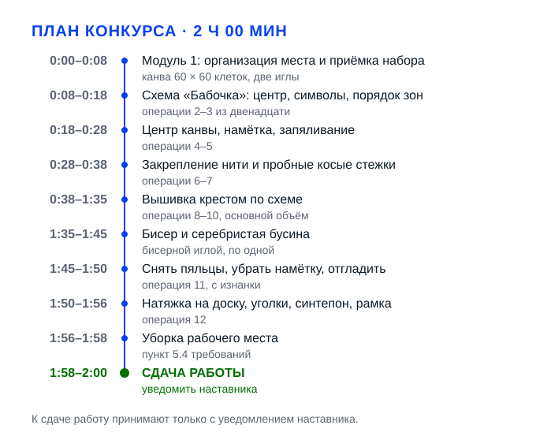
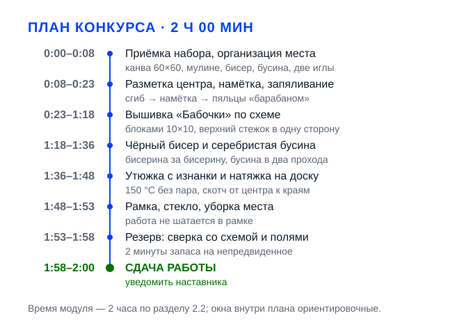
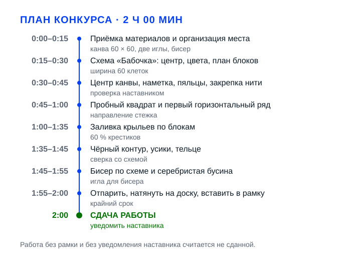

Вышивка крестиком (ФВ)
Задания ниже — официальные файлы «Абилимпикс» (источник: abilympics-russia.ru), разложенные по категориям. Решения написаны по тексту задания, регламенту и критериям оценки; в них указано, что именно проверяет эксперт.
Школьник
14–16 лет, базовый уровень заданияВ официальном файле категории не разделены отдельными разделами — приводим задание целиком; различия по категориям смотрите в таблице модулей.
Пошаговое решение
Разбор официального конкурсного задания для категории «Школьники»: за два часа нужно выполнить ручную вышивку отделочными швами по схеме и образцу на пластиковой канве. Набор — белый отрез 60 × 60 клеток, чёрное мулине, чёрный бисер, серебристая бусина с ажурными краями, синтепон для набивки подушечки и рамка. В задании двенадцать технологических операций: от подготовки материалов и перевода картинки в схему до натяжки вышивки на доску и вставки в рамку. Оценивают четыре вещи из п. 2.3: организовано ли место, выполнено ли изделие по описанию и схеме, приведено ли место в порядок, уведомлён ли наставник. Баллы в опубликованном задании не расписаны, поэтому ориентир — результат модуля и ровность: попадание в схему, одинаковые крестики, чистая изнанка, ровная натяжка и углы. Два часа — жёстко: на вышивку остаётся чуть больше часа, значит подготовка занимает десять минут, а не тридцать.

Задача 1. Организовать рабочее место и принять наборМодуль 1 · первые 10 минут из 120 · пункт 2.3 КЗ, операция 1
Стол должен быть готов раньше, чем вы возьмёте иглу. Пластиковая канва не прощает спешки: на ней видно каждый затянутый стежок, а распустить крестик, не разлохматив нить, почти невозможно, поэтому первый десяток минут уходит на свет, посадку и приёмку выданного набора. В набор входят два белых отреза 60 × 60 клеток, чёрное мулине, чёрный бисер, серебристая бусина, синтепон, пяльцы, рамка, ножницы и вспарыватель — всё это нужно пересчитать и разложить по зонам до старта, потому что после старта время идёт уже из двух часов.
Действие 1.1. Осмотреть место, свет и посадку
Шаг 1.1.1
Садимся за стол и первым делом ставим его так, чтобы рабочая поверхность была перед глазами, а не сбоку: канва в пяльцах лежит на столе или упирается нижним краем в край стола, локти опираются на столешницу, спина прижата к спинке стула, обе ноги на полу. Лампу ставим слева и чуть впереди, если вы правша, на высоте двадцати-тридцати сантиметров над работой, чтобы свет падал на клетки, а не в глаза и не давал тени от руки на рабочую зону. Пяльцы кладём в центр стола, ножницы — справа лезвиями от себя, схему — на подставку или прислоняем к чему-то перед собой, а не кладём плашмя под руки.
Свет и посадка — не про комфорт, а про темп. Клетки на пластиковой канве мелкие, отверстия маленькие, и при наклоне «носом в работу» через полчаса начинает болеть шея, а промахи иглой идут один за другим. Эксперт обходит места в первые минуты модуля 1 и отмечает, готова ли зона к работе: считается организация рабочего места, то есть подготовленные инструменты и отсутствие беспорядка на столе.
Проверка простая: сядьте, положите руки на стол и посмотрите, видно ли отверстие в клетке, не наклоняясь. Если приходится придвигаться — лампа стоит не там или низко. Тени от кисти на рабочей зоне быть не должно, а до схемы вы должны дотягиваться взглядом, не поворачивая всю голову.
Типичная ошибка — работать при общем потолочном свете и считать, что «видно». Вторая — поставить лампу справа правше: кисть с иглой закрывает именно ту клетку, в которую нужно попасть, и вышивка начинает идти на ощупь, с растянутыми и разъехавшимися крестиками, а распускать на пластиковой канве дорого по времени.
Эксперт смотрит на посадку и свет в первые две-три минуты, пока участники рассаживаются: сгорбленная спина и работа почти вплотную к канве — верный признак, что к середине второго часа темп упадёт.
Шаг 1.1.2
Убираем со стола всё, что не относится к заданию: телефон, тетради, лишнюю одежду, сумку. Пластиковая канва срезается и держит форму, но она скользит по гладкой столешнице, поэтому под работу подкладываем лист плотной бумаги или кусок фетра размером чуть больше пялец — тогда канва не ёздит и не цепляется за стыки стола. Пяльцы, ножницы, вспарыватель, иглы и мулине раскладываем так, чтобы до каждой вещи было одно движение руки, не вставая и не перекладывая канву.
Порядок на столе экономит минуты, а их в задании всего сто двадцать. Кроме того, в пункте 5.3 требований охраны труда прямо сказано: не загромождать проходы и использовать инструмент только по назначению — эксперт видит и это. Аккуратно разложенное место читается как готовность к работе, а не как «сейчас разберусь по ходу».
Признак готового места: до ножниц, вспарывателя и мулине вы дотягиваетесь, не вставая; канва не съезжает, если нажать на неё ладонью; в проходе за спиной ничего не лежит. Если хотя бы одна вещь лежит позади рабочей зоны — переложите сейчас, потом будет поздно.
Ошибка — оставить на столе открытую бутылку с водой, телефон и наушники: они занимают место именно там, где кладут пяльцы, и рано или поздно вода окажется на канве, а мокрый пластик ведёт себя иначе — клетки деформируются, и натяжка при оформлении пойдёт волной.
Эксперт отмечает чистоту зоны и то, лежит ли инструмент в пределах рабочего поля. Захламлённый стол — не «творческий беспорядок», а нарушение организации места.
Действие 1.2. Принять и пересчитать материалы
Шаг 1.2.1
Пересчитываем набор по перечню из задания: два белых отреза пластиковой канвы 60 × 60 клеток, мулине чёрное (допускаются DMC, Anchor 403, Madeira black), бисер чёрного цвета, серебристая бусина с ажурными краями, кусок синтепона для набивки, пяльцы, рамка, игла для вышивки, отдельная игла для работы с бисером, ножницы Н-16М и большой вспарыватель VSP-30. Считаем именно штуками и клетками, а не «на глаз»: канву кладём на стол и пересчитываем по десять клеток в ряд, отмечая десятки вслух.
Приёмка — единственный момент, когда недостачу ещё можно закрыть. Дальше замена идёт только через наставника, и то если причина уважительная. Пересчёт по десять клеток нужен потому, что схема «Бабочки» привязана к сетке: если отреза не 60 клеток, а 58, центр схемы уже не совпадёт с центром отреза, и вся разметка поедет.
Все позиции перечня отмечены, канва пересчитана по обеим сторонам — и по ширине, и по высоте, и оба числа равны шестидесяти. Бусина целая, без скола на ажурном крае, бисер не слипшийся, мулине не перекручено в жгут. Если сомневаетесь в чём-то — поднимите руку сразу.
Самая частая ошибка — не пересчитывать канву и обнаружить нехватку клеток, когда половина бабочки вышита: смещать рисунок уже некуда, а поля по краю получаются кривыми, и при натяжке на доску один край не добирает до рамки. Вторая — взять одну иглу на всё: бисерная игла толще и с узким ушком, вышивальная после бисера идёт с трудом.
Наставник и эксперт фиксируют, все ли позиции на месте. Отдельно смотрят, разложены ли две иглы по назначению — это видно уже на этапе выдачи. Отдельно он фиксирует, обе ли иглы на месте и воткнуты ли они раздельно.
Шаг 1.2.2
Раскладываем мулине и бисер по зонам, не смешивая. Мулине отделяем от пасмы: берём одну нить длиной примерно сорок-пятьдесят сантиметров, то есть от кисти до локтя, и отрезаем наискось, а не рвём — рваный конец махрится и не проходит в ушко. Для вышивки на пластиковой канве рабочая нить обычно в два-три сложения: складываем отрезанный кусок пополам и вдеваем оба конца в иглу, чтобы на конце получилась петля. Бисер высыпаем не горкой, а в плоскую крышку или на ворсистую салфетку с бортиком, чтобы он не скатывался на пол.
Отдельная зона для бисера нужна потому, что бисеринки чёрные и мелкие, а мулине тоже чёрное: в общей куче вы будете вылавливать бисерину пальцами и терять по минуте на каждую. Петля на конце нити вместо узелка — потому что узелок на пластиковой канве даёт бугорок на изнанке и мешает ровно натянуть работу при оформлении.
Проверьте: нить в игле сидит плотно, но проходит в отверстие клетки без нажима; на конце петля, а не узел; бисерины лежат в один слой и не перекатываются через бортик. Длина отрезанного куска — не больше пятидесяти сантиметров, иначе нить путается и трётся о край клетки, теряя блеск.
Ошибка — отрезать нить «подлиньше», на всю пасму, и потом вытаскивать из неё узелки. Вторая — вдеть в иглу один конец и завязать узел: на изнанке получается шишка, которая не даст канве лечь ровно на доску, а при натяжке даст волну на лицевой стороне.
Эксперт смотрит на подготовку нити, когда обходит места в начале модуля: петля без узла и аккуратно отрезанный конец — признак того, что участник работал с канвой раньше.
Шаг 1.2.3
Отдельно готовим бисерную иглу и бусину. Бисерную иглу втыкаем в игольницу рядом с вышивальной, но не в одну дырочку. Серебристую бусину с ажурными краями кладём на салфетку вверх ажуром — у неё есть лицевая и изнаночная сторона, и на изнанке край выглядит как обычное кольцо. Синтепон откладываем в сторону: он понадобится только на последнем этапе, при набивке подушечки, и до тех пор не должен лежать на рабочем поле, потому что пух цепляется за нить.
Бусина в этой работе — акцент, и её ажурный край должен смотреть на зрителя; если перевернуть, вся деталь теряет смысл, а исправить это можно только полной перешивкой. Синтепон, лежащий рядом с канвой, — источник пуха: волокна прилипают к мулине и потом видны на лицевой стороне как светлые волоски, которые не убрать ни пинцетом, ни скотчем.
Бусина лежит ажуром вверх, не катается; бисерная игла воткнута отдельно и её видно; синтепон убран в пакет или в сторону, на рабочем поле его нет. Проверьте на просвет: если ажурный край читается как рисунок — сторона правильная.
Ошибка — держать синтепон под рукой «чтобы не искать». Вторая — сразу пришить бусину, не проверив сторону: ажур на изнанке виден только на просвет, и обнаруживается это уже при сдаче, когда снимать её с готовой работы означает испортить тельце бабочки.
Эксперт осматривает готовую работу целиком, и положение бусины — один из тех мелких признаков, по которым сразу видно, понимал ли участник, что именно он собирает.
Действие 1.3. Снять риски до первого стежка
Шаг 1.3.1
Проверяем инструмент на безопасность, как требует пункт 5.6: ножницы передаём и кладём только в закрытом виде, лезвиями от себя, и никогда не держим концами вверх. Ножницы Н-16М маникюрные, сто миллиметров — они острые и короткие, ими удобно подрезать нить у самой канвы, но именно поэтому палец левой руки держим подальше от линии реза, а режем не «на себя», а в сторону от корпуса. Вспарыватель VSP-30 кладём остриём в чехол или в сторону от руки: он нужен, чтобы распускать стежки, а не чтобы лежать открытым на столе.
Требования охраны труда — часть задания, а не формальность: за их нарушение работу могут остановить. Кроме того, травма руки на конкурсе означает, что вышивку вы закончить не сможете физически, и никакие баллы за ровность крестиков уже не спасут. Маникюрные ножницы при неаккуратном обращении режут именно подушечку большого пальца, которым придерживают канву.
Инструмент лежит закрытым, лезвия не выступают за край стола, вспарыватель не направлен в сторону руки. Проверьте себя: если задеть ножницы локтем, они не должны упасть остриём вниз на колени — значит, лежат слишком близко к краю.
Ошибка — держать ножницы в стакане лезвиями вверх «чтобы удобно брать»: это прямо запрещено пунктом 5.6, и эксперт это видит. Вторая — распускать стежок вспарывателем, поддевая его к себе: остриё соскакивает и рвёт канву, а на пластике дырка не зарастает.
Эксперт и наставник проверяют организацию места и соблюдение требований охраны труда до начала работы; нарушение фиксируется сразу, а не в конце. Нарушение требований охраны труда фиксируется сразу, а не по итогам смены.
Шаг 1.3.2
Убираем с канвы и со стола всё, что может затянуть нить: обрезки, бумажки, скотч, случайные волоски. Руки вытираем насухо — на пластике влажный след от пальца виден и мешает видеть клетки. Волосы убираем назад, длинные рукава подворачиваем: рукав, который цепляется за пяльцы, сдвигает канву в самый неподходящий момент, и уже вышитый ряд уезжает вместе с ней.
Пластиковая канва не даёт усадки и не тянется, но она скользкая, и любая ворсинка, попавшая под стежок, вытаскивается потом вместе с нитью, оставляя петлю. Убранные волосы и рукава — это те же пять секунд сейчас, которые иначе превращаются в распущенный и перешитый фрагмент потом, уже за счёт времени вышивки.
Проверьте канву на просвет и под углом к лампе: на пластике видно каждую ворсинку, и её нужно снять, а не вшивать. Руки сухие, рукава не спускаются ниже запястья, волосы не падают на лицо при наклоне.
Ошибка — начать вышивать в свитере с длинным ворсом: пух ложится на канву и вшивается в первые же крестики, а вычистить его из готовой вышивки почти нельзя. Вторая — протереть стол влажной салфеткой и сразу сесть работать, не дождавшись, пока высохнет: мокрое пятно под канвой даёт разводы на белом пластике.
Эксперт обращает внимание на аккуратность до старта: чистый стол, сухие руки и убранные волосы — часть культуры работы с канвой, которую на этой компетенции оценивают отдельно.
Задача 2. Получить схему и прочитать её до первого стежкаМодуль 1 · операции 2 и 3 из двенадцати · около 10 минут
Схема — это чертёж, по которому вы будете работать полтора часа, и ошибка в её чтении стоит дороже всего остального. По заданию рисунок либо выбирают готовый, либо переводят картинку в схему в программе pic2pat, а затем работают по готовой схеме «Бабочка». Читать её нужно не глазами по диагонали, а по правилам: где центр, сколько клеток в высоту и ширину, каким символом обозначен какой цвет, в какую сторону идут верхние стежки. Пока эти четыре вещи не поняты, иглу в канву лучше не вставлять — распускать на пластике почти невозможно.
Действие 2.1. Получить схему «Бабочки»
Шаг 2.1.1
Если работаем по готовой схеме, берём лист «Бабочка» и сразу пишем на нём карандашом дату и свою фамилию — лист ходит по столу, и через час его уже не найти под канвой. Если рисунок выбираем сами, открываем pic2pat.com/index.ru.html, загружаем картинку, выставляем размер схемы не больше 60 клеток по большей стороне и количество цветов: для этой работы цвет один — чёрный, поэтому в настройках ставим минимум цветов, чтобы программа не разложила бабочку на десять оттенков серого. Скачанную схему распечатываем или перерисовываем на лист в клетку.
Ограничение в 60 клеток — прямо из задания: отрез канвы 60 × 60 клеток, и схема шире отреза физически не влезет. Один цвет нужен потому, что набор содержит чёрное мулине и чёрный бисер; если оставить в программе десять оттенков, вы будете полчаса искать, чем заменить серый, и в итоге получите грязную работу вместо силуэта.
На схеме видна сетка, каждая клетка пронумерована по краям десятками, по большей стороне не больше шестидесяти клеток, и цвет в легенде один. Проверьте, что схема читается: если символы сливаются, распечатайте крупнее или перерисуйте на лист в клетку с шагом пять миллиметров.
Ошибка — взять картинку с фотографии, где фон и крылья отличаются на полтона: программа разложит её на десяток оттенков, и в чёрно-белом исполнении бабочка превратится в пятно. Вторая — сделать схему на 80 клеток и потом обрезать крылья, потому что в отмеренные 60 клеток она не встала.
Эксперт смотрит на лист со схемой в начале работы: схема с сеткой и легендой читается как подготовка, картинка из интернета без разметки — как импровизация.
Шаг 2.1.2
Кладём схему перед собой на подставку под углом примерно в тридцать градусов, а не плашмя: тогда взгляд переходит с канвы на схему без наклона головы. Отмечаем на схеме зону, которую вышиваем первой, — обычно это нижний левый угол рисунка, и обводим её карандашом. Рядом с схемой кладём простой карандаш и линейку: ими вы будете закрывать уже отработанные ряды, чтобы не сбиться со счёта.
Плашмя лежащая схема заставляет наклоняться над столом, и уже через двадцать минут шея и глаза устают настолько, что счёт клеток начинает сбиваться. Отмеченная зона первого участка — это страховка от самой частой ошибки новичка: начать с середины, уйти в сторону и обнаружить, что рисунок смещён на две клетки, когда исправлять уже нечем.
Схема не закрывает канву, читается с рабочего расстояния, зона первого участка обведена. Проверьте: переведите взгляд с канвы на схему и обратно — если каждый раз приходится искать место, где вы остановились, поставьте на этом месте галочку карандашом.
Ошибка — положить схему под пяльцы «чтобы не мешала»: вы будете вынимать её каждый десяток стежков и терять счёт. Вторая — держать схему в телефоне: экран гаснет, масштаб скачет, и на ярком свету площадки вы не увидите символы.
Эксперт отмечает, работает ли участник по схеме или «по памяти»: взгляд, который регулярно возвращается к листу, — признак правильной технологии. Схема, приколотая к столу под рукой, читается как отсутствие подготовки.
Действие 2.2. Прочитать сетку, символы и центр
Шаг 2.2.1
Находим на схеме центр: обычно он отмечен жирными линиями или треугольниками по краям. Считаем от центра до края рисунка по горизонтали и по вертикали и записываем оба числа на полях — например, двадцать две клетки вправо и семнадцать вверх. Только после этого смотрим на символы: у чёрного цвета в легенде стоит один значок, и все клетки с этим значком вышиваются полностью, а пустые клетки остаются пустыми.
Центр нужен потому, что канва размечена от центра, и весь рисунок будет выравниваться относительно него. Если начать с угла схемы, а не от центра, при несимметричной бабочке одно крыло упрётся в край отреза, а второе оставит широкое поле — при натяжке на доску это станет видно сразу, и переделать уже нельзя.
Числа от центра до краёв записаны и проверены дважды: пересчитайте десятками, а не по одной клетке. Сумма «влево + вправо» плюс один должна давать общую ширину рисунка — если не сходится, вы сбились на клетку и нужно пересчитать.
Ошибка — определять центр «на глаз, тут примерно». Вторая — считать клетки по одной и сбиваться на двадцатой: на схемах с мелкой сеткой это происходит почти всегда, поэтому считают десятками, отмечая каждый десяток точкой на полях.
Эксперт проверяет, размечен ли центр на схеме и на канве одинаково: несовпадение видно по готовой работе — рисунок стоит не по центру рамки. Пересчёт от центра до краёв он может попросить повторить вслух.
Шаг 2.2.2
Разбираем направление стежка. Классический крест на пластиковой канве вышивается в два хода: сначала по всей площади идут косые стежки в одном направлении — из нижнего левого угла клетки в верхний правый, — а потом поверх них ложатся обратные косые, из нижнего правого в верхний левый. Верхние стежки у всех крестиков должны смотреть в одну сторону. В задании этот приём назван вышивкой косых стежков, и его сначала пробуют на отдельном кусочке.
Одинаковое направление верхнего стежка — главный признак аккуратной вышивки: при разном направлении поверхность начинает «играть» и работа выглядит рябой, даже если крестики ровные. На пластиковой канве это заметно сильнее, чем на ткани, потому что свет отражается от ровных пластиковых перемычек.
Посмотрите на вышитый участок под углом к лампе: все верхние стежки лежат параллельно друг другу, как насечки. Если часть крестиков «перевёрнута» — это видно как ритмично повторяющиеся тёмные квадраты, и такие крестики перешивают сразу, а не в конце.
Ошибка — вышивать каждый крестик отдельно, полным крестом: работа идёт вдвое медленнее, а на изнанке образуется бугор из перекрещенных нитей, который не даст канве лечь ровно. Вторая — менять направление верхнего стежка при переходе к новому ряду.
Эксперт смотрит на вышивку под углом и оценивает именно единообразие: это первое, что видно на готовой работе с расстояния вытянутой руки. На чёрной нити это особенно заметно: она даёт сильный блеск на перемычках.
Шаг 2.2.3
Отмечаем на схеме порядок работы: сначала вышиваем крупные плоскости крыльев — их удобно вести рядами, — потом контур и мелкие детали, а бисер и серебристая бусина идут последними. На схеме простым карандашом ставим цифры 1, 2, 3 у соответствующих зон. Если в рисунке есть просветы между крыльями, обводим их и оставляем пустыми: они вышиваются не будут.
Порядок «плоскости — контур — декор» экономит нить и время: пока вышиваются крупные участки, нить не перерезается на каждом шаге, а бисер в самом конце не мешает канве лежать на столе и цепляется за нить меньше. Просветы, оставленные пустыми, — часть рисунка: если зашить их, силуэт бабочки потеряет форму, а это уже несоответствие схеме.
На схеме стоят номера зон, просветы обведены и не закрашены. Проверьте себя: если закрыть глаза и открыть, вы сразу понимаете, с какого края начинать. Если нет — разметка не закончена, и в работе вы будете каждый раз решать это заново.
Ошибка — начинать с бисера и бусины, потому что «это самое интересное»: бисер цепляется за нить при вышивке крестом, бусина мешает пяльцам, а время на основную вышивку тает. Вторая — зашить просвет между крыльями «чтобы было плотнее».
Эксперт на промежуточном осмотре видит, идёт ли работа от крупного к мелкому: хаотичные переходы с крыла на тельце и обратно — признак того, что схема не прочитана.
Действие 2.3. Подготовить схему к работе на столе
Шаг 2.3.1
Закрываем уже отработанные участки схемы чистым листом или линейкой: сдвигаете лист вниз по мере продвижения и видите только тот десяток рядов, который вышиваете сейчас. Одновременно на канве, если она размечена, ставите карандашом еле заметные точки на пересечениях каждой пятой линии — они помогут считать клетки, не водя пальцем по вышивке. Точки ставим мягко, чтобы не продавить перемычки.
Пластиковая канва — сетка с крупными отверстиями, и считать по ней легко, но ровно до момента, когда половина клеток уже закрыта стежками. Точки каждые пять клеток сохраняют ориентацию: по ним видно, где вы находитесь, даже когда рисунок закрыт нитками и считать приходится по изнанке.
Лист закрывает всё, кроме рабочего десятка рядов; точки на канве видны, но не бросаются в глаза. Проверьте: закройте вышитый участок рукой и попробуйте назвать, в какой клетке вы остановились. Если ответ «где-то тут» — разметки мало.
Ошибка — размечать канву жирным маркером или ручкой: на белом пластике след не смывается и остаётся в просветах между крестиками, а просветы здесь — часть рисунка. Вторая — не закрывать схему и постоянно водить по ней пальцем, стирая символы.
Эксперт проверяет аккуратность разметки: еле заметные точки допустимы, жирные линии на просветах — нет, это видно на готовой работе. Жирная разметка на просветах между крестиками — отдельная потеря баллов.
Шаг 2.3.2
Отдельно проверяем, что схема соответствует образцу, если образец выдан: смотрим на силуэт, число рядов и положение бусины. Если расхождение есть, работаем по схеме, но фиксируем это на листе и показываем наставнику до начала вышивки, а не после. Вопрос задаём коротко и по делу: в каком месте схемы и на сколько клеток расходится рисунок. Если образца нет, сверяем только со схемой и её легендой.
Расхождение схемы и образца — редкость, но если оно есть, то выяснять это нужно на нулевом стежке, а не на сотом: после вышивки половины крыла переделка невозможна, а работа будет оценена как несоответствующая заданию. Спокойный точный вопрос наставнику — это ещё и часть оценки организации работы.
Схема и образец сведены, расхождений нет или они зафиксированы и решены. Проверьте, что вы понимаете каждую зону рисунка: крылья, тельце, усики, место бусины. Если расхождение есть, оно должно быть записано на листе, а не запомнено.
Ошибка — заметить расхождение и промолчать, «дорисовав по-своему». Вторая — спорить и требовать замены схемы вместо того, чтобы показать конкретное место расхождения. Третья — решить вопрос молча, переставив клетки в схеме под себя.
Наставник по компетенции работает рядом и отвечает на такие вопросы; эксперт фиксирует, обращался ли участник с проблемой схемы. Вопрос, заданный до первого стежка, оценивается как работа с заданием, а не как паника.
Задача 3. Подготовить канву: центр, намётка, пяльцыМодуль 1 · операции 4–6 из двенадцати · около 10 минут
Пластиковая канва — это не ткань: она не тянется, не осыпается по краю и не прощает перекоса. Поэтому центр находят не «на глаз», а складыванием отреза вдоль и поперёк, а линию сгиба помечают намёточными стежками, как сказано в задании. Дальше канву заправляют в пяльцы так, чтобы сетка не повело, и закрепляют рабочую нить без узла — на пластике узел даёт бугор и мешает ровной натяжке при оформлении. Эти три операции занимают десять минут, но именно они определяют, будет ли бабочка стоять по центру рамки.
Действие 3.1. Найти центр отреза и отметить сгибы
Шаг 3.1.1
Кладём отрез 60 × 60 клеток на стол и определяем его центр складыванием: сначала складываем пополам вдоль, совместив кромки и пересчитав клетки по краю, приглаживаем сгиб ладонью, разворачиваем; потом складываем пополам поперёк и приглаживаем второй сгиб. В месте пересечения двух сгибов получается центр отреза — на пластиковой канве сгиб виден как светлая полоса по перемычкам. Пересчитываем от этого места до каждого края: должно получиться по тридцать клеток в каждую сторону.
Задание прямо предписывает определять центр складыванием, и это единственный способ, который не даёт ошибки: на глаз центр белого пластика уходит на две-три клетки, а вся разметка строится от него. Тридцать клеток в каждую сторону от центра — арифметическая проверка того, что вы нашли именно середину, а не крайнюю четверть.
Сгибы пересекаются в одной точке, и от неё до каждого края ровно по тридцать клеток — проверяйте пересчётом десятками, а не на глаз. Сгибы не должны быть заломлены до белого перелома: на пластике сильный залом оставляет след, который потом видно на лицевой стороне.
Ошибка — отсчитывать тридцать клеток от одного края и ставить точку, не проверяя вторую сторону: при неточной кромке отрез бывает на клетку шире, и центр уезжает. Вторая — складывать по диагонали: так вы найдёте центр квадрата только в теории, а на практике получите косой сгиб через всю работу.
Эксперт смотрит, размечен ли центр до начала вышивки: точка, поставленная от сгиба, и точка, поставленная на глаз, дают разное положение рисунка в рамке.
Шаг 3.1.2
Отмечаем линии сгиба намёточными стежками: берём нить контрастного цвета — в наборе чёрное мулине, поэтому для намётки годится светлая нить из запаса или тонкая белая, — и прокладываем шов «вперёд иголку» по линии сгиба через две клетки, с пропуском в две. Стежки идут ровно по перемычкам, не заходя в отверстия, которые будут вышиваться. Так же прокладываем вторую линию, поперечную.
Намётка нужна, чтобы центр был виден в любой момент работы: через сорок минут сгибы расправятся, канва ляжет в пяльцах, и без намётки вы уже не найдёте середину, а от неё считается каждый ряд. Прокладывать шов по перемычкам, а не через отверстия, — потому что отверстия нужны свободными под крестики: занятое отверстие потом придётся освобождать, распуская стежки.
Линии видны с рабочего расстояния, стежки лежат на перемычках, ни одна дырочка под крестики не занята. Проверьте: линии должны пересекаться точно в отмеченном центре, а не рядом с ним — сдвиг на одну клетку уже ошибка.
Ошибка — намётывать той же чёрной нитью, которой вышивают: линии сольются с вышивкой, и вы не отличите намётку от крестиков. Вторая — прокладывать стежки через отверстия: они забьют дырочки, и игла при вышивке будет упираться.
Намётка видна эксперту на промежуточном осмотре: ровные контрастные линии по центру читаются как работа по технологии, а не как «я и так помню, где середина».
Шаг 3.1.3
Ставим метку центра: в клетку точно на пересечении сгибов наносим еле заметную точку карандашом по пластику — мягким, чтобы не поцарапать, — или закрепляем в этом месте короткий контрастный стежок. Точку ставим с лицевой стороны, а не с изнанки, чтобы она была видна при вышивке. Сразу же отмечаем карандашом на схеме ту же клетку: центр схемы и центр канвы должны совпасть.
Совмещение центра схемы и центра канвы — то место, где ошибка стоит всей работы. Если центр схемы смещён на две клетки, бабочка уйдёт в сторону, и при натяжке на доску одно поле окажется шире другого, а это видно даже без линейки. Метка на лицевой стороне нужна потому, что вышивка идёт с лица, и именно от неё вы будете отсчитывать первые ряды.
Точка стоит точно на пересечении намёточных линий, и на схеме отмечена та же клетка. Проверьте пересчётом: от точки до верхнего края и до нижнего — по тридцать клеток, то же по горизонтали. Метка должна попадать ровно в ту клетку, которая отмечена на схеме.
Ошибка — поставить точку на глаз «около пересечения»: сдвиг на одну клетку на старте превращается в сдвиг всего рисунка, а заметно это станет только к концу вышивки. Вторая — метить с изнанки и потом вышивать, переворачивая канву: так теряется ориентация и путается направление верхнего стежка.
Эксперт проверяет положение центра перед началом вышивки, если подходит к столу: это тот момент, когда ошибку ещё можно исправить бесплатно. Сдвиг центра на клетку он видит потом по полям в рамке: одно шире другого.
Действие 3.2. Заправить канву в пяльцы
Шаг 3.2.1
Разбираем пяльцы: отворачиваем винт верхнего кольца, снимаем его и кладём рядом. Нижнее кольцо кладём на стол выпуклой стороной вверх, накрываем его канвой так, чтобы центр отреза с намёткой оказался точно в центре кольца, и придерживаем ладонью. Следим, чтобы линии сетки шли параллельно краю кольца, а не по диагонали — на пластиковой канве перекос виден сразу по перемычкам.
Порядок «сначала нижнее кольцо, потом канва, потом верхнее» — единственный, при котором канва не сдвигается в процессе. Параллельность сетки краю пялец нужна не для красоты: если канва лежит косо, вы будете вышивать ряды по диагонали, а при натяжке на доску прямоугольник канвы окажется ромбом и не совпадёт с рамкой.
Сетка идёт параллельно краю кольца, центр канвы совпадает с центром пялец, канва не свисает с одной стороны больше, чем с другой. Проверьте пересчётом клеток от края кольца до центра по двум направлениям — числа должны совпасть.
Ошибка — натянуть канву на кольцо, не разобрав пяльцы: канва идёт волной, и вышивать приходится через складку. Вторая — поставить пяльцы так, что центр оказался у края: тогда часть рисунка попадёт на кольцо, и вышивать её будет нечем.
Эксперт смотрит на запяленную канву в начале модуля: перекос сетки — самая заметная ошибка подготовки, потому что она сохраняется до конца работы. Перекошенная сетка сохраняется до самого оформления и видна в рамке.
Шаг 3.2.2
Накрываем канву верхним кольцом и подтягиваем винт, но не зажимаем до конца: сначала расправляем канву пальцами от центра к краям, выводя мелкие складки, потом подтягиваем винт до состояния, когда канва звенит под пальцем, но кольца не деформируют пластик. Пластиковую канву нельзя тянуть как ткань: она не тянется, и чрезмерное усилие ведёт к тому, что клетки у края кольца выгибаются дугой.
Натяжение определяет ровность крестиков: на провисшей канве стежки ложатся свободно и работа выглядит рыхлой, на перетянутой — клетки деформируются, и игла идёт туго, а нить быстро лохматится. Пластик требует середины: канва должна быть ровной, как натянутая мембрана, но без изгиба перемычек.
Проверьте двумя способами: щёлкните по канве пальцем — звук должен быть сухим и коротким, без дребезга; посмотрите на просвет вдоль пялец — линия сетки у края кольца остаётся прямой, без волны. Если видите изгиб перемычек — ослабьте винт на пол-оборота.
Ошибка — зажать винт «чтобы держалось крепче»: пластик выгибается, клетки у края становятся уже, и крестики в этом ряду получаются мельче остальных, а исправить это можно только полной перетяжкой. Вторая — оставить канву провисшей и надеяться, что «натянется в процессе».
Эксперт проверяет натяжение, подходя к столу: провисшая канва видна по тени под ней, перетянутая — по дуге на перемычках у кольца. Провисшую канву он замечает по тени, которая лежит под ней на столе.
Шаг 3.2.3
Ставим запяленную работу на стол и проверяем, удобно ли её вести: пяльцы должны лежать устойчиво, не качаться на винте и не закрывать рабочую зону рисунка. Если винт мешает руке, поворачиваем пяльцы так, чтобы винт оказался сверху или сбоку от рабочей зоны, а не под кистью. Под пяльцы подкладываем лист бумаги или фетр, чтобы они не скользили по столешнице.
Пяльцы, качающиеся на винте, при каждом стежке меняют угол, и вышивка идёт с перекосом: игла входит в отверстие под другим углом, и крестик получается кособоким. Положение винта — мелочь, которая экономит десятки секунд на каждом повороте работы, а поворотов за два часа будет много.
Пяльцы стоят устойчиво, винт не под ладонью, рабочая зона открыта. Проверьте: положите руку так, как будете вышивать, — если винт упирается в запястье, поверните пяльцы на девяносто градусов и заново проверьте.
Ошибка — оставить винт снизу, «чтобы не мешал смотреть»: он упирается в стол, пяльцы качаются, и канва постепенно теряет натяжение. Вторая — работать, держа пяльцы на весу: через двадцать минут кисть устаёт, и стежки становятся неровными.
Эксперт отмечает устойчивость рабочего места: работа на весу и качающиеся пяльцы — признак того, что участник не думает о длинной дистанции в два часа.
Действие 3.3. Закрепить рабочую нить без узла
Шаг 3.3.1
Вдеваем нить в иглу для вышивки: мулине в два сложения, оба конца в ушко, на конце петля. Вводим иглу с изнанки в клетку рядом с точкой центра, оставляя на изнанке хвост около двух сантиметров, и делаем первый косой стежок, придерживая хвост пальцем левой руки. Затем пропускаем иглу под уже сделанным стежком с изнанки — так нить закрепляется без узла, — и только после этого начинаем первый крестик.
Закрепление без узла — требование, которое видно на изнанке: узел на пластиковой канве создаёт бугор, канва не ложится плоско, и при натяжке на доску в этом месте появляется вмятина. Кроме того, узел может развязаться при стирке или отпаривании, и тогда работа начнёт распускаться с первого стежка.
Потяните за нить: она держится, не выскальзывает, а на изнанке нет узла и нет длинного хвоста. Хвост должен быть убран под стежки, а не висеть петлёй — проверьте, перевернув пяльцы и посмотрев на изнанку под лампой.
Ошибка — завязать узел «как на ткани»: на пластике он не проваливается между перемычками и остаётся шишкой. Вторая — оставить хвост в три-четыре сантиметра и не закрепить его: он цепляется за соседние нити и вытягивается при каждом стежке.
Эксперт осматривает изнанку выборочно, но именно там видно, как участник закрепляет нить: аккуратная изнанка — один из признаков качества исполнения. Узел на изнанке он находит на ощупь, проводя пальцем по обратной стороне.
Шаг 3.3.2
Делаем контрольный крестик в первой клетке и смотрим на него: верхний стежок должен лечь слева направо или справа налево — но одинаково для всей работы, — а нить должна лежать плоско, без перекрута. Если нить скрутилась в жгут, даём игле свободно повиснуть и раскручиваем нить пальцами, а не тянем. Сразу проверяем, что крестик закрыл клетку полностью, не залез на соседнюю и не стянул перемычки.
Первый крестик — образец для следующих сотен: по нему видно натяжение нити и количество сложений. Если нить перекручена, все крестики будут с блеском в одну сторону и работа станет полосатой; если стежок слабый, клетка не закроется и в ней будет просвет до белого пластика, что на белой канве выглядит как дырка.
Крестик закрывает клетку целиком, края ровные, соседние клетки не стянуты, нить не перекручена. Посмотрите на работу с расстояния вытянутой руки: первый крестик не должен выделяться ни размером, ни плотностью.
Ошибка — тянуть нить изо всех сил: перемычки стягиваются, клетка становится уже, и в этом месте сетка идёт волной. Вторая — вышивать в пять-шесть сложений «чтобы было плотнее»: крестик получается толстым, игла не проходит в соседнее отверстие, а нить заканчивается вдвое быстрее.
Эксперт смотрит на первые крестики: по ним он понимает, каким будет качество всей работы, и может успеть подсказать, пока исправлять ещё дешево. Ему достаточно одного ряда, чтобы понять темп и натяжение всей работы.
Задача 4. Вышить «Бабочку» крестом по схемеВышивка · около 60 минут из 120 · операции 7–10 из двенадцати
Основная работа задания. Сначала пробуют технологию косых стежков на отдельном участке, потом вышивают первый горизонтальный ряд и только после этого ведут ряды по схеме, пока рисунок не будет закрыт полностью. На пластиковой канве крест ложится по перемычкам, и главное здесь — не скорость, а постоянство: одна и та же толщина нити, одно и то же направление верхнего стежка, одно и то же натяжение на каждой клетке. Именно по этим трём признакам работа отличается от «вышито, но как получилось».
Действие 4.1. Пробный участок и первый горизонтальный ряд
Шаг 4.1.1
Пробуем технологию косых стежков на участке, который потом закроется: например, на нижнем углу крыла, где по схеме сплошная заливка. Вводим иглу с изнанки в нижнее левое отверстие клетки, выводим в верхнее правое — это первый косой стежок. Не заканчивая крест, переходим в следующую клетку справа и повторяем тот же косой стежок, потом ещё и ещё: получается ряд параллельных наклонных линий через одну клетку.
Задание требует именно такой техники: сначала косые стежки, потом обратные поверх них. Косые стежки ложатся ровнее, потому что игла каждый раз идёт с изнанки налицо в одном направлении, и нить не перетирается о перемычку. Если вышивать сразу полным крестом, на изнанке получается перекрёсток из четырёх нитей, который не даёт канве лечь плоско.
Ряд косых стежков выглядит как частокол наклонных линий одинаковой длины и наклона, каждая проходит из нижнего левого угла в верхний правый. Проверьте: приложите линейку к верхним концам стежков — они должны лечь на одну линию.
Ошибка — делать стежок от центра клетки к центру: на пластиковой канве стежок ложится по перемычке, и если начать не в отверстии, игла расщепит пластик, оставив заусенец. Вторая — тянуть нить так, что стежок вдавливается в пластик и клетка деформируется.
Эксперт подходит к столу в первые минуты вышивки и смотрит на пробный участок: направление стежка и точка вкола иглы — база всей работы. Вкол иглы мимо отверстия виден по заусенцам на пластиковых перемычках.
Шаг 4.1.2
Возвращаемся по тому же ряду в обратном направлении и кладём вторые косые стежки поверх первых: вводим иглу в нижнее правое отверстие клетки и выводим в верхнее левое. Каждый крестик получается из двух перекрещенных стежков, и верхним всегда остаётся второй — тот, что идёт из нижнего правого в верхний левый. Ведём ряд до конца заливки, не пропуская ни одной клетки, и только потом переходим на следующий ряд.
Верхний стежок в одном направлении — то, что делает вышивку «ровной» на глаз: свет одинаково отражается от всех клеток, и поверхность читается как цельное полотно, а не как мозаика. Правило «сначала весь ряд в одну сторону, потом обратно» ещё и вдвое быстрее, потому что не нужно разворачивать пяльцы на каждом крестике.
Все крестики в ряду закрыты, верхние стежки параллельны, ряд идёт строго по линии сетки. Проверьте с изнанки: там должны быть видны короткие вертикальные или наклонные штрихи через клетку, а не длинные протяжки поперёк работы.
Ошибка — доводить крест не до конца и оставлять недотянутый второй стежок: клетка выглядит «приоткрытой», и белый пластик просвечивает в углу. Вторая — класть второй стежок в том же направлении, что и первый: получается не крест, а двойная наклонная линия, и рисунок теряет плотность.
Эксперт смотрит на ряд под углом к свету: «играющая» поверхность с разным наклоном верхних стежков сразу выдаёт неотработанную технику. Разный наклон верхних стежков он видит как рябь на плоскости крыла.
Шаг 4.1.3
Проверяем пробный участок и только потом идём дальше: сравниваем его со схемой по числу клеток — ряд должен покрыть ровно столько клеток, сколько закрашено в этом месте схемы. Считаем клетки пальцем по канве и карандашом по схеме, ставим галочку на схеме. Если ряд короче или длиннее на клетку — распускаем сейчас, вспарывателем, поддевая стежок снизу, а не сверху.
Первые двадцать клеток задают масштаб: если здесь вы сбились на клетку, дальше ошибка будет только накапливаться, и к тельцу бабочки крылья разойдутся с рисунком. Распускать вспарывателем снизу нужно потому, что сверху остриё цепляет перемычку и рвёт пластик, а снизу стежок поддевается за нить и выходит целым.
Ряд покрывает столько клеток, сколько на схеме, галочка поставлена, направление верхних стежков одинаковое. Проверьте на ощупь: поверхность должна быть ровной, без бугров на месте распущенных стежков — распущенная нить слегка лохматится, и её лучше заменить.
Ошибка — оставить расхождение в одну клетку «потом выровняю»: на схеме с заливкой это невозможно, потому что все соседние ряды уже привязаны к сетке. Вторая — распускать, рвя нить руками: обрывки остаются в перемычках, и в них потом путается игла.
Эксперт на промежуточном осмотре сверяет участок со схемой: расхождение в клетку видно по силуэту, даже если отдельные крестики ровные. Галочки на схеме он тоже смотрит: они показывают, что сверка действительно была.
Действие 4.2. Вести ряды по схеме
Шаг 4.2.1
Переходим к следующему ряду: ведём его снизу вверх или сверху вниз — но всегда в одном направлении для всей заливки, чтобы не путаться. Каждый ряд начинаем с той клетки, которая на схеме совпадает с краем заливки: прикладываем палец к канве, считаем от намёточной линии десятками, находим первую клетку ряда и только тогда вводим иглу. Считаем вслух или про себя, но обязательно с числом, а не «примерно тут».
Счёт от намёточной линии, а не от предыдущего ряда — страховка от накопления ошибки: если каждый ряд отсчитывать от центра, сдвиг не может накопиться, а если от соседнего ряда, одна ошибка тянет за собой следующие. Направление «снизу вверх» удобно тем, что рабочая нить уходит от вас, и вы не вышиваете по уже закрытым клеткам.
Каждый ряд начинается в правильной клетке, край заливки повторяет ступеньки схемы, без «провалов» и лишних клеток. Проверьте через каждые пять рядов: приложите линейку по краю заливки — ступеньки должны совпадать со схемой один в один.
Ошибка — вести ряд «по памяти» и не сверяться со схемой: через десять рядов рисунок уходит в сторону на две-три клетки, и это обнаруживается только на крыле, где уже нечего исправлять. Вторая — считать от предыдущего ряда и тащить ошибку вниз.
Эксперт смотрит, возвращается ли участник к схеме: взгляд на схему перед каждым рядом — признак того, что рисунок ведётся, а не «рисуется по интуиции».
Шаг 4.2.2
На переходах между участками одной заливки нить не обрезаем: проводим её по изнанке под уже вышитыми стежками на расстояние не больше трёх-четырёх клеток и выводим в нужном месте. Если переход длиннее, нить закрепляем и начинаем заново. Протяжку ведём по диагонали, а не поперёк, чтобы она не просвечивала между перемычками с лицевой стороны. Закрепляем нить под тремя стежками, а не под одним.
Протяжка по изнанке экономит нить и время: каждый обрыв и новое закрепление — это полминуты, а за час вышивки их набирается двадцать. Ограничение в три-четыре клетки связано с тем, что длинная протяжка на пластиковой канве видна на просвет и цепляется за иглу при следующих стежках, а на изнанке выглядит как брак.
С изнанки нет протяжек длиннее четырёх клеток, нить не провисает петлёй, на лицевой стороне между крестиками не видно тёмных полос на просвет. Проверьте, подняв канву к лампе: длинные протяжки читаются как тени.
Ошибка — тянуть нить через всю работу «чтобы не закреплять»: на просвет это видно, а при натяжке на доску протяжка ложится под крестики и создаёт рельеф. Вторая — закреплять нить на каждом стежке: изнанка покрывается бугорками, и работа становится жёсткой.
Эксперт выборочно смотрит изнанку: короткие аккуратные протяжки — норма, длинные диагонали через всю канву — минус за качество исполнения. Длинные протяжки он ищет, поднимая канву к свету и глядя на просвет.
Шаг 4.2.3
Держим ритм: работаем участками по десять-пятнадцать минут, после каждого участка отводим взгляд от канвы на десять-пятнадцать секунд и смотрим вдаль, а кисть встряхиваем. Пяльцы поворачиваем по мере продвижения, чтобы рабочая зона всегда была внизу, ближе к вам, а не в верхней части кольца, куда тянуться рукой неудобно. Схему передвигаем так, чтобы текущий десяток рядов был на уровне глаз.
Два часа непрерывной мелкой работы — это нагрузка на зрение и кисть, и именно к концу второго часа темп падает, а ошибки растут: последние ряды обычно хуже первых. Короткие паузы на десять секунд сохраняют скорость до самого конца, а поворот пялец избавляет от тянущихся стежков, которые получаются, когда рука работает на вытянутой руке.
Проверьте по часам: если за десять минут вы закрываете примерно одинаковое число клеток в начале и в конце работы, ритм ровный. Если последние ряды идут вдвое медленнее — вы устали и пора сделать паузу, а не гнать.
Ошибка — работать без пауз «пока есть время»: к концу вышивки кисть начинает дрожать, и стежки выходят разного натяжения, а это видно на всей работе. Вторая — не поворачивать пяльцы и вышивать верхнюю часть кольца на вытянутой руке.
Эксперт наблюдает за темпом в течение всего модуля: ровная скорость и периодические паузы — признак того, что участник рассчитал силы на два часа. Усталость видна по последним рядам: они идут медленнее и выходят неровнее.
Действие 4.3. Держать ровность, натяжение и чистую изнанку
Шаг 4.3.1
Каждые десять-пятнадцать минут переворачиваем пяльцы и смотрим на изнанку: не осталось ли узлов, длинных хвостов, петель. Петлю, вытянувшуюся на изнанку, подтягиваем с лицевой стороны, а не дёргаем с изнанки. Хвосты длиннее сантиметра подрезаем ножницами под самое основание, но не вплотную к перемычке, чтобы не порезать пластик. Иглу при этом держим остриём от себя, чтобы не зацепить готовую вышивку.
Изнанка — вторая сторона работы, и её смотрят при оценке: бугры, узлы и тянущиеся петли не дают канве лечь на доску ровно, а при натяжке двусторонним скотчем именно они создают волну на лицевой стороне. Проверка изнанки по ходу работы дешевле, чем разбор готовой вышивки, который на пластике почти невозможен.
На изнанке нет узлов и петель, хвосты подрезаны, нить лежит слоями без бугров. Проведите ладонью по изнанке: поверхность должна быть почти плоской, без шишек — именно так канва ляжет на доску. Проверьте также, что нить нигде не выходит на лицо петлёй через перемычку.
Ошибка — обнаружить петлю и дёрнуть её с изнанки: петля затягивается в крестик и стягивает клетку. Вторая — оставлять узлы «их же не видно»: при натяжке на доску они дают бугры с лицевой стороны, и работа выглядит мятой.
Эксперт проверяет изнанку при сдаче работы: чистая изнанка без узлов — один из самых быстрых способов отличить аккуратную вышивку от скорой. Петля, вытянутая на изнанку, — его первый повод придраться к качеству.
Шаг 4.3.2
Следим за натяжением нити на каждом стежке: крестик должен лежать на перемычках плотно, но не вдавливаться в пластик. Проверяем после каждого ряда: проведите иглой плашмя по вышитому участку — она должна скользить по крестикам, не цепляясь за отдельные высокие стежки. Если какой-то крестик выше остальных, значит, нить на нём перетянута или сложена в лишнее сложение.
Ровность натяжения — главный критерий качества вышивки: при разном натяжении поверхность идёт волнами, и на фотографии работы это видно сразу. На пластиковой канве перетянутый стежок ещё и деформирует клетку: она сужается, и следующий ряд в неё уже не встаёт по сетке.
Игла скользит по поверхности, не задевая высоких стежков; клетки сохраняют размер, сетка остаётся квадратной. Проверьте линейкой по десяти клеткам в разных местах: расстояние должно быть одинаковым, без «сжатых» участков.
Ошибка — тянуть нить «до упора», чтобы крестик был плотнее: клетка сужается, и в середине работы сетка идёт волной, а последние ряды не сходятся со схемой. Вторая — вышивать слишком слабо: крестики висят, и в клетке виден белый пластик.
Эксперт смотрит на вышивку под углом и на просвет: волна на сетке и просветы в клетках — два самых заметных дефекта натяжения. Волну он проверяет, положив работу на ровный стол и посмотрев сбоку.
Шаг 4.3.3
Меняем нить, когда её остаток стал короче семи-восьми сантиметров: не доводим до последнего стежка, иначе конец выскальзывает из ушка и стежок остаётся незакрытым. Закрепляем новый отрезок, пропустив его конец под три-четыре стежка с изнанки, и продолжаем с той же клетки, где остановились. Старый конец выводим на изнанку и подрезаем. Следим, чтобы новое сложение было таким же, как прежнее: два сложения, не три.
Смена нити — место, где чаще всего ломается ровность: если новый отрезок толще на одно сложение, участок после смены становится заметно плотнее, и на работе появляется полоса. Закрепление под стежками, а не узлом, сохраняет изнанку плоской, а короткий остаток не даёт нити выскользнуть в середине крестика.
После смены нити плотность участка не изменилась: посмотрите вдоль ряда — нет места, где крестики стали выше или темнее. Концы подрезаны, на изнанке нет узла и нет висящего хвоста длиннее сантиметра. Сравните участок до и после смены нити под лампой, вдоль одного ряда.
Ошибка — вдеть новую нить «на глаз» в три сложения вместо двух: полоса плотнее остальной работы видна сразу, а распустить её — значит потерять весь участок. Вторая — завязать узел на изнанке, чтобы «держалось крепче»: бугор на изнанке и вмятина на лице.
Эксперт может подойти в момент смены нити: то, как участник закрепляет новый отрезок, показывает уровень владения техникой лучше готовой работы. Смена нити в три сложения даёт полосу, которую видно вдоль всего ряда.
Действие 4.4. Тельце, усики, бисер и серебристая бусина
Шаг 4.4.1
Доводим мелкие элементы рисунка — тельце, усики, внутренние линии крыльев — после того, как заливка закрыта. Мелкие детали вышиваем по одной-две клетки, каждый крестик заканчиваем полностью, прежде чем перейти к следующему: на коротких отрезках техника «сначала ряд косых, потом обратно» не работает, потому что ряд слишком короткий. Усики, если они тоньше клетки, вышиваем косым стежком в одну сторону, без второго.
Мелкие детали на пластиковой канве читаются хуже всего: если вести их той же нитью в два сложения, они сольются с заливкой и силуэт потеряет форму, поэтому именно здесь важно не добавлять лишних стежков. Полный крест на каждой клетке даёт плотность, но не даёт бугра, который получился бы при протяжке нити между одиночными клетками.
Мелкие элементы совпадают со схемой по числу клеток, силуэт читается с расстояния вытянутой руки: видно, где крыло, где тельце, где усики. Проверьте, прищурившись или отойдя на два шага: рисунок должен остаться узнаваемым.
Ошибка — вышивать усики «пожирнее», в три-четыре сложения, чтобы их было видно: они становятся толще крыльев и работа теряет пропорции. Вторая — тянуть нить между одиночными клетками усиков: на изнанке остаются протяжки, а на лице — стянутые клетки.
Эксперт оценивает силуэт целиком: соответствие схеме видно именно на мелких элементах, потому что крупная заливка прощает мелкие сдвиги. Толщину усиков он сравнивает с толщиной крыльев на глаз, с двух шагов.
Шаг 4.4.2
Пришиваем чёрный бисер по схеме: берём бисерную иглу, закрепляем нить с изнанки под стежками, нанизываем одну бисерину и пришиваем её в нужную клетку коротким стежком через отверстие — так, чтобы бисерина легла в клетку и не болталась. Каждую бисерину пришиваем отдельно, не нанизывая несколько на одну нить: на пластиковой канве бисерный ряд иначе провисает между перемычками.
Бисер в задании — часть отделки, и он должен лежать ровно по рисунку: если нанизать пять бисерин на одну нить, они выстроятся дугой и закроют больше клеток, чем на схеме. Отдельное пришивание каждой бисерины держит её в клетке, как в рамке, и не даёт сдвинуться при натяжке работы на доску.
Бисерины сидят в клетках по одной, не качаются, не закрывают соседние клетки, рисунок бисера совпадает со схемой. Проверьте пальцем: бисерина должна поворачиваться на нити, но не ездить по клетке. Ряд бисера должен идти по схеме без пропусков и без лишних бусин.
Ошибка — пришить бисерины слишком свободно: они провисают и при натяжке собираются в кучу, и рисунок рассыпается. Вторая — использовать вышивальную иглу вместо бисерной: толстая игла не проходит в отверстие бисерины, нить лохматится, а бисерина садится криво.
Эксперт смотрит на бисерный участок вблизи и под углом: ровный ряд бисерин с одинаковым наклоном — признак аккуратной отделки. Свободно сидящие бисерины он проверяет пальцем: они ездят по клетке.
Шаг 4.4.3
Ставим серебристую бусину с ажурными краями на место по схеме — обычно это центр тельца или головка бабочки. Пришиваем её двумя стежками крест-накрест через отверстие: первый стежок закрепляет бусину, второй фиксирует её от проворота. Ажурный край смотрит на зрителя, нить уходит с изнанки под уже вышитые стежки и закрепляется там. Бусину пришиваем последней — после бисера, чтобы не задеть её иглой.
Бусина — единственный металлический элемент, и она притягивает взгляд: если она перекошена или ажур смотрит вбок, вся работа читается как незаконченная. Крест-накрест нужен потому, что на одной нити бусина проворачивается и ажур уходит в сторону — а исправить это, не снимая бусину, нельзя.
Бусина стоит по центру отведённого места, ажур виден с лицевой стороны, бусина не качается и не проворачивается. Проверьте, повернув работу к свету: ажурный край должен читаться как рисунок, а не как тёмное кольцо.
Ошибка — пришить бусину одной нитью: она проворачивается, ажур уходит набок, и при сдаче это видно сразу. Вторая — пришить бусину до бисера: игла с бисером цепляет ажурный край и гнёт его, а выправить тонкий металл обратно почти невозможно.
Эксперт осматривает бусину при сдаче: её положение и сторона ажура — та деталь, по которой видно, понимал ли участник, что именно собирает. Проворот бусины он замечает при первом же повороте работы к свету.
Задача 5. Снять, отгладить, оформить и сдать работуПоследние 20 минут из 120 · операции 11–12 и пункт 2.3 КЗ
Готовая вышивка — ещё не сданная работа. По заданию её снимают с пялец, проглаживают с изнанки на мягкой поверхности, натягивают на доску, размер которой совпадает с рамкой, крепят двусторонним скотчем, аккуратно загибая уголки, и вставляют в рамку. Плюс набивка синтепоном — в наборе он лежит именно для подушечки. Эти двадцать минут решают, увидят эксперты ровную вышивку или мятую канву с перекошенным рисунком, и заканчиваются они уборкой места и уведомлением наставника — это отдельные пункты того же задания.
Действие 5.1. Снять пяльцы и отгладить с изнанки
Шаг 5.1.1
Ослабляем винт верхнего кольца, снимаем его и аккуратно выводим канву из нижнего кольца, придерживая вышивку ладонью, чтобы она не выгнулась. Снятую работу кладём лицевой стороной вверх на чистую салфетку и даём полежать минуту: пластик после натяжения распрямляется не сразу. Затем убираем намётку — вытягиваем нити по одной, поддевая их иглой, а не выдёргивая рывком.
Намётку убирают до глажки, а не после: проглаженная нить прилипает к перемычкам и выходит с трудом, оставляя распушённые волокна в просветах. Пластиковую канву нельзя выгибать при снятии с пялец: она держит форму, но на сгибе остаётся белая полоса, которая потом видна на лицевой стороне.
Канва лежит плоско, намёточных нитей нет, в просветах не осталось ворсинок. Проверьте на просвет: белые волокна на чёрной вышивке видны сразу, их снимают пинцетом или липкой лентой, пока они не вшились.
Ошибка — сдёрнуть канву с пялец одним движением: пластик выгибается дугой, и выпрямить его потом можно только под грузом. Вторая — оставить намётку и «загладить» её: нити впечатываются в перемычки и торчат из вышивки.
Эксперт видит работу уже без пялец, и первый признак аккуратности — чистая канва без следов намётки и заломов. Залом на пластике он видит как белую полосу поперёк перемычек.
Шаг 5.1.2
Проглаживаем вышивку с изнанки на мягкой поверхности: кладём на стол сложенное вчетверо махровое полотенце или мягкую подложку, сверху работу лицевой стороной вниз, накрываем влажной марлей и проглаживаем тёплым утюгом без пара, прижимая и приподнимая, а не водя утюгом по канве. Пластик плавится от горячего утюга, поэтому температуру ставим на минимум — режим «шёлк» или одна точка.
Мягкая подложка нужна, чтобы крестики не сплющились: на твёрдом столе утюг вдавливает стежки в пластик, и вышивка теряет объём, а на махровом полотенце они остаются выпуклыми. Влажная марля через пар распрямляет волокна мулине, и работа выглядит ровнее, а пара из утюга на пластик попадать не должен.
Работа лежит плоско, без волн и заломов, крестики сохранили объём, канва не деформирована. Проверьте, положив работу на стол: углы не заворачиваются, между канвой и столом нет просвета посередине. Крестики должны остаться выпуклыми, а не вдавленными в пластик.
Ошибка — гладить горячим утюгом прямо по лицевой стороне: пластик оплавляется, перемычки садятся, и клетки становятся меньше — вернуть это нельзя. Вторая — гладить с паром без марли: на чёрном мулине остаются лоснящиеся пятна.
Эксперт обращает внимание на плоскость работы: волнистая канва сразу читается как «не оформил», и это снимает баллы за качество. Оплавленные клетки он находит по неровной сетке у края кольца.
Шаг 5.1.3
Проверяем и подрезаем края канвы: с каждой стороны от вышивки оставляем ровный припуск — по три-четыре клетки, — чтобы канву было за что натягивать. Режем по перемычке, а не по отверстиям, ножницами вдоль линейки, придерживая канву ладонью. Углы срезаем ровно под девяносто градусов, проверяя угольником или сложив работу пополам. Ножницы держим вертикально, лезвием по линии линейки, не наклоняя.
Припуск в три-четыре клетки — это то, что загибается на доску с обратной стороны и держится на двустороннем скотче: если оставить меньше, канва вырвется из-под скотча при натяжке, если больше — припуск не влезет между доской и рамкой. Ровные углы под девяносто градусов нужны потому, что канва прямоугольная, и перекос в один градус виден на готовой работе как заваленный угол.
Припуск одинаковый со всех четырёх сторон, углы прямые, линии реза идут по перемычкам без заусенцев. Проверьте, приложив работу к доске: по всему периметру должен остаться запас, который загнётся на обратную сторону.
Ошибка — обрезать канву вплотную к вышивке «чтобы не было лишнего»: натянуть её будет нечем, и работа пойдёт складками у края. Вторая — резать по диагонали или на глаз: один угол получится выше другого, и в рамке это видно.
Эксперт смотрит на срез: ровные линии и одинаковый припуск — признак того, что участник думал об оформлении заранее, а не в последнюю минуту. Разный припуск по сторонам виден по тому, как работа садится в рамку.
Действие 5.2. Натянуть на доску и вставить в рамку
Шаг 5.2.1
Готовим доску: по заданию её размер должен совпадать с выбранной рамкой. Прикладываем доску к внутреннему проёму рамки и проверяем — она должна входить с небольшим усилием, без зазора по краю. Протираем доску сухой салфеткой и размечаем карандашом по центру: проводим две диагонали, точка их пересечения — центр. Туда же прикладываем работу и проверяем, что центр рисунка совпадает с центром доски.
Совпадение доски с рамкой — прямое требование задания: если доска меньше проёма, по краю останется щель, если больше — она не войдёт. Центр нужен потому, что от него откладываются равные поля: на готовой работе разное поле слева и справа видно даже без линейки, и это самая частая потеря баллов на оформлении.
Доска входит в рамку с усилием, но без зазора; разметка центра видна; вышивка ложится так, что поля по всем четырём сторонам одинаковые. Проверьте пересчётом клеток от края вышивки до края доски — числа должны совпасть попарно.
Ошибка — взять доску «примерно по размеру»: в рамке появляется люфт, и работа висит криво. Вторая — центровать на глаз, не размечая доску: поля получаются разными, а перекос в пять миллиметров на небольшой работе виден отчётливо.
Эксперт проверяет оформление при сдаче: доска по размеру рамки и равные поля — два очевидных критерия, которые видит даже тот, кто вышивку не оценивает.
Шаг 5.2.2
Натягиваем канву на доску: кладём работу лицевой стороной вниз, совмещая центр с разметкой, и по периметру обратной стороны наклеиваем полоски двустороннего скотча, сняв защитный слой. Начинаем с одной длинной стороны: подворачиваем припуск на скотч и прижимаем, слегка подтягивая канву к центру, а не от центра. Противоположную сторону тянем так же, потом две короткие.
Порядок «длинная — противоположная длинная — короткие» — единственный способ натянуть ровно: если сначала закрепить одну сторону и перейти к соседней, канва перекашивается по диагонали, и рисунок встаёт ромбом. Подтягивать к центру нужно потому, что так снимаются волны по краю, а не добавляются.
Канва натянута без волн, сетка идёт параллельно краям доски, вышивка стоит по центру. Проверьте пальцем, проведя по краю: канва не отходит от доски и не топорщится; посмотрите на просвет сбоку — между канвой и доской нет пузыря.
Ошибка — наклеивать канву, начиная с угла: угол фиксируется первым, и весь остальной край идёт волной. Вторая — тянуть слишком сильно: канва на пластике не тянется, и вместо натяжки получается изгиб клеток у края.
Эксперт смотрит на работу сбоку: волна у края и перекошенная сетка — самые заметные дефекты натяжки, и они видны с расстояния шага. Перекос сетки на доске заметен с расстояния шага, без линейки.
Шаг 5.2.3
Загибаем уголки: на каждом углу срезаем лишнюю канву по диагонали — оставляем один-два миллиметра до линии сгиба, — и подворачиваем обе стороны угла на скотч по очереди, прижимая большим пальцем. Угол должен лечь плоско, без утолщения: если подгибы накладываются друг на друга, срезаем ещё немного. Затем приклеиваем по всему периметру и прижимаем ладонью на несколько секунд.
Уголки — то место, где видно качество оформления: утолщённый угол не даёт доске лечь в рамку, и на лицевой стороне появляется бугор. Срез по диагонали убирает лишнюю толщину, а последовательный подгиб двух сторон фиксирует угол так, что он не расползается при вставке в рамку.
Углы плоские, без бугров, канва не расходится на сгибах. Проверьте, положив доску лицевой стороной вверх на стол: она должна лежать ровно, не качаясь на углу — качание означает утолщение с обратной стороны.
Ошибка — не срезать лишнюю канву в углу: два слоя плюс подгиб дают бугор, из-за которого рамка не садится до конца. Вторая — подворачивать угол одним движением, без среза: канва собирается в складку, и она видна на лицевой стороне как морщина.
Эксперт осматривает углы вблизи: аккуратный плоский угол — признак профессионального оформления, а смятый угол видно даже на фотографии работы. Утолщённый угол он проверяет, покачав доску на столе: она качается.
Шаг 5.2.4
Набиваем подушечку синтепоном: отделяем небольшой кусок размером примерно с ладонь, распушаем его пальцами на тонкие слои и укладываем на обратную сторону доски ровным слоем, не комкая в комок. Слой должен быть равномерным по всей площади — тогда подушечка мягкая в центре и по краям. Сверху накладываем второй кусок канвы из набора, если он предусмотрен для изнанки, и вставляем доску в рамку, прижимая по периметру.
Синтепон в наборе лежит именно для набивки, и от него зависит, будет подушечка объёмной или плоской. Ровный слой, а не комок: комок даёт выпуклость в одном месте, и работа перекашивается в рамке. Слои важно распушить, потому что спрессованный синтепон не расправится сам и останется плотным пятном под вышивкой.
Подушечка равномерно мягкая при нажатии, рамка села без зазора, доска не выступает за её край. Проверьте ладонью по всей поверхности: не должно быть мест, где чувствуется уплотнение или пустота. Рамка должна сесть без нажима и без зазора по краю.
Ошибка — положить синтепон комком «для объёма»: в одном месте работа вспухает, и рисунок выглядит перекошенным. Вторая — набить слишком толсто: рамка не закрывается, и участник начинает подрезать канву уже на готовой работе.
Эксперт нажимает на подушечку при осмотре: равномерность набивки — часть качества готового изделия, а не «мелочь внутри». Комок синтепона он находит, нажав на центр подушечки ладонью.
Действие 5.3. Проверить работу по пунктам задания
Шаг 5.3.1
Проходим по работе как по чек-листу, пункт за пунктом, и проверяем соответствие схеме: силуэт бабочки, число рядов в крыльях, положение тельца, усиков, бисера и бусины. Кладём рядом схему и водим по ней пальцем, сверяя с вышивкой. Отдельно проверяем направление верхних стежков по всей площади — все должны лежать одинаково. Карандашом ставим галочки прямо на схеме, чтобы видеть, что уже проверено.
Соответствие схеме — основное требование задания, и проверять его нужно по элементам, а не «в целом похоже». Направление верхних стежков проверяют последним, потому что оно видно только на всей работе целиком: с близкого расстояния каждый крестик кажется нормальным, а с расстояния вытянутой руки видно, если часть рядов «перевёрнута».
Каждый элемент схемы найден на вышивке и совпадает по числу клеток; верхние стежки направлены одинаково. Проверьте, отойдя на два шага и прищурившись: поверхность должна быть однородной, без тёмных квадратов и полос.
Ошибка — проверять работу вплотную, носом в канву: на таком расстоянии не видно ни общего силуэта, ни направления стежков. Вторая — проверять только то, что вышито последним, и не смотреть на начало работы, где ошибки чаще всего.
Эксперт при сдаче смотрит сначала на силуэт целиком, потом на отдельные участки: проверка «с расстояния, потом вблизи» — тот же порядок, в котором оценивают работу.
Шаг 5.3.2
Проверяем качество исполнения: крестики одинакового размера, клетки закрыты полностью, просветов до белого пластика нет, нить не перекручена, изнанка без узлов и длинных протяжек. Смотрим работу на просвет у лампы: если где-то видно белые точки между стежками — там недотянутый крестик, и его нужно довести, пока работа не вставлена в рамку. Тёмные участки смотрим и под лампой, и при дневном свете у окна.
Просветы на белой канве — самый частый дефект: чёрная нить на белом пластике не прощает ни одного недотянутого стежка, и в клетке остаётся светлое пятно, которое на общем фоне читается как дырка. Изнанка проверяется потому, что именно она не даст канве лечь плоско, если на ней остались бугры.
Клетки закрыты полностью, размер крестиков одинаковый по всей работе, изнанка плоская. Проверьте, приложив работу к окну или к лампе: на просвет видно и просветы в клетках, и толщину стежков. Изнанку смотрите отдельно: бугры на ней не дадут канве лечь на доску.
Ошибка — оставить недотянутые крестики, «их почти не видно»: на белом пластике видно всё, и именно просветы бросаются в глаза первыми. Вторая — не проверять изнанку после натяжки: бугры уже вдавлены в доску, и исправить их можно только сняв работу со скотча.
Эксперт оценивает плотность и ровность: одинаковые крестики без просветов — база, без которой остальное не рассматривается. Просветы в клетках он ищет, поднимая работу к лампе на просвет.
Шаг 5.3.3
Проверяем оформление: рамка сидит без зазора, доска не выступает, углы плоские, стекло или защитный слой чистые, на канве нет отпечатков пальцев. Протираем стекло мягкой салфеткой с двух сторон, держа рамку за торцы, а не за лицевую сторону. Ставим работу вертикально и смотрим на неё с расстояния двух шагов. Салфетку берём мягкую, без ворса, иначе на стекле останутся волокна.
Оформление — последнее, что видит эксперт, и оно задаёт первое впечатление о работе. Отпечаток пальца на стекле или на канве читается как небрежность, даже если вышивка безупречна. Проверка с двух шагов нужна потому, что на этом расстоянии видно то, что не видно вблизи: перекос, разное поле, пятно.
Рамка без зазора, стекло чистое, на канве нет следов, работа стоит вертикально и не перекашивается. Проверьте, посмотрев на просвет между рамкой и доской — щели быть не должно. Стекло должно быть чистым с обеих сторон, без разводов и волокон.
Ошибка — брать работу за лицевую сторону и оставлять на канве следы рук, которые потом не убрать. Вторая — вставлять рамку, не проверив, чистое ли стекло: пыль и ворсинки видны на чёрной вышивке очень хорошо.
Эксперт берёт работу в руки и осматривает при сдаче: чистое стекло и плотная посадка в рамку — то, что отмечают отдельно. Отпечатки на стекле он видит под углом к свету, а не прямо.
Действие 5.4. Убрать место и уведомить наставника
Шаг 5.4.1
Приводим рабочее место в порядок, как требует пункт 5.4: складываем инструмент по местам — ножницы закрытыми, иглы в игольницу, вспарыватель остриём в чехол, мулине и бисер в контейнер. Обрезки нити и бисера собираем со стола, а не сметаем на пол: бисеринки катаются и потом попадают под ноги. Канву и бумагу складываем в отведённое место, стол протираем сухой салфеткой.
Уборка — отдельный пункт задания, и он входит в оценку: «привести рабочее место в порядок» записано в последовательности выполнения работы наравне с вышивкой. Кроме того, на столе остаются острые инструменты, и оставленные открытыми ножницы — прямое нарушение требований охраны труда, которое фиксируется в протоколе.
Стол пустой, инструмент на местах, на полу под столом нет бисера и обрезков. Проверьте, проведя ладонью по столешнице: не должно остаться ниток и мелкого мусора. Иглы пересчитаны — их число должно совпадать с тем, что было в начале.
Ошибка — оставить уборку «на потом» и уйти сдавать работу: время заканчивается одновременно, и место остаётся грязным, а это минус в оценке. Вторая — смахнуть обрезки на пол: они остаются в проходе, и это нарушение требований безопасности.
Эксперт осматривает рабочее место после сдачи: чистота стола и разложенный инструмент — часть итоговой оценки организации работы. Иглы он пересчитывает вместе с участником, до того как отпустить его.
Шаг 5.4.2
Уведомляем наставника об окончании работы: подходим, называем своё имя и говорим, что работа закончена и готова к оценке. Работу ставим на стол перед собой лицевой стороной к экспертам, не убираем в сумку и не накрываем. Если до конца времени осталось больше пяти минут, используем их на осмотр: пройтись по чек-листу ещё раз дешевле, чем обнаружить дефект после сдачи.
Пункт 2.3 требует уведомить наставника об окончании — без этого работа формально не считается сданной, даже если она идеальна. Работа, оставленная на столе лицевой стороной к экспертам, оценивается в том виде, в котором её сделали; убранная в сумку — может быть не найдена вовремя, и тогда оценивать будет нечего.
Наставник уведомлён, работа лежит на столе лицевой стороной вверх, на столе рядом нет инструментов, которые могут её поцарапать. Проверьте, что бирка с фамилией, если она выдана, на месте и видна. Наставник должен подтвердить, что работу принял и она учтена.
Ошибка — дождаться сигнала и не уведомить никого: работа остаётся незамеченной, а время сдачи фиксируется по сигналу, а не по факту готовности. Вторая — уйти с площадки, оставив работу на стуле или в сумке.
Наставник и эксперт принимают работу лично: факт уведомления фиксируется, и с этого момента работа считается сданной. Время сдачи он фиксирует по часам, а не по моменту готовности.
Студент
учащиеся колледжей и техникумовВ официальном файле категории не разделены отдельными разделами — приводим задание целиком; различия по категориям смотрите в таблице модулей.
Пошаговое решение
Студенческая версия задания по компетенции «Вышивка крестиком» отличается от школьной: вышивать нужно не по пластиковой канве с отделочными швами, а по тонированной — узор «Бабочка», и в наборе появляются чёрный бисер, серебристая бусина с ажурными краями, игла для бисера и синтепон. На всё задание даётся 2 часа, отдельных модулей с часами и баллами нет: оценка идёт по двенадцати технологическим операциям раздела 2.3 — от организации места и разметки центра до утюжки, натяжки на доску и уведомления наставника. Материалов ровно на одну работу: два отреза канвы по 60×60 клеток, пасма чёрного мулине 9×8 м (допускаются DMC, Anchor 403, Madeira black), один комплект бисера и одна бусина. Ошибка в разметке центра на тонированной канве не исправляется, а спешка в крестике видна сразу, поэтому первые двадцать минут здесь дороже последних.

Задача 1. Организовать место, принять набор и разобрать схемуМодуль 2 · 2 часа · этап 1 из 5, ориентировочно 8 минут
Студенческая версия задания — это вышивка узора «Бабочка» на тонированной канве, и материалов ровно на одну работу: два отреза по 60×60 клеток, чёрное мулине, чёрный бисер, одна серебристая бусина с ажурными краями. Пока набор не проверен и схема не прочитана, вышивать нельзя: ошибка в разметке центра на тонированной канве не исправляется — след от карандаша и пробитые клетки остаются навсегда. Первые восемь минут уходят на то, чтобы дальше не отвлекаться ни на минуту: на 120 минутах задания каждая потерянная минута — это пять-шесть крестиков, которых потом не хватит на целое крыло.
Действие 1.1. Разложить инструмент по зонам
Шаг 1.1.1
Стол делим на три зоны и держим их до конца конкурса. Слева — то, чем работаем: пяльцы, сложенная канва, схема в прозрачном файле на подставке под углом около 60 градусов. По центру — свободное поле хотя бы 30×30 см, чтобы пяльцы лежали целиком и не свисали с края. Справа — ножницы Н-16М 100 мм, вспарыватель VSP-30, две иглы (вышивальная с тупым концом и тонкая бисерная) в игольнице, мулине, бисер в плоской крышке и серебристая бусина в отдельной ячейке, чтобы она не укатилась под стол.
Раздел 2.3 задания начинается словами «организовать рабочее место», и это не формальность: на всё задание даётся 2 часа, а поиск иглы или упавшей бисерины занимает по 2–3 минуты, то есть 15–20 крестиков каждый раз. Разложенные по зонам инструменты снимают и главный риск — смахнуть открытую крышку с бисером: чёрный бисер на полу не собрать и не заменить, а его количество в наборе рассчитано на одну работу.
На столе три читаемые зоны, пяльцы лежат целиком, иглы воткнуты в игольницу, а не в канву, бисер и бусина в закрытых ёмкостях. Проверьте себя так: закройте глаза и вспомните, где лежит вспарыватель и где бисерная игла. Если ответа нет — переложите сейчас, пока не начали вышивать и пока руки свободны.
Частая ошибка — разложить всё «аккуратно» в одну кучу у правой руки: мулине путается с бисером, а бисерная игла теряется между нитками. Вторая — поставить схему плашмя на стол: приходится наклоняться к каждому ряду, и уже к сороковой минуте шея и глаза перестают держать мелкую клетку, а вместе с ними уходит и темп.
Эксперт обходит рабочие места в первые минуты и отмечает, готово ли место к работе: инструмент разложен по зонам, схема на виду и поднята на подставку, лишних предметов нет. Отдельно он смотрит, закрыт ли бисер и лежат ли ножницы закрытыми — это требования раздела 5.6 по охране труда.
Шаг 1.1.2
Ставим свет слева и чуть сверху, если работаем правой рукой, — тогда тень от руки не падает на вышиваемый участок. Лампу располагаем в 30–40 см от канвы, а не над самой головой. Стул пододвигаем так, чтобы канва оказалась на уровне груди и на расстоянии 30–35 см от глаз: ближе — глаза устают на мелкой клетке, дальше — не видно, куда входит игла, и стежок идёт на ощупь.
По разделу 4 задания рабочее место должно быть освещено не менее 300 люкс, и это не только про слабовидящих участников: на тонированной канве чёрный крестик на тёмном фоне читается хуже, чем на белой, и при слабом свете легко пропустить клетку. Ровный свет и правильная посадка — это темп: на двух часах работы каждая потерянная минута стоит пяти-шести крестиков, а усталость глаз добавляет ошибки в схеме.
Тень от руки не ложится на рабочую зону, канва не блестит от лампы, плечи не подняты, локти на столе. Проверьте на пробном стежке: если приходится щуриться, чтобы попасть в отверстие канвы, — свет или расстояние выставлены неверно, и это надо поправить до первого крестика, а не через полчаса.
Работать при общем свете, «пока видно»: к середине модуля глаза устают, и участник начинает путать ряды, а это уже ошибки в схеме, которые придётся вспарывать. Вторая ошибка — сесть боком к свету и ловить собственную тень на каждом стежке: стежки выходят разной длины, потому что рука идёт не туда, куда смотрит глаз.
Эксперт смотрит на организацию места в целом: наклоняется ли участник к работе, не закрывает ли корпус канву от лампы, хватает ли ему света на тонированном фоне. Если участник горбится над пяльцами и подносит их к лицу, это отмечается как риск для темпа.
Шаг 1.1.3
Проверяем каждый инструмент до первого стежка. Ножницы: режут нить одним движением у самых кончиков, не жуют и не выдёргивают волокна — тупые ножницы рвут мулине, и конец нити потом пушится в канве. Вышивальная игла: свободно проходит в отверстие канвы, не раздвигая нити основы. Бисерная игла: входит в бисерину с запасом, иначе она будет клинить на каждой второй бусине. Вспарыватель: остриё острое, колпачок снят и лежит рядом.
Инструмент в этом задании — половина качества: тупая игла прокалывает волокна канвы и оставляет «дыры» вокруг крестика, а ножницы, которые рвут нить, дают пушистый кончик, который не проходит в ушко и потом торчит из канвы. Вспарыватель нужен не потому, что вы планируете ошибаться, а потому, что 60×60 клеток чёрным по тонированному — это место, где ошибка видна сразу и стоит дорого.
Игла входит в клетку без нажима, нить отрезается ровно и не тянется за ножницами, бисерная игла проходит сквозь пять бисерин подряд. Если хотя бы один пункт не выполняется — меняем инструмент сразу: по перечню на столе есть ножницы, вспарыватель и иглы, а не одна игла на все случаи.
Работать маникюрными ножницами с затупленными концами: нить не режется, а перекусывается, и кончик получается разлохмаченным — такой не входит в ушко и расслаивается в стежке. Или взять иглу для бисера для крестиков: она тонкая, рвёт канву и гнётся при натяжении в две нити.
Эксперт может взять инструмент в руки: смотрит, режут ли ножницы и нет ли на игле заусенца, который цепляет нить. Затупленный инструмент отмечается как причина неровных стежков, даже если участник старается.
Действие 1.2. Принять канву, нитки, бисер и бусину
Шаг 1.2.1
По разделу 2 для студентов вышивка выполняется на тонированной канве, а в перечне расходных материалов раздела 3 стоит пластиковая канва KPL-10 10,7×10,7 см — перечень общий для всех категорий. Поэтому первым делом смотрим, что реально лежит на столе: два отреза по 60×60 клеток. Осматриваем оба на просвет: тонировка должна быть ровной, без светлых пятен, заломов и потёртостей, клетка — квадратной, кромка — не осыпающейся.
Отрезов два, и это ваш запас: если на одном обнаружится пятно тонировки или затяжка, работа переезжает на второй без потери времени. Пятно на тонированной канве не отмывается и не закрашивается — оно проступит именно на свободном поле вокруг бабочки, где ничего не закрывает фон, и стирать канву нельзя: вместе с пятном уйдёт тонировка.
Оба отреза осмотрены, на каждом видно 60 клеток в ширину и 60 в высоту (считаем по десять клеток, отмечая пальцем), тонировка ровная, клетка квадратная. Выберите тот, у которого клетка ровнее, и отложите второй в сторону, но не убирайте со стола до сдачи работы.
Начать на перекошенном отрезе: если нити основы и утка идут не под прямым углом, крестики получатся ромбами, и на натяжке в рамку это будет видно по всему полю, а не только по вышивке. Вторая ошибка — сразу обрезать канву под размер рамки: пока не вышито, запас по краям нужен для запяливания и для загиба на доску.
Эксперт проверяет канву на просвет до начала работы и потом ещё раз — на натяжке, когда перекос клетки становится очевидным. Он же смотрит, какой из двух отрезов пошёл в работу: если участник выбрал явно перекошенный, это видно по диагонали сетки, и объяснение «так легло» не принимается.
Шаг 1.2.2
Нитки: чёрное мулине, по разделу 3 — набор Gamma «Ученический», 100% хлопок, 9×8 м, а по разделу 2 допускаются DMC, Anchor 403 и Madeira black. Пасму разворачиваем и проверяем на линьку: влажной белой салфеткой проводим по концу нити. Если на салфетке остаётся серый след, нить будет линять, и на тонированной канве это даст грязный ореол вокруг крестиков, который уже не убрать.
Чёрный — самый требовательный цвет: любая неровная нить, узелок или расслоение видны на нём так же отчётливо, как на белом, потому что цвет не отвлекает глаз и вся неровность читается как рельеф. Проверка на линьку занимает полминуты, а испорченное пятном поле переделать невозможно: стирать тонированную канву нельзя, она потеряет цвет вместе с пятном.
Салфетка осталась чистой, пасма не свалялась, нити отделяются по одной без усилия и не путаются в клубок. Разделите пасму на шесть нитей и уберите пять в сторону: работаем в два сложения, остальное — запас на закрепки, на обрыв и на бисерный участок, где нить идёт в одно сложение.
Вышивать всей пасмой в шесть нитей: крестик получается толстым, канва стягивается, а игла не проходит в клетку без нажима, и вместо ровного полотна получается рельеф. Вторая ошибка — тянуть нить длиннее локтя: она трётся о канву, пушится и обрывается в самом неудобном месте, обычно середине крыла.
Эксперт смотрит на лицевую сторону под углом к свету: ровная ли нить в стежке, нет ли ворса и узелков, не просвечивает ли канва сквозь крестик. По ворсу он сразу отличает дешёвую или разлохмаченную нить и делает вывод о том, как участник обращается с материалом.
Шаг 1.2.3
Бисер и бусину пересчитываем и раскладываем. Бисер чёрный, калиброванный: отбираем бисерины с одинаковым отверстием и без скола, кривые убираем сразу — на вышивке они встают косо и блестят иначе. Серебристая бусина с ажурными краями по перечню одна, поэтому осматриваем её на просвет: трещина или вмятина на ажуре — это единственный экземпляр, второго не выдадут. Синтепон для набивки подушечки режем полосой 2–3 мм.
Бусина — акцент, который виден первым: она стоит в центре композиции, и скол на ней читается как брак всей работы, хотя вышивка может быть идеальной. Калибровка бисера важнее, чем кажется: бисерины разного размера дают «волнистый» ряд, и на сдаче эксперт видит не линию, а зигзаг, хотя каждая бисерина пришита правильно.
Бисер отобран, все бисерины проходят через бисерную иглу, бусина без сколов и трещин, ажурные края целые. Приложите бусину к схеме: она должна закрывать место, отведённое под неё, — примерно три-четыре клетки в диаметре, не больше и не меньше.
Оставить в работе бисерины со сколом «их почти не видно»: на чёрной вышивке скол даёт белую точку, и она читается как пропущенный стежок или как ошибка в схеме. Вторая ошибка — не проверить бусину заранее и обнаружить трещину при закреплении, когда замена уже невозможна и работа испорчена в самом центре.
Эксперт осматривает бусину на сдаче в лупу или на просвет — трещина на ажурном крае заметна именно так, а не при обычном взгляде. Он же сверяет количество бисера с перечнем: если бисера израсходовано заметно меньше, значит, часть схемы осталась без отделки.
Действие 1.3. Разобрать схему и спланировать темп
Шаг 1.3.1
Схему читаем сверху вниз и слева направо, как текст. Сначала находим легенду: какой знак означает полный крестик чёрной нитью, какой — бисер, какой — место под бусину. Затем обводим рамкой габарит мотива: считаем, сколько клеток занимает бабочка по ширине и по высоте. И только после этого смотрим на направление рядов — вышивать будем сверху вниз, чтобы верхние стежки ложились в одну сторону.
Схема — единственный документ, по которому можно проверить работу, и читать её надо до первого стежка, а не по ходу. Если начать с середины и разбираться в знаках на ходу, первые двадцать крестиков почти всегда уходят на вспарывание. Заодно вы сразу видите, есть ли в схеме участки бисера и где именно стоит бусина, — а это отдельный этап работы со своей иглой.
Габарит мотива записан на полях схемы в клетках, легенда прочитана, места под бисер и бусину обведены. Проверьте себя: закройте схему и скажите вслух, сколько клеток в ширину занимает бабочка и сколько бисерных клеток в схеме. Если не помните — считайте ещё раз, пока не начали.
Начать вышивать «по картинке», не разобрав легенду: бисеринные клетки принимаются за крестики, и в конце выясняется, что часть крыла вышита не тем материалом, а бисер пришивать уже некуда. Вторая ошибка — не посчитать габарит и выяснить на сороковой минуте, что мотив не влезает в 60 клеток по высоте.
Эксперт подходит и просит показать, где на схеме бисер и где бусина: это быстрый способ понять, разобрался ли участник в задании. Если участник показывает наугад, эксперт делает пометку — такая работа почти всегда идёт с ошибкой в отделке, и время на неё тратится дважды.
Шаг 1.3.2
Если готовая схема «Бабочки» не выдана, её строим сами — этот путь прямо описан в разделе 2.3: выбрать рисунок и перевести его в схему в программе pic2pat.com/index.ru.html. Загружаем контур бабочки, ставим один цвет (чёрный), размер полотна 60×60 клеток и каунт канвы, который указан на упаковке, — программа выдаст схему в pdf. Печатать только в масштабе 100%, иначе клетка на бумаге не совпадёт с клеткой канвы.
Пересчёт картинки в схему — отдельная операция из перечня технологических операций, и она съедает время, если делать её на площадке с нуля. Один цвет и ограничение 60×60 — не упрощение, а условие: программа с палитрой из десяти оттенков выдаст схему, которую за два часа не вышить и в половину, а ниток других цветов в наборе всё равно нет — по перечню мулине только чёрное.
Схема распечатана, на листе читается сетка, номера рядов идут по краю, масштаб 100%. Приложите линейку: десять клеток на бумаге должны занимать столько же, сколько десять клеток канвы под линейкой. Если не совпало — перепечатайте, иначе вся разметка центра пойдёт по чужой сетке.
Строить схему с фотографии в полном цвете: получится пятнадцать оттенков и мелкие переходы, которые физически не вышить за отведённое время. Вторая ошибка — печать «по размеру страницы»: сетка съезжает, и схема перестаёт соответствовать канве, а участник этого не замечает до первого десятка крестиков.
Эксперт смотрит на схему в руках участника: читаемая сетка, отмеченные сектора, номера рядов, габарит, обведённый рамкой. Схема, распечатанная в неверном масштабе, — частая причина перекошенной вышивки, и эксперт видит её сразу по несовпадению крестиков с сеткой.
Шаг 1.3.3
Считаем темп и записываем план на полях схемы. Из 120 минут вычитаем 22 минуты на оформление — утюжку, натяжку на доску и рамку, уборку и сдачу. Остаётся около 98 минут на разметку и вышивку, из них 15 — на запяливание и закрепку. Значит, на сам узор есть примерно 80 минут. При пяти-шести крестиках в минуту это 400–480 крестиков; если по схеме их заметно больше, вышиваем блоками 10×10 без разметки всей канвы и не распыляемся на отдельные клетки в разных углах.
Арифметика темпа — единственное, что защищает от «не успел»: участники, которые вышивают без плана, к семидесятой минуте обнаруживают, что закрыта половина крыла, и начинают торопиться, а спешка в крестике видна сразу — стежки разной длины и натяжения. Лучше вовремя упростить задачу: сначала силуэт целиком, потом утолщение внутри него.
План записан: время на разметку, на крестики, на бисер, на оформление. Проверьте контрольную точку — к 60-й минуте должно быть закрыто не меньше половины мотива. Если отставание больше десяти крестиков, переходите на силуэт и внутреннюю детализацию не трогайте до тех пор, пока края не сойдутся.
Планировать «как пойдёт»: к середине времени становится ясно, что не успеваете, и работа либо остаётся недоделанной, либо делается в спешке, которую видно по всему полотну. Вторая ошибка — вышивать сначала мелкие детали в разных углах схемы: на сдаче видно, что силуэт не сложился, хотя крестиков много.
Эксперт наблюдает темп: к концу второго часа работа должна быть не «почти готова», а оформлена и сдана. Он отмечает и момент, когда участник переключается на бисер, — по нему видно, был ли план или вышивка шла без счёта времени.
Задача 2. Разметить канву, запялить и поставить закрепкуМодуль 2 · 2 часа · этап 2 из 5, ориентировочно 15 минут
Разметка решает всё остальное: если центр найден неверно, мотив съедет к краю и в рамку войдёт с перекосом, а перешить его за оставшееся время невозможно. Здесь же ставится натяжение пялец и первая закрепка — от них зависит, будут ли крестики квадратными и останется ли изнанка чистой. На этот этап уходит около 15 минут из 120, и каждая из них экономит по пять в основной вышивке: сбитый центр — это вспоротые ряды, а слабое натяжение — переделка всей работы.
Действие 2.1. Найти центр отреза и отметить его
Шаг 2.1.1
Берём выбранный отрез 60×60 клеток и складываем его пополам вдоль, совмещая кромки: пальцами проводим по сгибу от одного края к другому. Затем складываем пополам поперёк и снова прижимаем сгиб. На пересечении двух сгибов получается центр — точка, от которой считается вся схема. Сгибы не разглаживаем утюгом, а только прижимаем ладонью, чтобы не оставить залом на тонировке.
Складывание даёт центр без измерений и без линейки, а значит без ошибки на полклетки: на канве с тонировкой линия карандаша видна не всегда, а сгиб виден всегда. Середина отреза — это и середина схемы, поэтому дальше мотив раскладывается симметрично сам собой, и крылья бабочки встают на одинаковом расстоянии от края без пересчёта.
Сгибы ровные, кромки совпали, на пересечении видна точка. Разверните канву и убедитесь, что сгибы проходят через одну и ту же клетку: если по ширине сгиб попал между клетками, а по высоте — в клетку, отрез обрезан неровно, и лучше сразу взять второй.
Складывать на весу, не совместив кромки: центр уезжает на одну-две клетки, и дальше весь мотив смещается, а вместе с ним и поля под загиб. Вторая ошибка — искать центр линейкой по шестидесяти клеткам: считая вручную, легко сбиться на клетку, а на симметричной бабочке это видно с первого взгляда.
Эксперт смотрит, как участник находит центр: по сгибу или на глаз. Способ виден с первого движения, и по нему он сразу понимает, насколько участник владеет технологией, — на глаз центр находят только те, кто не работал с симметричными схемами.
Шаг 2.1.2
По сгибам прокладываем намётку контрастной нитью — не чёрной, иначе её не отличить от вышивки. Стежки 5–7 мм, швом «вперёд иголку», через одну-две клетки, нить не затягиваем: она должна лежать на поверхности, а не врезаться в канву. В конце нить закрепляем двумя мелкими стежками и обрезаем, узел не вяжем, а кончик прячем под последний стежок с изнанки.
Намётка — это разметка, которую потом можно убрать: контрастная нить не оставляет следа на тонированной канве, в отличие от карандаша и ручки, которые по разделу 2.3 допускаются для отметки центра, но на тонировке могут не отмыться. Кроме того, намётка видна и на лице, и на просвет, поэтому ряд не «уползает» вниз к концу работы, когда вы уже устали считать.
Две линии намётки пересекаются точно в найденном центре, стежки одинаковой длины, нить лежит свободно. Проверьте на просвет против лампы: линии должны идти по одной и той же нити канвы от края до края, без сдвига на соседнюю.
Проложить намётку чёрной нитью: её не видно на вышивке, и в конце приходится выдёргивать наугад, рискуя зацепить крестики. Вторая ошибка — затянуть намётку так, что канва собирается в складку: после её удаления на тонировке остаётся полоса пережатого волокна.
Эксперт проверяет, есть ли разметка вообще: работа без центра и без намётки почти всегда идёт с перекосом, и на сдаче это видно по несимметричным полям. Намётку он оценивает и как навык — ровные стежки по сгибу говорят о том, что участник умеет готовить канву, а не сразу берётся за иглу.
Шаг 2.1.3
Отмечаем центр мотива. По схеме считаем от её центра до крайней клетки бабочки вправо и влево, вверх и вниз, и переносим эти расстояния на канву от точки пересечения намётки: ставим точку мягким карандашом в центр будущей бабочки, а по краям — короткие засечки габарита. Сразу проверяем поля: от крайней клетки мотива до кромки должно остаться не меньше четырёх-пяти клеток с каждой стороны.
Поля нужны не для красоты: при натяжке на доску канва загибается на уголки, и если вышивка подходит к самому краю, часть крестиков уйдёт под загиб, а работа потеряет целостность. Пять клеток запаса — это примерно девять миллиметров при 14-м каунте, ровно столько, сколько забирает подгиб вместе со скотчем.
Мотив целиком укладывается в 60×60, засечки совпадают с расчётом по схеме, поля со всех сторон не меньше четырёх клеток. Приложите схему к канве и посчитайте клетки от засечки до засечки — числа должны совпасть с теми, что вы считали по бумаге.
Ставить центр «примерно посередине»: бабочка окажется сдвинутой, и при натяжке одна сторона крыла упрётся в загиб, а с другой останется широкое пустое поле. Вторая ошибка — считать габарит по памяти, а не по схеме, и потерять один ряд, который потом некуда девать.
Эксперт прикладывает линейку к работе на сдаче: симметрия полей — первое, что проверяют на оформленной вышивке, и по ней сразу видно, находили ли центр или вышивали от угла. Смещение на клетку он замечает без линейки, по расстоянию до рамки.
Действие 2.2. Запялить канву
Шаг 2.2.1
Подбираем пяльцы по размеру отреза. Отрез 60×60 клеток при 14-м каунте — это примерно 11×11 см, поэтому внутренний диаметр пялец 15–20 см — то, что нужно: канва входит с запасом, а руки не задевают кольцо. Если каунт канвы другой, считаем так: число клеток делим на каунт и умножаем на 2,54 — получаем размер в сантиметрах, и по нему выбираем кольцо.
Слишком маленькие пяльцы заставляют переставлять канву по ходу вышивки, а каждая перестановка — это риск сбить натяжение и помять уже вышитый участок, который в этот момент лежит под кольцом. Слишком большие не держат натяжение по центру: канва провисает именно там, где вы работаете, и крестик выходит рыхлым.
Канва лежит на пяльцах с запасом два-три сантиметра со всех сторон, кольцо не касается края. Проверьте рукой: большой палец должен свободно ложиться на канву рядом с рабочей зоной, не задевая кольцо, а мизинец — упираться в стол, а не висеть.
Взять пяльцы «какие дали», меньше отреза: край осыпается, канва выскальзывает из-под винта, и натяжение приходится поправлять каждые десять минут — на это уходит до четверти времени вышивки. Вторая ошибка — взять пяльцы впритык, без запаса под загиб: потом не хватает канвы на обратную сторону доски.
Эксперт смотрит на натяжение в процессе работы: провисшая канва — это неровные крестики, и это видно без линейки, по блику на нити. Пяльцы не по размеру он тоже отмечает — по тому, как часто участник поправляет канву и переставляет кольцо.
Шаг 2.2.2
Запяливаем в таком порядке: ослабляем винт почти до конца, кладём внутреннее кольцо на стол, накрываем его канвой строго по нитке — нить основы должна идти параллельно краю, — сверху надеваем внешнее кольцо и прижимаем ладонью. Затем подтягиваем винт на два-три оборота и подтягиваем канву по периметру, поочерёдно потягивая за края, как барабан, пока не появится сухой звук.
Порядок важен: если сначала затянуть винт, а потом расправлять канву, её перекосит, и клетки встанут ромбами. Ровная по нитке канва — это условие квадратного крестика: при перекосе даже правильный стежок выглядит наклонным, и на натяжке в рамку дефект усиливается, потому что канва ещё раз тянется по доске.
Канва натянута как барабан: при постукивании пальцем звук сухой, клетки квадратные, нити не расходятся. Проверьте по линейке: десять клеток по ширине и десять по высоте должны занимать одинаковое расстояние с точностью до миллиметра — это и есть проверка на перекос.
Натягивать, стоя над пяльцами, и тянуть за один угол: канва идёт по косой, и потом её не выправить, не сняв кольцо полностью. Вторая ошибка — перетянуть винт: канва деформируется, отверстия вытягиваются, и после снятия на работе остаются волны, которые утюг уже не убирает.
Эксперт проверяет натяжение пальцем в первые минуты вышивки: провисшая канва — минус за технику исполнения, а перетянутая видна по вытянутым отверстиям вокруг крестиков. Он же смотрит, по нитке ли легла канва: перекос в пяльцах он замечает по направлению рядов.
Шаг 2.2.3
Проверяем запяленную канву на перекос и на заломы. Смотрим на просвет против лампы: сетка должна читаться ровными квадратами, без волн у кольца. Отмечаем рабочую зону — бабочка целиком должна попадать внутрь кольца; если нет, снимаем и запяливаем снова, сдвинув канву на один-два сантиметра. Это две минуты, которые экономят двадцать минут основной вышивки.
Вышивать по кольцу нельзя: край жёсткий, стежок у него ложится с другим натяжением, и граница «до кольца / после кольца» остаётся на работе светлой полосой, особенно заметной на тонированной канве. Кроме того, у самого кольца игла идёт под углом, и крестики получаются мельче остальных, а на одноцветной вышивке это читается как полоса другого тона.
Клетка в рабочей зоне квадратная, заломов нет, мотив целиком внутри кольца с запасом в две-три клетки. Проверьте угол: посмотрите на канву под 45 градусов к свету — перекос виден лучше, чем прямо, потому что блик идёт по нитям основы.
Оставить вышивку, выходящую за кольцо: последние ряды крыла делаются уже на снятой канве, они выбиваются из общего полотна и по плотности, и по натяжению. Вторая ошибка — не заметить залом от кольца, который потом не разглаживается и остаётся на работе под рамкой.
Эксперт осматривает канву в пяльцах, когда участник уже начал: перекос сетки заметен по краю кольца, а залом — по светлой полосе у обода. Если мотив выходит за кольцо, он отмечает это как ошибку подготовки, и на сдаче она видна по неровным крайним рядам.
Действие 2.3. Закрепить нить без узла и пройти пробный ряд
Шаг 2.3.1
Отрезаем рабочую нить длиной 45–50 см — не длиннее локтя. От пасмы отделяем ровно две нити и складываем их вместе, остальные убираем. Кончик срезаем под углом 45 градусов: так он легче входит в ушко и не расслаивается. Вдеваем в вышивальную иглу с тупым концом, протягиваем через клетку канвы и убеждаемся, что игла идёт свободно, не раздвигая нити основы.
Длина нити — не привычка, а расчёт: длинная нить трётся о канву на каждом стежке, пушится, истончается и рвётся, а на чёрном это видно как посветлевшее место в середине крестика. Две нити на 14-м каунте дают плотный крестик, который закрывает клетку полностью, — именно этого требует схема с одним цветом, где нет переходов, скрывающих просветы.
Нить проходит в иглу и в клетку без нажима, кончик не разлохмачен, две нити лежат ровно, не перекручиваясь вокруг друг друга. Проверьте на пробном стежке: крестик должен закрыть клетку целиком, без просветов по углам и без «талии» посередине.
Работать в шесть нитей: крестик выходит бугром, канва стягивается, и игла не проходит в отверстие без усилия, а от усилия рвётся нить. Вторая ошибка — отрезать нить «на глаз» в метр: она путается, на изнанке появляются узлы, и работа идёт вдвое медленнее, чем при нормальной длине.
Эксперт смотрит на нить в работе: пушистая, расслоённая нить читается как небрежность, а слишком короткая, с частыми закрепками — как неумение рассчитать длину. По одному стежку он видит, в сколько нитей идёт вышивка, и сверяет с тем, что должно быть по схеме и по канве.
Шаг 2.3.2
Ставим закрепку без узла. Выводим иглу на лицевую сторону в той клетке, где начнётся первый крестик, оставив на изнанке хвост два-три сантиметра. Накрываем этот хвост первыми четырьмя-пятью стежками, укладывая его вдоль направления стежка, и только потом обрезаем остаток под самый стежок. Узлов не вяжем ни в начале, ни в конце работы — ни на лице, ни на изнанке.
Узел на изнанке — это бугорок, который на натяжке на доску проступает на лицевой стороне тёмной точкой, а на тонированной канве его не замаскировать. Кроме того, узел не даёт стежку лечь ровно, и первый крестик всегда выходит перекошенным. Закрепка под стежками держится крепче узла и при этом невидима с обеих сторон.
На изнанке под первыми крестиками лежит ровный хвост, обрезанный под самый стежок, узлов нет. Потяните нить за кончик: она не выходит, но и не тянется с усилием. Проверьте на просвет — под стежками не должно быть утолщения.
Закреплять нить узлом «чтобы держалось»: на сдаче бугорки видны на лице, а на натяжке они читаются как дефект вышивки. Вторая ошибка — обрезать хвост сразу, до первого стежка: закрепка распускается на третьем крестике, и работу приходится начинать с начала ряда.
Эксперт переворачивает работу и смотрит изнанку: хвосты длиннее сантиметра, узлы и протяжки — типичные замечания на этом этапе. Он проверяет изнанку дважды — сразу после вышивки и после натяжки на доску, потому что именно натяжка выявляет все бугры.
Шаг 2.3.3
Пробуем технологию на первом ряду, не начиная мотив. Вышиваем восемь-десять косых стежков в одну сторону (слева снизу вправо вверх), затем возвращаемся обратным ходом и закрываем их стежками в другую сторону — получается ровный ряд крестиков. Такой способ, его называют датским, даёт на изнанке две аккуратные параллельные линии вместо хаоса протяжек, а на лице — одинаковые крестики с одним наклоном верхнего стежка.
Пробный ряд нужен, чтобы поймать натяжение руки: слишком сильно — канва собирается, слишком слабо — крестик «висит» и читается как полукрест. Заодно вы проверяете, что направление верхнего стежка у всех крестиков одинаковое: это первое, что отличает аккуратную вышивку от любительской, и первое, что видит эксперт.
Десять крестиков стоят ровно, все верхние стежки идут в одну сторону (слева сверху вправо вниз), канва между ними не стянута, изнанка — две параллельные линии. Посмотрите на ряд с расстояния вытянутой руки: он должен читаться как ровная полоса, а не как зигзаг.
Вышивать каждый крестик отдельно, возвращаясь к началу: изнанка превращается в узел протяжек, а темп падает вдвое, потому что на каждый крестик уходит два полных прохода иглы. Вторая ошибка — менять направление верхнего стежка от ряда к ряду: на чёрной вышивке это даёт заметные «швы» между рядами.
Эксперт смотрит именно на направление верхних стежков: ряд, где они «пляшут», виден сразу, даже на расстоянии, потому что свет ложится на стежки по-разному. По этому признаку он оценивает и технику, и темп: ровный ряд всегда вышит быстрее хаотичного.
Задача 3. Вышить узор «Бабочка» по схемеМодуль 2 · 2 часа · этап 3 из 5, ориентировочно 55 минут
Основной массив работы: примерно 80 минут из 120 уходит на крестики, и здесь нельзя переиграть — снятая канва, вспоротые ряды и повторная запялка съедают время, которого нет. Порядок жёсткий: сначала первый горизонтальный ряд целиком, потом крыло за крылом по схеме, потом контур и края силуэта. Вышивка идёт сверху вниз, все верхние стежки — в одну сторону, нить не протягивается по изнанке больше двух-трёх клеток: на тонированной канве протяжка видна на просвет тенью.
Действие 3.1. Проложить первый горизонтальный ряд
Шаг 3.1.1
Определяем направление работы: сверху вниз, ряд за рядом, как читается схема. Для правой руки удобно вести ряд слева направо, а обратный ход делать справа налево — тогда кисть не тянется через вышитый участок. Верхний стежок во всей работе идёт из левого верхнего угла клетки в правый нижний — это правило фиксируем сразу и не меняем до конца работы. Канву держим левой рукой снизу, поддерживая её под рабочей зоной, а не прижимая сверху.
Одинаковое направление верхних стежков — главный визуальный признак профессиональной вышивки: при боковом свете крестики дают ровный блеск, а «пляшущие» стежки — пятнистую поверхность. На чёрной одноцветной вышивке это особенно заметно, потому что цвет не отвлекает глаз и вся неровность читается как рельеф, а не как рисунок.
Первый ряд задаёт направление всей работе: проверьте на пяти крестиках, что верхние стежки лежат с одинаковым наклоном. Посмотрите на ряд против света — блеск должен идти одной полосой, без переломов на отдельных крестиках.
Начать с середины мотива, «чтобы сразу увидеть бабочку»: дальше ряды приходится вести в обе стороны, и направление стежка сбивается на обратном ходе. Вторая ошибка — вышивать снизу вверх: канва под рукой пачкается и лохматится именно в зоне готовой вышивки, а на тонированной это ещё и следы от пальцев, которые не отстирать.
Эксперт подходит во время работы и смотрит на ряд под углом: одинаковый наклон стежков виден на пяти-шести крестиках, и этого достаточно, чтобы понять, как участник держит руку. Ряд с разным наклоном он отмечает сразу, не дожидаясь сдачи.
Шаг 3.1.2
Первый ряд ведём датским способом: сначала прокладываем нижние полукресты по всей длине ряда (слева снизу вправо вверх), затем возвращаемся обратным ходом и закрываем их верхними стежками. Игла при этом проходит в те же отверстия, что и на прямом ходу, — попадать в них надо точно, не раздвигая нити канвы и не прокалывая волокна. Ряд заканчиваем там, где по схеме кончается первая линия мотива, а не там, где кончилась нить.
Датский способ экономит движения и держит изнанку чистой: на обороте остаются две параллельные линии, а не сетка протяжек. На 400–500 крестиках это разница в 10–15 минут работы — как раз то время, которое уходит на бисер и оформление в конце, когда его уже нет.
На изнанке две ровные линии, на лице — сплошная полоса крестиков без пропусков. Проверьте пальцем: полотно ровное, без бугров и провалов, канва между крестиками не стянута в мелкие складки, а отверстия не растянуты.
Закрывать полукресты не по порядку, а «где удобнее»: часть клеток остаётся с одним стежком, и на лице появляются светлые проплешины, которые на чёрной вышивке читаются как дырки. Вторая ошибка — тянуть нить по изнанке от конца ряда к началу следующего: протяжка видна на просвет тенью, а на тонированной канве тень контрастнее.
Эксперт проверяет изнанку выборочно, в двух-трёх местах: протяжки и узлы он находит на ощупь, не глядя. Датский ряд он отличает по двум параллельным линиям на обороте — это признак того, что участник владеет технологией, а не просто умеет класть крестики.
Шаг 3.1.3
Контролируем первый ряд по трём признакам: крестики квадратные, верхние стежки в одну сторону, полотно не стянуто. Прикладываем линейку вдоль ряда: линия крестиков должна идти параллельно нити канвы, без «волны» на одну клетку. Если ряд ушёл вниз или вверх — распускаем до места сбоя, пока он короткий и пока это стоит две минуты, а не пятнадцать минут вышивки.
Первый ряд — эталон для всех остальных: если он пошёл с наклоном, дальше ошибка накапливается, и к низу мотива бабочка «заваливается» набок. На сдаче это читается как неаккуратность, хотя техника могла быть соблюдена полностью и аккуратно. Исправлять такой ряд приходится по всему полотну, а не в одном месте.
Ряд ровный по линейке, крестики одинаковой высоты, натяжение равномерное по всей длине. Проверьте с изнанки: две линии параллельны друг другу и краю канвы, а стежки не выходят за пределы своей клетки больше чем на нить.
Проверять ряд «на глаз» и не замечать наклона в одну клетку: на десяти крестиках он незаметен, на сотне — очевиден, а исправлять его придётся по всему полотну. Вторая ошибка — оставить в ряду крестик с одним полукрестом и надеяться закрыть его позже: про него забывают до самой сдачи.
Эксперт оценивает ровность рядов на расстоянии вытянутой руки, когда работа уже снята с пялец: на плоской канве наклон ряда виден лучше, чем в пяльцах. Именно на сдаче он становится очевидным для всех.
Действие 3.2. Вышить крылья и тело по схеме
Шаг 3.2.1
Дальше идём блоками по 10×10 клеток, как расчерчена схема: взяли блок, вышили целиком, отметили его галочкой на бумаге. Внутри блока удобно сначала проложить ряд полукрестов, а потом закрыть — так не приходится возвращаться и искать пропуски. Начинаем с верхнего крыла: оно самое крупное, задаёт масштаб всей бабочки и служит ориентиром для нижнего, которое должно быть зеркальным.
Работа блоками исключает главную ошибку новичка — «прыжки» по схеме, когда вышито по десять клеток в пяти разных местах и непонятно, что осталось. Кроме того, блок 10×10 закрывается за три-четыре минуты, и вы всё время видите результат, а значит вовремя замечаете сбой, пока он стоит двух минут, а не двадцати.
Блок закрыт полностью, галочка на схеме стоит, границы блока совпадают с сеткой схемы. Проверьте по краю блока: последний крестик должен быть ровно в той клетке, где начинается следующий блок, — сдвиг на клетку виден именно по стыку.
Вышивать «по контуру» и оставлять середину на потом: внутри остаются пропуски, которые видно на сдаче как светлые точки, и они читаются как небрежность. Вторая ошибка — двигаться по схеме наискосок и терять место: на одноцветной схеме ориентиров нет, и без блоков сбой неизбежен уже на втором крыле.
Эксперт смотрит, сверяется ли участник со схемой: палец или карандаш на схеме в момент вышивки — хороший признак, а взгляд, который мечется между канвой и бумагой, — наоборот. Он же отмечает, плотно ли закрыты клетки: просветы на чёрной вышивке видны издалека.
Шаг 3.2.2
Переходим от крыла к телу и ко второму крылу. Если по схеме между участками есть разрыв в одну-две клетки, нить можно протянуть по изнанке под уже вышитыми крестиками; если разрыв больше трёх клеток — закрепляем нить за стежки и начинаем заново. Симметрию проверяем по схеме: второе крыло должно быть зеркальным отражением первого, клетка в клетку, включая крайние бисерины.
Протяжка по изнанке длиннее трёх клеток видна на лице как тень под канвой, особенно на тонированной, где фон темнее обычного и тень ложится контрастнее. Симметрия же — то, за что в этом узоре отвечает вся композиция: бабочка асимметричной не бывает, и разница в один ряд на крыльях читается как ошибка построения схемы.
Крылья зеркальны: считаем от центральной оси одинаковое число клеток вправо и влево на трёх уровнях — у основания, в середине и на краю. Изнанка чистая, протяжек длиннее трёх клеток нет, стыки нити не выдают себя утолщением.
Закреплять каждую клетку отдельно и обрезать нить: изнанка превращается в частокол хвостов, и на четырёхстах крестиках теряется минут двадцать, а хвосты потом проступают буграми на натяжке. Вторая ошибка — не проверять симметрию до самого конца и обнаружить перекос, когда крыло уже вышито целиком.
Эксперт прикладывает линейку к центральной оси: смещение крыльев на клетку он находит именно так, потому что на глаз бабочка кажется симметричной почти всегда. Заодно он проверяет основание крыла: там чаще всего сбивается ряд.
Шаг 3.2.3
Закрываем края силуэта. Крайние крестики крыла — самые заметные: именно по ним читается форма бабочки, поэтому вышиваем их без спешки и следим, чтобы стежок не выходил за границу клетки. Если по схеме предусмотрен контур швом «назад иголку», прокладываем его после заливки, стежками по две-три клетки, той же нитью в две сложения, без нажима на канву.
Контур держит форму: без него мотив «расплывается», особенно на тонированной канве, где фон и вышивка близки по тону, и силуэт не отделяется. Крайние крестики, выходящие за клетку, дают мохнатую границу, которая на натяжке в рамку становится ещё заметнее, потому что канва дополнительно растягивается.
Граница мотива ровная, крестики не выползают за крайнюю клетку, контур, если он есть в схеме, идёт без разрывов. Отойдите на шаг и посмотрите на силуэт: он должен читаться как бабочка, а не как пятно с рваными краями.
Тянуть крайние крестики, чтобы «закрыть канву»: стежок выходит за границу и цепляет соседнюю клетку, которую по схеме вышивать не надо, — и тогда силуэт растёт, а поля под загиб уменьшаются. Вторая ошибка — делать контур до заливки: он уходит под крестики и теряется на сдаче.
Эксперт смотрит силуэт на расстоянии: форма должна читаться с двух-трёх метров, и он отходит от стола именно на это расстояние, чтобы увидеть работу так, как её увидит зритель. Рваный край или потерянный контур он замечает первым.
Шаг 3.2.4
На 60-й минуте останавливаемся на минуту и сверяемся с планом: сколько блоков закрыто из общего числа по схеме. Если закрыто меньше половины, переходим на силуэт — сначала обводим бабочку крестиками по краю, потом заполняем середину, и только если остаётся время, утолщаем крылья. Если больше половины — работаем как работали, но жёстко оставляем 18 минут на бисер и 22 на оформление и сдачу.
Контрольная точка спасает от худшего сценария: недоделанная бабочка без крыла стоит дороже, чем полностью вышитый силуэт без внутренней детализации. Опытные участники всегда сначала обеспечивают целостность композиции, а потом набирают плотность — иначе на сдаче видно не «мало вышито», а «не доделано».
К 60-й минуте закрыто не меньше половины мотива, и вам понятно, успеваете ли вы. Проверьте арифметикой: число оставшихся крестиков делим на оставшиеся минуты — должно выходить не больше шести в минуту, иначе переходим на силуэт немедленно.
Работать до конца «как идёт» и спохватиться за двадцать минут до сдачи: тогда в спешке портится уже вышитое, потому что рука торопится и тянет нить. Вторая ошибка — начать утолщать крылья, не закрыв силуэт, и получить полуготовую работу с плотно вышитым углом.
Эксперт примерно к середине времени обходит места и отмечает, у кого работа ближе к завершению. По этому обходу он потом сверяет динамику: если к 90-й минуте ничего не изменилось, значит, участник застрял на одном участке.
Действие 3.3. Исправлять ошибки и держать изнанку
Шаг 3.3.1
Ошибку исправляем сразу, как увидели. Вспарывателем VSP-30 поддеваем только стежки нужной клетки, по одному, двигаясь от края к центру крестика; остриё ведём под нитью, а не под канвой, чтобы не расщепить волокна. Распоротую нить не используем повторно — она уже потеряла форму, скрутилась и ляжет неровно, а на чёрном это видно как бугорок, которого не было.
Свежая ошибка стоит двух минут работы, а та же ошибка, найденная через двадцать рядов, — это уже вспоротое крыло и потерянные пятнадцать минут из восьмидесяти. Повторно использованная нить даёт утолщение в стежке, и на одноцветной вышивке это читается как точка другого тона, даже если цвет тот же.
Клетка после вспарывания чистая, канва не разлохмачена, отверстия не растянуты. Проверьте на просвет: если волокна разошлись и дыра стала заметной, вышивайте эту клетку, подкладывая нить с изнанки, чтобы закрыть повреждение изнутри.
Поддевать вспарывателем сразу пять крестиков: остриё рвёт канву и задевает соседние стежки, которые были верны, — и вместо одной ошибки получается пять. Вторая ошибка — распускать «на глаз», не глядя на схему, и повторять тот же сбой на том же месте.
Эксперт замечает следы вспарывания на канве: растянутые отверстия и разлохмаченные нити вокруг клетки видны на просвет, а на тонированной канве повреждённое волокно светлеет. Если следов много, он делает вывод о качестве планирования работы.
Шаг 3.3.2
Закрепляем новую нить и продолжаем с того места, где остановились. Новую нить вводим под четыре-пять уже вышитых стежков с изнанки, хвост два-три сантиметра укладываем вдоль стежков и обрезаем после того, как он перекрыт. Если нить закончилась посреди ряда — доводим до границы блока, чтобы стык попал на ровное место, а не на середину крыла или на тело бабочки.
Стык двух нитей — самое заметное место на одноцветной вышивке: если новая нить введена с натягом или с узлом, на лице появляется тёмная точка. Стык на границе блока маскируется, потому что там и так меняется направление рядов и глазу не за что зацепиться.
На лице в месте стыка нет утолщения и тёмных точек, на изнанке нет узла. Проведите пальцем по лицу работы: поверхность должна быть одинаковой на ощупь по всей площади, без бугорков, провалов и липких следов от пальцев.
Вводить новую нить узлом «для надёжности»: узел проступает на лице после натяжки на доску, и убрать его уже нельзя. Вторая ошибка — начинать новую нить с середины крестика: стежок ложится поверх, и клетка получается толще соседних, что на чёрном видно как пятно.
Эксперт смотрит на равномерность полотна: бугры и тёмные точки в местах стыка нити заметны на просвет, и он специально смотрит работу против света. Ровное по толщине полотно он отличает от того, где нить менялась каждые двадцать крестиков.
Шаг 3.3.3
Перед тем как снимать пяльцы, проверяем изнанку целиком: хвосты не длиннее сантиметра, все обрезаны, узлов нет, протяжек длиннее трёх клеток нет, обрезков нити и случайных бисерин между стежками не осталось. Изнанку удобно смотреть на просвет против лампы: тогда видно и протяжки, и утолщения, и забытые узелки. Делать это лучше до снятия пялец — на натянутой канве всё читается яснее.
По перечню операций работа сдаётся целиком, и изнанку эксперт смотрит так же внимательно, как лицо: чистая изнанка — признак того, что технология соблюдена, а не только результат получен. Кроме того, на натяжке на доску толстые хвосты проступают на лицевой стороне бугорками, которые уже не убрать.
Хвостов длиннее сантиметра нет, узлов нет, полотно на просвет равномерное по толщине. Проверьте углы и края — там чаще всего остаются обрезки нити, которые потом видны под рамкой, потому что край загибается на доску.
Оставлять хвосты «их не видно»: на натяжке они дают бугры, а под стеклом в рамке видно всё, включая то, что на пяльцах казалось скрытым. Вторая ошибка — обрезать нить не под самый стежок, а с запасом: кончик выходит на лицо через клетку.
Эксперт переворачивает работу до оформления: изнанка — один из первых пунктов осмотра, и он смотрит её при хорошем свете, а не мельком. Чистая изнанка часто становится тем самым аргументом, который отличает две близкие по виду работы.
Задача 4. Вышить бисером и закрепить серебристую бусинуМодуль 2 · 2 часа · этап 4 из 5, ориентировочно 18 минут
Бисер и бусина — то, что отличает студенческую работу от школьной: по перечню материалов на столе чёрный бисер, одна серебристая бусина с ажурными краями и отдельная игла для работы с бисером. На этот этап уходит 18 минут из 120, и он делается строго после крестиков: бисерины пришиваются поверх готового полотна, а бусина ставится последней — она самая заметная и самая хрупкая. Нить здесь идёт в одно сложение, а не в два, иначе бисерина не сядет плоско.
Действие 4.1. Пришить бисер по схеме
Шаг 4.1.1
Меняем инструмент: вышивальную иглу убираем в игольницу, берём бисерную — она тоньше и проходит в отверстие бисерины. Нить оставляем ту же, чёрную, но в одно сложение, а не в два: сложенная нить не пройдёт в бисерину дважды, а если расширять отверстие силой, бисерина треснет. Закрепляем её с изнанки под ближайшими крестиками тем же способом, что и раньше, — без узла, хвост под четыре-пять стежков.
Бисерная игла в этом задании не роскошь: вышивальная игла с тупым концом не входит в бисерину два-три миллиметра, и участники начинают пришивать бисер петлёй, отчего он висит. Нить в одно сложение нужна, чтобы бисерина легла плоско, а не встала на ребро и не блестела одной гранью, выдавая себя на общем фоне.
Игла проходит в бисерину свободно, нить в одно сложение, закрепка держится. Проверьте на одной бисерине: она должна лечь отверстием параллельно нити канвы, не под углом, и не качаться, если тронуть её ногтем.
Пришивать бисер той же нитью в два сложения: бисерина не надевается на иглу, и участник начинает пришивать её «петлёй», отчего она висит и цепляется за соседние. Вторая ошибка — не сменить иглу и расколоть бисерину при надевании: скол на чёрном бисере виден как белая точка в центре крыла.
Эксперт смотрит, каким инструментом работают с бисером: отдельная игла для бисера есть в перечне раздела 3, и её отсутствие в работе заметно по тому, как сидят бисерины. Он же проверяет, не осталось ли на столе вышивальной иглы рядом с бисерной — путаница в инструменте обычно и даёт сколы.
Шаг 4.1.2
Пришиваем по одной бисерине: игла выходит с изнанки в клетку, бисерина надевается, игла уходит обратно в соседнее отверстие той же клетки, и нить подтягивается так, чтобы бисерина легла плоско, но не вдавилась в канву и не приподнялась над полотном. Расстояние между бисеринами — одна клетка, все отверстия смотрят в одну сторону, обычно вдоль ряда, чтобы блеск шёл полосой.
Плоская посадка — это и вид, и прочность: бисерина, вдавленная в канву, морщит полотно вокруг себя, а бисерина на свободной нити болтается и цепляется за соседние при каждом движении руки. Одинаковое направление отверстий даёт ровный блеск, а на чёрном переливающемся бисере это половина впечатления от отделки.
Бисерины лежат в линию, не качаются под пальцем, канва вокруг не собрана в складки. Проверьте ногтем: бисерина должна сдвигаться на волос, а не ходить на полклетки. Посмотрите вдоль ряда на свет — блеск идёт одной дорожкой, без тёмных провалов.
Пришивать бисер «дорожкой» — нанизывать пять штук на одну нить и прихватывать: ряд провисает дугой и цепляется за всё подряд, а при натяжке на доску дуга распрямляется и бисер встаёт криво. Вторая ошибка — затягивать нить до упора: бисерина уходит в канву, и вокруг неё появляется светлый ореол.
Эксперт проводит пальцем по бисерному ряду: висящие и утопленные бисерины он находит на ощупь, не глядя. Ряд, где бисерины сидят с разным наклоном, он отмечает как ошибку техники, а не как особенность узора.
Шаг 4.1.3
Бисерный рисунок ведём по схеме: там, где по легенде стоит знак бисера, ставим бисерину, и ничего больше в эту клетку не вышиваем. Если бисер идёт по краю крыла — начинаем с крайней бисерины и двигаемся внутрь, чтобы не считать дважды. Через каждые пять-шесть бисерин проверяем себя по схеме, а не в конце ряда, когда исправлять его уже дорого и долго.
Бисер в этом узоре заменяет часть крестиков, а не дополняет их: если положить бисерину поверх вышитой клетки, получится бугор, и на сдаче видно, что схема прочитана неверно. Проверка через пять бисерин экономит вспарывание: ошибка в бисерном ряду исправляется тяжелее, чем в крестиках, потому что нить идёт в одно сложение и рвётся легче.
Бисерный ряд точно повторяет схему, лишних крестиков под бисером нет, пропусков нет. Сверьте на просвет: под каждой бисериной должна быть пустая клетка, а не вышитая, и в ряду не должно быть «лысин» из двух пустых клеток подряд.
Вышивать крестик и сверху пришивать бисерину «для объёма»: работа становится бугристой, а бисерина сидит высоко и цепляется за нить при каждом стежке. Вторая ошибка — вести бисерный ряд до конца, не сверяясь: сбой в две клетки на симметричном узоре виден сразу, и переделывать приходится весь ряд.
Эксперт сверяет бисерный участок со схемой построчно — это самое быстрое место работы, где видна точность исполнения. Он смотрит и на симметрию: если на одном крыле бисерный ряд на клетку короче, это читается как ошибка, даже когда крестики совпадают.
Действие 4.2. Закрепить бусину и проверить отделку
Шаг 4.2.1
Серебристую бусину с ажурными краями ставим в центр композиции — на тело бабочки, туда, где по схеме отмечено её место. Крепим в два прохода: первый раз проводим нить через отверстие бусины и оба слоя канвы, второй — перпендикулярно первому, чтобы бусина не вращалась. Нить подтягиваем умеренно: ажурные края должны лежать на канве, не вминаясь в неё и не приподнимаясь над полотном.
Два перпендикулярных прохода — единственный способ зафиксировать круглую бусину: на одной нити она проворачивается и через час смотрит вбок, а работа уже сдана. Бусина одна по перечню, поэтому крепление должно быть надёжным с первого раза — заменить её нечем, а снятая бусина оставляет после себя растянутые отверстия.
Бусина стоит по центру, не вращается, ажурные края лежат ровно, канва под ней не стянута. Проверьте, покачав бусину пальцем: она должна сидеть как влитая, без люфта, но и не продавливать канву до доски.
Крепить бусину одним стежком: она разворачивается и перекашивает всю композицию, а на сдаче это первое, что бросается в глаза. Вторая ошибка — притянуть нить слишком сильно: ажурный край вминается в канву, канва вокруг собирается, и на натяжке появляется воронка.
Эксперт осматривает бусину вблизи: положение по центру, отсутствие люфта и целость ажурного края — три пункта осмотра. Он же проверяет, не осталось ли под бусиной крестика: по схеме её место пустое, и лишний крестик под ажуром виден как тёмное пятно.
Шаг 4.2.2
Проверяем отделку целиком: бисерины не перекрывают крестики, бусина не задевает бисерный ряд, нитки между бисером не видны, концы нити закреплены с изнанки. Смотрим на работу под углом и на просвет — на просвет видно, где нить идёт поверх канвы между бисеринами, даже если она чёрная и на лице сливается с вышивкой, — подложите под работу белую салфетку.
Отделка — финальный слой: любая нитка, протянутая поверх канвы между бисеринами, на натяжке в рамку становится заметной светлой линией, потому что канва натягивается и нить выступает над полотном. Кроме того, бисер и бусина — то, что рассматривают первыми, и именно здесь видны спешка и небрежность.
Бисер и бусина стоят по схеме, ниток на лице нет, изнанка без узлов и хвостов. Проведите ладонью по работе: ничего не цепляется за кожу — значит, всё лежит плоско и бисерины не торчат на нити и не качаются под пальцем.
Оставлять нитку между бисером «она тонкая»: на чёрной вышивке чёрная нить не видна, а вот её тень на просвет видна, и на натяжке она проступает. Вторая ошибка — проверять отделку только глазами, не проводя рукой: высоко посаженные бисерины на глаз почти не отличаются от плоских.
Эксперт проводит по работе рукой и смотрит на просвет — именно так находят цепляющиеся бисерины и лишние нити. Он же оценивает, как сочетается серебристая бусина с чёрным бисером: по схеме она единственный светлый акцент, и её место в композиции видно сразу.
Шаг 4.2.3
Отмечаем на схеме пройденные бисерные участки и делаем последнюю сверку: количество бисерных клеток, положение бусины, целостность силуэта. Если по схеме рядом с бисером остались невышитые крестики — добираем их сейчас, пока пяльцы не сняты: на снятой канве это делать неудобно, и стежок ляжет с другим натяжением. Добираем по одной клетке, проверяя результат после каждой.
Последняя сверка — единственный момент, когда ошибку ещё можно исправить без потери качества: после снятия пялец и утюжки канва теряет натяжение, и добрать крестики ровно уже не получится. К тому же именно на этой сверке обычно находится пропущенная клетка рядом с бисером, где глаз «замыливается».
Схема сверена полностью, все знаки отработаны, силуэт целый, бусина на месте. Считаем: число бисерных клеток на схеме и на работе должно совпасть до единицы, а расстояние от бусины до края крыла — быть одинаковым с двух сторон.
Пропустить сверку и обнаружить пропуск на натяжке: добрать крестик на уже растянутой канве — значит получить другую плотность стежка, и клетка будет выделяться. Вторая ошибка — сверять по памяти, а не по схеме: на одноцветном узоре память подводит именно там, где рядом бисер.
Эксперт сверяет работу со схемой на сдаче, и пропущенная клетка видна ему сразу: на одноцветном узоре любая дырка читается как светлая точка. По этой сверке он понимает, работал участник по схеме или «по картинке».
Задача 5. Снять, отутюжить, оформить в рамку и сдать работуМодуль 2 · 2 часа · этап 5 из 5, ориентировочно 22 минуты
Оформление — это последние 22 минуты и та часть работы, которую эксперт видит целиком: вышивка снимается с пялец, утюжится с изнанки на мягкой поверхности, натягивается на доску размером с рамку, крепится двусторонним скотчем с загнутыми уголками и вставляется в рамку. Здесь же — уборка места и уведомление наставника, без которого работа считается несданной. Именно на этом этапе теряются баллы, набранные аккуратной вышивкой: волны от утюга, перекос клетки и шатающаяся рамка читаются раньше, чем крестики.
Действие 5.1. Снять с пялец и отутюжить
Шаг 5.1.1
Снимаем канву с пялец: ослабляем винт до конца, снимаем внешнее кольцо, и только потом аккуратно снимаем канву с внутреннего кольца, придерживая вышивку ладонью. Тянем не за угол, а снимаем по кругу, понемногу, как снимают обруч. Кладём на чистое полотенце лицом вниз, подальше от ножниц, бисера и открытых ёмкостей, на полотенце, а не на голый стол.
Если снять канву рывком, край растягивается, и на натяжке в рамку одна сторона пойдёт волной, которую утюгом уже не убрать. Кроме того, на тонированной канве остаётся залом от кольца: тонировка — это окрашенная поверхность, и там, где волокно пережато, цвет ложится иначе, полосой.
Канва снята без заломов по краю, вышивка лежит лицом вниз, натяжение ушло равномерно. Проверьте кромку: она должна быть ровной, без «ступеньки» от кольца. Если залом всё же есть, положите работу на полотенце и прижмите ладонью на минуту — это помогает больше, чем повторная утюжка.
Снимать канву, не ослабив винт: кольцо сходит туго, и вместе с ним уезжает часть стежков у края, а иногда и бисерин. Вторая ошибка — бросить работу на стол лицом вверх, где её задевают ножницы и рассыпанные бисерины.
Эксперт может подойти в этот момент: как участник обращается с готовой работой, видно по первому движению. Он же смотрит, лежит ли работа лицом вниз и на мягкой подложке, — по этому понятно, готовил ли участник место под утюжку заранее или суетится в конце.
Шаг 5.1.2
Утюжим с изнанки на мягкой поверхности: махровое полотенце в два слоя, сверху вышивка лицом вниз, утюг в режиме «хлопок» — около 150 градусов, без пара. Утюг не водим, а прижимаем и поднимаем, по две-три секунды на участок, двигаясь от центра к краям. Отглаженную работу сразу кладём под пресс — книгу или доску — на три-пять минут, пока канва не остынет.
Пар и скользящее движение — главные враги вышивки: стежки приминаются и теряют объём, а на тонированной канве от воды остаются разводы, которые не убрать. Прижимание на мягкой подложке разглаживает канву, но оставляет крестики объёмными — это и есть правильный вид вышивки, его видно по рельефу на свету.
Канва ровная, без волн и заломов, крестики не примяты, разводов нет. Проверьте на просвет: полотно должно быть равномерным, без светлых пятен от воды, а на лице не должно остаться лоснящихся участков от подошвы утюга.
Гладить с лица или с паром: крестики приминаются в тонкую плёнку, и вышивка теряет вид, сколько бы труда в неё ни вложили. Вторая ошибка — водить утюгом по канве: она растягивается по направлению движения, и работа идёт волной, которую потом забирает натяжка.
Эксперт смотрит на плоскость работы: волны и заломы видны на расстоянии, а примятые стежки — под углом к свету. По рельефу он отличает работу, которую гладили прижиманием, от той, что провели утюгом туда-сюда.
Действие 5.2. Натянуть канву на доску
Шаг 5.2.1
Берём доску, которая по размеру совпадает с выбранной рамкой, и примеряем: канва должна заходить на обратную сторону на полтора-два сантиметра с каждой стороны. По периметру обратной стороны наклеиваем двусторонний скотч, отступив три-пять миллиметров от края, и снимаем защитную плёнку только с двух противоположных сторон — тех, с которых начнём натяжку.
Доска по размеру рамки — прямое требование перечня операций: если доска меньше, канва не натянется и останутся некрасивые кромки, если больше — работа не войдёт в рамку. Скотч с отступом от края нужен, чтобы канва не легла на самый срез и кромка не начала осыпаться прямо под рамкой.
Доска совпадает с рамкой по размеру, скотч наклеен ровно по периметру, канва перекрывает обратную сторону на полтора-два сантиметра. Приложите доску к рамке: зазора быть не должно, а углы должны совпадать до миллиметра.
Клеить скотч по самому краю доски: канва цепляется за срез и осыпается, а угол потом не загнуть, потому что не хватает материала. Вторая ошибка — снимать защитную плёнку со всех четырёх сторон сразу: канва липнет раньше, чем вы её выровняли, и отодрать её без растяжения уже нельзя.
Эксперт проверяет обратную сторону: ровно ли наклеена канва и загнуты ли уголки. По скотчу он видит, готовил ли участник доску заранее или натягивал «как получится»: ровная полоса скотча по периметру читается сразу.
Шаг 5.2.2
Натягиваем от центра к краям и сначала по одной оси: приклеиваем середину верхней стороны, потом середину нижней, подтягивая канву так, чтобы нить основы шла строго вертикально. Затем так же середины боковых сторон. Только после этого подклеиваем остаток по периметру, поочерёдно продвигаясь от середины к углам, и следим, чтобы клетки остались квадратными.
Порядок «середина — потом углы» не даёт канве перекоситься: если начать с угла, натяжение уходит по диагонали, и клетки встают ромбами, а мотив идёт по косой. На одноцветной вышивке перекос читается именно по клеткам, а не по рисунку, потому что сам узор не даёт вертикалей.
Клетки квадратные по всей площади, нить основы вертикальна, нить утка горизонтальна, мотив стоит по центру доски. Проверьте линейкой по двум диагоналям: расстояния должны быть равны, а на просвет не должно быть светлых клиньев у углов.
Тянуть за углы: канва идёт по косой, и вышивка «заваливается» в одну сторону, а на сдаче это видно по наклону бабочки относительно рамки. Вторая ошибка — натянуть слишком сильно: канва рвётся по кромке или отходит от скотча через час, уже на столе экспертов.
Эксперт смотрит на натяжку под углом к свету: волны и перекос клетки видны сразу, а на чёрной вышивке блик выдаёт и малейшую волну. Он же поворачивает работу на 90 градусов: при перекосе мотив начинает «падать» в сторону.
Шаг 5.2.3
Под вышивку кладём синтепон — по перечню он идёт для набивки подушечки: полоса два-три миллиметра, вырезанная по размеру доски, даёт мягкий объём, на котором крестики читаются рельефнее. Кладём его между доской и канвой до натяжки, разравниваем ладонью, чтобы не было складок. Уголки канвы загибаем на обратную сторону: сначала подворачиваем угол по диагонали, потом закрываем обе стороны, лишнее срезаем, чтобы не было утолщения.
Синтепон в этом задании — не декор, а способ получить ровную плоскость: без подложки канва ложится на жёсткую доску, и все неровности натяжения выступают. С загнутыми уголками работа аккуратно смотрится с обратной стороны, а рамка садится без зазора, потому что углы не топорщатся под задником.
Подложка лежит ровно, без складок и бугров, уголки загнуты одинаково с четырёх сторон, обратная сторона без утолщений. Положите доску на стол лицом вверх: поверхность должна быть плоской, без «холмов», а уголки — не прощупываться под канвой.
Загнуть уголки «как получится»: с обратной стороны видно несовпадение, а в рамке угол топорщится и не даёт стеклу сесть, из-за чего работа шатается. Вторая ошибка — положить синтепон с складкой: на лице появляется вмятина, которую уже не убрать.
Эксперт осматривает работу с обратной стороны и с торца: уголки и толщина — типичное место замечаний. Он же проверяет, нет ли на лице вмятины от складки синтепона: она видна под углом к свету как тёмное пятно.
Действие 5.3. Вставить в рамку, убрать место и сдать
Шаг 5.3.1
Вставляем натянутую работу в рамку: кладём рамку лицом вниз, опускаем доску вышивкой вниз, прижимаем и закрепляем по штатному способу рамки — зажимами, задником или кляймерами. Стекло перед этим протираем с двух сторон салфеткой, проверяя на просвет против света: разводы и ворсинки видны именно так. Рамку переворачиваем и проверяем, что вышивка не сдвинулась и стоит ровно.
Проверка стекла на просвет — единственный способ увидеть ворсинку: на просвет она читается как тень, а прямо — почти не видна. Закрепление по штатному способу рамки нужно, чтобы работа не выпала при переносе на стол экспертов, а такой перенос обязательно будет, и не один.
Стекло чистое, работа не сдвинулась, зажимы держат, рамка не шатается. Возьмите рамку в руки и слегка наклоните: ничего не должно стучать или ездить. Посмотрите на работу через стекло — не появилось ли бликов от пальцев на канве.
Закрепить работу «на честном слове» и нести на сдачу: доска выезжает из рамки, и работа приходит на оценку с перекошенной вышивкой, а то и вовсе выпавшей. Вторая ошибка — протереть стекло рукавом: остаются разводы, которые на просвет выглядят как царапины.
Эксперт берёт рамку в руки: шатание и перекос он замечает первым движением, ещё до того, как посмотрит на вышивку. Он же проверяет, не осталось ли отпечатков на стекле: работа с отпечатками читается как небрежная, хотя вышивка может быть идеальной.
Шаг 5.3.2
Убираем рабочее место, как требует раздел 5.4: иглы — в игольницу, ножницы закрыты и на место, обрезки нити и бисера — в контейнер, а не на стол, канва-резерв и остатки мулине сложены в одно место. Стол протираем влажной салфеткой дважды, пол под стулом проверяем: упавшая бисерина скользит под ногой, и это уже вопрос безопасности, а не только чистоты.
Уборка входит в требования охраны труда и в перечень операций: разложить инструмент и убрать место. Практическая сторона тоже есть — рассыпанный бисер на полу это риск падения, а брошенные на столе ножницы это нарушение раздела 5.6, которое эксперт фиксирует при обходе площадки.
Стол чистый, инструмент на местах, обрезки в контейнере, пол под рабочим местом чистый. Пройдите глазами по столу: на нём должно остаться только то, что выдано по перечню, а всё лишнее — убрано в ящик.
Оставить на столе обрезки и открытые ножницы: это и нарушение требований охраны труда, и потеря баллов за организацию работы. Вторая ошибка — замести обрезки нити в канву или сдуть их на пол: они потом выходят на лице работы или находятся под ногами.
Эксперт обходит места перед сдачей и смотрит на состояние стола: это отдельный пункт оценки организации работы. Чистое место он отмечает отдельно — по нему видно, что участник довёл работу до конца, а не бросил её на последней минуте.
Шаг 5.3.3
Уведомляем наставника об окончании работы — это отдельный пункт перечня операций, и без него работа не считается сданной. Подходим, называем себя и говорим коротко: «Вышивка закончена, оформлена в рамку». Ставим работу на стол для оценки лицевой стороной, рядом кладём схему и не убираем резервную канву, пока эксперт не закончит осмотр. Говорим коротко, без длинных объяснений: на разговор времени не остаётся.
Слово «уведомить наставника» в задании означает именно действие, а не ожидание: участники, которые сидят и ждут, пока подойдут, теряют время в конце и рискуют не попасть в приём. Схема рядом нужна потому, что эксперт сверяет работу с ней, и ваше присутствие позволяет сразу объяснить спорное место, а не спорить после.
Наставник уведомлён, работа стоит лицевой стороной к эксперту, схема рядом, рабочее место убрано. Проверьте, что ни один инструмент не остался в работе: всё, что сдаётся, лежит на столе, а иглы — в игольнице, а не в канве.
Досидеть до конца, «пока не подойдут»: время сдачи проходит, и работа остаётся без оценки, сколько бы сил в неё ни вложили. Вторая ошибка — сдать работу лицом вниз или без схемы: эксперт тратит время на уточнения, а вы — на объяснения в самый неудобный момент.
Наставник фиксирует время сдачи: работа, сданная после двух часов, к оценке не принимается. Эксперт при этом смотрит и на то, подана ли работа целиком — рамка, стекло, схема, — потому что некомплектная сдача тоже считается нарушением порядка.
Специалист
работающие профессионалыВ официальном файле категории не разделены отдельными разделами — приводим задание целиком; различия по категориям смотрите в таблице модулей.
Пошаговое решение
Категория «Специалисты» — ручная вышивка крестом по схеме на тонированной канве, на всё задание два часа: модуль 2, узор «Бабочка». Комплект перечислен целиком: два отреза канвы по 60 × 60 клеток, чёрное мулине (ДМС, Anchor 403 или Madeira black), чёрный бисер, серебристая бусина с ажурными краями, две иглы, пяльцы, ножницы 100 мм, вспарыватель, схема, рамка и синтепон для набивки. Рисунок берут готовый или переводят картинку в схему в pic2pat, но ширина схемы остаётся 60 клеток — иначе она не встанет на отрез. Дальше решает техника: одно направление нижнего стежка, ровное натяжение канвы, счёт клетками от наметки и изнанка без узлов и длинных протяжек. Сдаётся работа только после натяжки на доску, сборки в рамку, уборки стола и уведомления наставника. Два часа на 60 × 60 клеток — около двух с половиной тысяч крестиков, так что план по времени здесь важен не меньше вышивки.

Задача 1. Принять материалы и оборудовать рабочее местоМодуль 2 · подготовка · первые 15 минут из 2 часов
До первого стежка нужно убедиться, что в коробке лежит всё, что перечислено в разделе 2.3 конкурсного задания, и что рабочее место позволяет вышивать два часа подряд без боли в спине и без теней на канве. Это самая короткая задача, но именно здесь решается, будет ли у вас вторая игла, когда первая уйдёт под стол, и хватит ли света, чтобы отличать тёмно-серый оттенок тонированной канвы от чёрного мулине.
Действие 1.1. Принять комплект и разложить его по зонам
Шаг 1.1.1
Выкладываем всё из коробки на стол и сверяем с перечнем материалов: два отреза канвы по 60 × 60 клеток, чёрное мулине (ДМС, Anchor 403 или Madeira black), чёрный бисер, серебристая бусина с ажурными краями, две иглы — вышивальная и тонкая бисерная, пяльцы, ножницы 100 мм, вспарыватель, схема «Бабочка», рамка и кусок синтепона. Каждую позицию не просто находим глазами, а берём в руки и откладываем в свою зону: инструмент справа, материалы слева, схема по центру выше пялец.
Перечень в задании — это не формальность, а ваш чек-лист: если бисерной иглы нет или она одна на две роли, вы узнаете об этом в момент, когда бисер уже нанизан и работа стоит. Разложение по зонам экономит не секунды, а минуты: при вышивке рука тянется за ножницами не глядя, и любое движение поперёк пялец — это риск зацепить нить и вытянуть стежок.
Все позиции перечня отмечены, лишнего на столе нет, инструмент лежит в пределах вытянутой руки и не под локтем. Проверьте себя просто: закройте глаза и протяните руку за ножницами — они должны оказаться там, где вы ждали.
Самая частая ошибка — оставить ножницы в коробке «пока не понадобятся»: первый хвостик приходится откусывать зубами, нить лохматится, и кончик уже не вдеть в иглу. Вторая — не пересчитать иглы: без бисерной иглы бисер садится криво, и исправить это на готовой вышивке почти невозможно.
Эксперт проходит по местам до старта и смотрит на состав комплекта и на порядок на столе: хаос на рабочей поверхности он отмечает как нарушение организации.
Шаг 1.1.2
Проверяем канву: два отреза по 60 × 60 клеток, тонированные, одинакового оттенка, без заломов и без вытянутых нитей по краю. Клетки считаем не на глаз, а по десять: отмечаем булавкой каждые десять клеток по верхнему и левому краю, чтобы потом не пересчитывать весь отрез. Края канвы, если они осыпаются, обрабатываем тонким слоем клея-карандаша или обмётываем через край — но только после того, как посчитали клетки.
60 × 60 клеток — это ровно то поле, на которое рассчитана схема «Бабочка»: если клеток меньше, часть рисунка не влезет, и придётся либо обрезать крыло, либо уменьшать плотность, а это уже другая работа. Тонированная канва коварна тем, что на ней плохо видна сетка, поэтому счёт по десяткам с булавками — единственный способ не сбиться на сороковой клетке.
Счёт совпадает по всем четырём сторонам, заломов нет, оттенок двух отрезов одинаковый. В перечне канва указана белая, а в задании для специалистов — тонированная: работайте выданным отрезом и не подкрашивайте его сами. Приложите отрезы друг к другу: если один темнее, работа получится с разным фоном.
Резать канву «на глаз» и терять по пять-шесть клеток с края — потом рисунок смещается, и центр схемы не совпадает с центром отреза. Вторая ошибка — обработать край клеем до счёта клеток: клей подсушивает нить, и край ведёт.
Эксперт осматривает канву до старта: смотрит на кромку, на заломы и на то, читается ли сетка в месте будущей вышивки. Отдельно отмечает, обработан ли осыпающийся край, — к концу конкурса необработанная канва даёт бахрому, и она видна в рамке по всему периметру.
Шаг 1.1.3
Разбираем мулине: в наборе «Ученический» девять мотков по 8 метров, но для этой работы нужен чёрный. Отрезаем рабочую нить длиной не больше 40–45 см — от кисти до локтя, — и разделяем её на отдельные ниточки. Вышиваем в две нити: две ниточки складываем вместе, остальные четыре оставляем в мотке. Отрезанную нить не бросаем на стол, а вешаем на край коробки или прикалываем к подушечке, чтобы она не путалась с обрезками.
Длина 40–45 см выбрана не случайно: длинная нить при каждом протягивании трётся о канву, махрится и к концу ряда становится тоньше, из-за чего крестики в начале и в конце ряда отличаются по плотности. Две нити на 16-й канве дают плотный, но не бугристый крестик; в три нити работа становится рельефной и хуже смотрится в рамке под стеклом.
Нить разделена без узлов, моток не размотан, на столе нет обрезков длиннее двух сантиметров. Проведите нитью между пальцами: она должна идти ровно, без утолщений и узелков — узелок потом даст бугорок на лицевой стороне.
Тянуть нить прямо из мотка: она выходит спиралью, путается и тянет за собой клубок. Вторая ошибка — отрезать сразу метровый отрез «чтобы не бегать за ниткой»: такая нить махрится и рвётся в середине ряда.
Эксперт обращает внимание на длину рабочей нити и на то, разделена ли она на отдельные нити: мулине, вышитое в шесть сложений, даёт грубые крестики, а слишком длинная нить к середине ряда махрится и теряет блеск. Аккуратно висящий моток тоже часть картины.
Шаг 1.1.4
Раскладываем бисер и бусину: бисер пересыпаем из пакета в плоскую крышку или блюдце с бархатной подложкой, чтобы он не катился по столу; серебристую бусину с ажурными краями кладём отдельно, в маленькую коробочку. Рядом ставим бисерную иглу и отдельную нить — ту же чёрную, но в одну нить, потому что бисер на двух нитях садится с перекосом. Крышку с бисером ставим справа, под рабочую руку, а коробочку с бусиной — подальше от локтя.
Плоская посуда нужна из практики: круглая горка бисера рассыпается от первого же движения локтя, и потом вы ползаете под столом вместо того, чтобы вышивать. Бусина с ажурными краями — самая дорогая деталь комплекта, и потерять её значит оставить бабочку без акцента, который задуман в задании.
Бисер лежит ровным слоем и не катается, бусина на месте, бисерная нить отрезана отдельно и не путается с вышивальной. Пересчитайте бисер: если в пакете меньше двадцати штук, скажите об этом сразу, а не в момент пришивания.
Оставить бисер в пакете и высыпать его на стол горкой: половина скатится на пол, а подобранный с пола бисер пойдёт в работу с пылью и ворсом. Вторая ошибка — держать серебристую бусину на открытой крышке рядом с локтём: одно неловкое движение, и самой заметной детали работы на столе нет.
Эксперт отмечает, как организована мелкая фурнитура: рассыпанный по столу бисер — это потерянные минуты и грязь на канве, а отдельно лежащая бусина показывает, что участник понимает её роль в композиции и бережёт комплект.
Действие 1.2. Оборудовать место: свет, посадка, порядок
Шаг 1.2.1
Ставим настольную лампу слева и чуть спереди — так, чтобы свет падал на канву под углом примерно 45 градусов и не давал тени от вашей же руки. Если лампа одна и стоит сзади, разворачиваем её или подкладываем книгу под основание. По нормам, которые задание требует для рабочих мест, освещённость должна быть не менее 300 люкс: на практике это значит, что рисунок схемы читается без прищуривания, а тёмные крестики на тонированной канве видны как отдельные клетки, а не как сплошное пятно.
Свет — половина качества вышивки. При боковом свете видно, куда именно лёг стежок и не осталось ли просвета между крестиками; при свете сзади канва превращается в тень, и вы вышиваете на ощупь. Тонированная канва требует больше света, чем белая: на ней нет контраста между нитью и фоном, который обычно подсказывает границы клетки.
Тень от руки не падает на рабочую зону, схема освещена так же, как канва, и вы видите сетку на всей площади пялец. Быстрый тест: положите иглу поперёк канвы — она должна отбрасывать короткую резкую тень, а не длинную размытую.
Работать при верхнем свете, стоящем за спиной: рука даёт тень ровно там, где вы только что вышили, и проверить ряд становится невозможно. Вторая ошибка — включить лампу «на всю» и получить блик от канвы: блик слепит сильнее, чем помогает.
Освещение входит в требования к рабочему месту, и эксперт оценивает, приспособил ли участник свет под себя или терпит неудобство. Если участник работает с лупой или электронной лупой, отдельно смотрят, настроены ли они и не дают ли блика на канву.
Шаг 1.2.2
Садимся так, чтобы пяльцы находились между грудью и столом, на расстоянии 25–30 см от глаз, а локти не висели в воздухе. Стул подвигаем ближе, спина опирается на спинку, ноги стоят на полу всей стопой. Пяльцы держим левой рукой за обод, а не прижимаем к столу: между ободом и столешницей должен свободно проходить палец, иначе кисть выгибается и стежок идёт сбоку.
Вышивка — это два часа почти без смены позы, и посадка здесь работает как выносливость. При расстоянии 25–30 см глаз держит в фокусе пять-шесть клеток сразу, и вы не теряете место, переводя взгляд со схемы на канву. Если пяльцы лежат на столе, кисть выгибается, а стежок идёт не сверху вниз, а сбоку — крестики начинают заваливаться.
Плечи не подняты, шея не вытянута вперёд, кисть двигается свободно, и вы можете, не меняя позы, дотянуться до ножниц. Проверьте через десять минут работы: если появилось напряжение между лопатками, пяльцы стоят слишком низко.
Сесть «поудобнее» в кресло и положить пяльцы на колени: корпус наклоняется, и уже к середине второго часа спина просит паузы, а пауза — это минус стежки. Вторая ошибка — держать пяльцы на весу на вытянутой руке: кисть устаёт за пятнадцать минут.
Эксперт смотрит на посадку в течение всего конкурса: ровная спина и свободная кисть — признак того, что участник вышивает регулярно, а сгорбленная поза к концу второго часа означает потерю темпа и сбитый счёт.
Шаг 1.2.3
Убираем со стола всё, что не участвует в работе: телефон, чехол, стакан, лишние мотки. Схему кладём в прозрачный файл или приклеиваем на картон и ставим вертикально на подставку — так её не придётся трогать влажными руками и она не сдвинется в самый нужный момент. Мусор — обрезки нити, обрывки скотча — складываем в отдельную маленькую коробочку, а не смахиваем на пол.
Схема, лежащая плашмя, всё время закрыта рукой, и вы вынуждены останавливаться и разгибаться, чтобы посмотреть следующий ряд. Вертикальная схема на уровне глаз позволяет сверяться боковым зрением и не сбивать ритм. Порядок на столе оценивается и отдельно, но главное — он экономит время, которого в задании ровно два часа.
На столе только инструмент, материалы и схема; обрезки в коробке, схема на подставке и не падает. Взгляните на стол со стороны и проверьте, что до каждой вещи рука доходит одним движением, не задевая пялец.
Оставить на столе телефон экраном вверх: одно уведомление, и вы теряете место в схеме, а найти его на тонированной канве сложнее, чем на белой. Вторая ошибка — держать схему под локтем, где она сдвигается от каждого движения.
Организация рабочего места — первый пункт последовательности операций в задании, и эксперт проверяет её до старта. Отдельно он отмечает, убрано ли со стола лишнее и лежит ли схема так, что её видно, не отрываясь от вышивки.
Задача 2. Получить схему «Бабочка» и разобрать её до первого стежкаМодуль 2 · схема и план · 0:15–0:30
Задание разрешает два пути: перевести понравившийся рисунок в схему программой или взять готовую схему бабочки. В обоих случаях до вышивки нужно сделать одно и то же — разложить схему на цвета, найти центр, определить габарит рисунка и решить, в каком порядке пойдут блоки. Пятнадцать минут, потраченные здесь, возвращаются часами ровной работы без переделок.
Действие 2.1. Выбрать рисунок и получить схему
Шаг 2.1.1
Если идём через программу, открываем pic2pat.com и загружаем картинку бабочки с чистым фоном: чем меньше лишних деталей, тем меньше цветов получится в схеме. В настройках выставляем ширину схемы 60 клеток — ровно по размеру отреза, — и выбираем максимальное число цветов не больше трёх: чёрный, тёмно-серый и серебристый. Программа выдаст схему в клетку с номерами символов; сохраняем её и распечатываем или открываем на экране рядом с рабочей зоной.
Ширина 60 клеток — это не пожелание, а жёсткая привязка к канве: схема шире отреза не влезет, и придётся либо менять масштаб, либо обрезать крылья. Ограничение по цветам продиктовано комплектом: в задании есть чёрное мулине, чёрный бисер и одна серебристая бусина, поэтому схема на восемь оттенков физически не выполнима за два часа.
Схема получена, ширина ровно 60 клеток, число цветов не больше трёх, символы читаются без увеличения. Проверьте высоту: если рисунок выше 60 клеток, он не встанет в квадрат, и масштаб надо менять сейчас, а не после первого ряда.
Взять готовую схему из интернета, не проверив её размер: половина схем в открытом доступе рассчитана на 100–150 клеток. Вторая ошибка — оставить в схеме фон: программа честно переведёт серый фон картинки в крестики, и вы будете вышивать пустоту.
Эксперт смотрит, соответствует ли схема размеру канвы и материалам, — это первое, что проверяется при приёмке работы. Схема на восемь цветов или на 100 клеток в ширину сразу показывает, что участник не соразмерил рисунок с отрезом.
Шаг 2.1.2
Если берём готовую схему бабочки, проверяем её по трём пунктам: размер в клетках, количество цветов и читаемость символов. Схему с мелкими символами увеличиваем на копире до 150 процентов и режем на четыре части — так её можно положить рядом с пяльцами и не водить по ней пальцем. Каждую часть подписываем: левый верх, правый верх, левый низ, правый низ.
Разрезанная схема — это не варварство, а рабочий приём: целый лист А4 закрывает полстола и цепляется за нить. Увеличенные символы экономят зрение, а зрение в этой компетенции — основной инструмент. Деление на четыре части заодно задаёт естественные границы блоков, о которых пойдёт речь в плане.
Все четыре части на месте и подписаны, символы видны без наклона, размер в клетках совпадает с тем, что вы насчитали на канве. Сверьте ещё раз: 60 клеток по ширине, не больше 60 по высоте, число цветов не больше трёх.
Распечатать схему в исходном мелком масштабе и разбирать символы с лупой: ошибки в один символ дают крестик не того цвета, а исправлять его на тонированной канве приходится вслепую, потому что распоротый след почти не виден.
Эксперт обращает внимание на то, работает ли участник по схеме или импровизирует по ходу: отклонения от схемы на готовой работе видны сразу, особенно на симметричных элементах крыльев.
Шаг 2.1.3
Пересчитываем, сколько крестиков каждого цвета на схеме, и записываем на полях: чёрным — контур и тельце, тёмно-серым — заливка крыльев, серебристым — блики и прожилки. Прикидываем расход: один крестик в две нити на 16-й канве съедает около 1,2 см нити, значит, сто крестиков — это примерно 1,2 метра, то есть моток в 8 метров закрывает около шестисот крестиков с запасом на хвостики.
Счёт по цветам отвечает на вопрос «хватит ли ниток» до того, как вы начнёте, и заодно показывает, какой цвет ведущий: его вышивают первым, потому что он задаёт тон всей работе. Арифметика простая, но она спасает от ситуации, когда на последних двадцати крестиках нить заканчивается, а замены нет — партия мулине в комплекте одна.
Цифры записаны на полях схемы, сумма по цветам совпадает с общим числом крестиков, расход посчитан. Если чёрного уходит больше пятисот крестиков, проверьте расчёт ещё раз: возможно, в схеме остался фон.
Считать «на глазок» и обнаружить нехватку нити в конце: тогда придётся вышивать более тонко, и плотность двух участков работы будет разной. Вторая ошибка — не учесть хвостики и закрепки, из-за чего расчёт сходится на бумаге, но не в руках.
Эксперт может спросить, сколько нити ушло и почему; точный ответ показывает, что участник считал работу, а не вышивал наугад. Заодно видно, умеет ли он переводить клетки в метры.
Действие 2.2. Найти центр и границы рисунка
Шаг 2.2.1
Находим центр схемы: складываем лист пополам по горизонтали и по вертикали, место пересечения сгибов и есть центр. Отмечаем его маркером и ставим жирную точку. От центра считаем влево и вправо до крайних крестиков: у бабочки по 30 клеток в каждую сторону, всего 60 по ширине. То же по вертикали — столько, сколько занимает рисунок в высоту, и эту цифру записываем на полях.
Центр — единственная точка, которая есть и на схеме, и на канве независимо от того, как вы разметили остальное. Если начинать от угла, любая ошибка в счёте клеток уводит весь рисунок в сторону, и к концу работы он упирается в край. От центра ошибка расходится симметрично, и её видно на раннем этапе.
Центр отмечен, полуширина 30 клеток подтверждена счётом от центра до края рисунка, высота записана. Проверьте симметрию: у бабочки левое и правое крыло должны занимать одинаковое число клеток от оси, иначе ошибка уже в схеме.
Начать с левого верхнего угла схемы, потому что «так удобнее читать»: через час выясняется, что справа не хватает десяти клеток канвы, а рисунок уже вышит до середины. Вторая ошибка — считать полуширину от края рисунка, а не от оси, и получить перекос в две клетки, который на симметричной бабочке виден сразу.
Эксперт при приёмке смотрит на положение рисунка на канве: смещённая бабочка с первого взгляда читается как ошибка разметки, даже если крестики ровные.
Шаг 2.2.2
Размечаем схему на квадраты по десять клеток: проводим линии каждые десять клеток простым карандашом по краю листа, не по самим символам. Такие же десятки мысленно накладываем на канву — и дальше работа идёт не по одной клетке, а по блокам: «третий квадрат вправо, второй вниз». Для бабочки в 60 клеток получается сетка 6 × 6 квадратов, и её удобно пронумеровать по краям.
Сетка по десять клеток — это то, что позволяет держать место в схеме, не пересчитывая каждый крестик. Она же совпадает с разметкой канвы булавками, которую вы сделали при приёмке, и вместе они дают двойную проверку: не сдвинулся ли ряд. На тонированной канве, где сетка плохо видна, это единственный надёжный ориентир.
Сетка нанесена, квадраты пронумерованы, число квадратов по ширине и высоте совпадает с расчётом — шесть на шесть. Пройдите пальцем по линии: она должна идти ровно, без заваливания на соседний столбец символов.
Разметить схему прямо по символам: карандашная линия перекрывает значки, и в этом месте вы точно ошибётесь цветом. Вторая ошибка — нанести сетку через семь-восемь клеток «как влезет», тогда вся арифметика сбивается.
Аккуратность схемы эксперт не оценивает, но по ней видно, насколько участник владеет методом счёта: размеченная схема означает, что работа пойдёт блоками, а не с остановками у каждой клетки.
Шаг 2.2.3
Отмечаем на схеме ось симметрии бабочки и точки, где рисунок выходит за границы квадратов: усики, нижние уголки крыльев, тельце. Эти места обводим цветным кружком — именно там чаще всего теряется счёт, потому что крестики идут не по сетке десяток, а со сдвигом в одну-две клетки. Отдельно, другим цветом, отмечаем клетки, куда потом сядут бисер и серебристая бусина.
Усики и тельце — тонкие элементы в один-два крестика, и они определяют, похожа ли работа на бабочку или на пятно. Заранее отмеченные точки для бисера нужны потому, что бисер пришивается последним, когда канва уже снята с пялец, и найти нужную клетку на готовой вышивке сложнее.
Все точки выхода за сетку обведены, места под бисер и бусину помечены крестиком другого цвета, ось симметрии проведена. Сверьтесь со схемой: усики должны быть на одной высоте слева и справа, а бусина — ровно на оси тельца.
Пропустить разметку тонких элементов и вспомнить о них, когда основное поле уже вышито: усик приходится «дорисовывать» на глаз, и симметрия ломается. Вторая ошибка — не отметить место бусины и потом искать центр на готовой вышивке.
Эксперт смотрит на симметрию и на мелкие детали в первую очередь — это то, что отличает работу по схеме от приблизительной, и по ним видно, разбирал ли участник схему заранее.
Действие 2.3. Составить план вышивки на два часа
Шаг 2.3.1
Делим рисунок на блоки по цветам и по расположению: сначала тёмно-серая заливка крыльев — это примерно 60 процентов всех крестиков, потом чёрный контур, потом серебристые блики, и в самом конце бисер. Внутри заливки идём горизонтальными полосами сверху вниз, по пять-шесть рядов за подход, начиная от центра и двигаясь сначала вверх по левому крылу, потом по правому.
Порядок «заливка → контур → блики» выбран потому, что контур, вышитый последним, ложится поверх заливки ровно и закрывает её края, а не наоборот. Если начать с контура, заливка будет врезаться в него и делать линию рваной. Полосы сверху вниз дают ровный ритм: рука привыкает к одному движению, и скорость растёт к середине работы.
Блоки записаны на полях схемы с примерным числом крестиков, порядок понятен без возврата к началу. Прикиньте время: 60 процентов работы — это примерно час, значит, заливку надо закончить к 1:35, а контур к 1:50.
Вышивать «что нравится» и оставить заливку на конец: тогда работа не дойдёт до конца, а недоделанная вышивка в рамке выглядит хуже, чем простая, но завершённая. Вторая ошибка — начать с бликов, которые зависят от заливки.
План работы эксперт оценивает по готовности изделия к моменту сдачи: законченная работа всегда выигрывает у фрагмента, даже если фрагмент вышит виртуозно.
Шаг 2.3.2
Определяем направление стежка и записываем его на схеме стрелкой: нижний стежок идёт слева-снизу вправо-вверх, верхний — справа-снизу влево-вверх. То есть каждый крестик кладётся в два приёма, и все нижние стежки на всей работе смотрят в одну сторону. Стрелку рисуем в углу схемы крупно, чтобы она попадала в поле зрения каждый раз, когда вы поднимаете глаза.
Единое направление нижних стежков — главный признак профессиональной вышивки: при разном направлении работа блестит неравномерно, и при боковом свете видно, что половина крестиков «завалилась». На тонированной канве это особенно заметно, потому что фон сам даёт контраст.
Все вышитые крестики имеют одинаковый наклон нижнего стежка. Проверьте на просвет: поднесите канву к лампе — при правильном направлении рисунок даёт ровный, одинаковый блеск по всей площади, без тёмных и светлых полос.
Вышивать «как рука идёт», меняя направление в каждом ряду: к концу работы вышивка выглядит рябой, и это видно даже на фотографии, снятой с расстояния метра. Исправить это можно только полной переделкой, а в двухчасовом задании на неё нет ни одной свободной минуты.
Эксперт проверяет направление стежка на близком расстоянии и при боковом свете — это один из самых надёжных признаков техники, и его невозможно подделать на готовой работе.
Шаг 2.3.3
Раскладываем время по этапам на бумаге: 15 минут на подготовку и разметку, 15 минут на запяливание и пробный квадрат, 65 минут на вышивку крестом, 15 минут на бисер и бусину, 10 минут на влажно-тепловую обработку, натяжку и сдачу. Итого 120 минут — ровно те два часа, которые отведены на задание. Контрольные точки записываем цифрами и держим перед глазами.
Два часа на вышивку 60 × 60 клеток — это около двух с половиной тысяч крестиков, то есть примерно сорок крестиков в минуту с учётом смены нити. Такая арифметика кажется излишней, но она единственная защита от ситуации, когда за десять минут до сдачи вы ещё пришиваете бисер и не успеваете натянуть работу.
Плановые цифры записаны, контрольные точки привязаны к часам на стене или к таймеру. Проверьте на первом блоке: если ряд из десяти крестиков занимает больше двух минут, план надо ускорять, а не надеяться на вторую половину.
Планировать «успею, я быстро вышиваю»: первые пятнадцать минут уходят на разметку, о которой забывают, и дальше время идёт с отставанием, которое нечем закрыть. Вторая ошибка — оставить на оформление пять минут, а натяжка с рамкой съедает все десять.
Эксперт видит, сдана ли работа в срок и в каком состоянии: незаконченная вышивка теряет баллы целиком, как бы хороша она ни была, а работа без рамки просто не считается изделием.
Задача 3. Подготовить канву: центр, разметка, пяльцы, первая нитьМодуль 2 · канва · 0:30–0:45
Канва в этом задании тонированная, и это меняет всё: сетка на ней читается хуже, след карандаша почти не виден, а ошибку в счёте нельзя исправить, просто перечеркнув клетку. Поэтому центр ищется складыванием и наметкой, пяльцы ставятся так, чтобы канва была натянута как барабан, а нить закрепляется без узла — узел на изнанке даёт бугор и мешает натяжке при оформлении.
Действие 3.1. Найти центр отреза и разметить оси
Шаг 3.1.1
Складываем отрез канвы пополам вдоль, приглаживаем сгиб рукой и снова пополам поперёк. Пересечение сгибов — центр отреза. Разворачиваем канву и проверяем: от центра до каждого края должно быть по 30 клеток, потому что отрез 60 × 60. Если с одной стороны 28, а с другой 32, значит, отрез отрезан неровно, и центр схемы надо привязывать к рисунку, а не к геометрическому центру куска.
Складывание — самый точный способ найти центр без линейки: сгиб попадает между нитями канвы и не даёт погрешности в полклетки, которая потом превращается в смещение всего рисунка. Проверка по 30 клеткам с каждой стороны нужна потому, что бабочка занимает всё поле, и полклетки запаса у вас нет.
Сгибы пересекаются в одной точке, счёт от центра до краёв даёт 30 и 30 по обеим осям. Отметьте центр булавкой — она должна стоять точно в перекрестье двух нитей канвы, а не в отверстии между ними, иначе весь рисунок сместится на полклетки.
Искать центр «на глаз» и потом обнаружить, что справа рисунок упирается в край: сдвиг на две клетки уже стоит вам части крыла, а переделывать разметку на вышитой канве невозможно. Вторая ошибка — отметить центр по одному сгибу и забыть про второй, тогда ось симметрии встанет косо.
Эксперт при приёмке смотрит, симметрично ли расположен рисунок относительно краёв отреза: у бабочки поля должны быть одинаковыми со всех четырёх сторон, и это первое, что бросается в глаза в рамке.
Шаг 3.1.2
Прокладываем наметку по сгибам: берём контрастную нить — светлую, чтобы она была видна на тонированной канве, — и швом «вперёд иголку» проходим по линии сгиба вдоль и поперёк, стежками по 3–4 клетки, не затягивая. Нить проводим по середине клеток, а не по их границам, чтобы она не мешала считать. Концы наметки оставляем свободными, узлов не делаем.
Наметка — это ваша система координат на два часа. Она показывает оси симметрии и позволяет в любой момент вернуться к центру, не пересчитывая полотно. Стежки по 3–4 клетки держат линию, но легко выдёргиваются в конце работы одним движением; если прошить плотно, нить начнёт расходить канву.
Две линии пересекаются точно в отмеченном центре, стежки ровные, нить не стягивает канву. Посмотрите на просвет: под наметкой не должно быть собранных в гармошку нитей, а стежки должны идти по середине клеток, а не по их границам.
Прошить наметку насквозь через все слои сложенной канвы: потом линия окажется в двух местах сразу, и вы будете вышивать по чужой оси. Вторая ошибка — затянуть наметку так, что канва соберётся и клетки уменьшатся.
Эксперт отмечает наличие разметки: работа без осей на тонированной канве почти всегда идёт с перекосом, и это видно по тому, как рисунок встаёт в рамку.
Шаг 3.1.3
Дополнительно размечаем десятки: от центра в каждую сторону ставим булавки через каждые десять клеток по горизонтальной оси и по вертикальной. Булавки втыкаем в край отреза, а не в рабочее поле, чтобы не рвать нити там, где будет вышивка. Если булавок мало, вместо них делаем стежки наметки другим цветом нити через те же десять клеток — главное, чтобы ориентиры были на обеих осях.
Десятки — это язык, на котором вы будете разговаривать со схемой: «третий десяток от центра, второй ряд вниз». Без них каждый переход к новому блоку начинается с пересчёта по одному крестику, а это самая частая причина ошибок в один столбец. Булавки в край, а не в поле, нужны потому, что отверстие от булавки на тонированной канве не расправляется.
Булавки стоят ровно по линии, расстояния между ними одинаковые, их количество совпадает с числом десятков в половине отреза — по три в каждую сторону. Проверьте линейкой: между соседними булавками должно быть одинаковое расстояние.
Натыкать булавок в рабочее поле: они оставляют отверстия, которые на тонированной канве не расправляются и в готовой работе видны как точки. Вторая ошибка — поставить десятки только по одной оси и потерять счёт по вертикали.
Разметка десятками входит в организацию работы, и эксперт видит, считает ли участник блоками или блуждает по одной клетке, останавливаясь через каждые пять крестиков.
Действие 3.2. Запялить канву
Шаг 3.2.1
Разбираем пяльцы: ослабляем винт до конца, снимаем верхний обод. Кладём канву на нижний обод лицевой стороной вверх, следя, чтобы центр отреза пришёлся примерно на центр пялец, а наметка шла параллельно ободу. Накрываем верхним ободом и прижимаем, начиная с противоположной стороны от винта, постепенно подтягивая канву пальцами по кругу — по два-три сантиметра за один проход.
Канва на пяльцах должна быть натянута так, чтобы при постукивании пальцем звук был сухой и короткий, как по барабану. Слабое натяжение — главная причина перекошенных крестиков: стежок тянет ткань, и вместо квадрата получается ромб. Равномерное подтягивание по кругу не даёт канве перекоситься по диагонали.
Натяжение ровное по всей площади, наметка параллельна ободу, канва не выпирает между ободами. Проведите ладонью по натянутой поверхности и постучите пальцем: морщин быть не должно, а звук — сухой и короткий.
Натянуть канву за один край и оставить другой свободным: вышивка пойдёт с перекосом, и при натяжке на доску рисунок встанет ромбом. Вторая ошибка — тянуть канву за угол, отчего нити идут по диагонали.
Эксперт проверяет натяжение пальцем в начале работы и смотрит, не провисает ли канва к середине конкурса: ослабшее натяжение видно по крестикам, которые легли свободнее.
Шаг 3.2.2
Проверяем, что рабочее поле внутри пялец целиком: бабочка 60 × 60 клеток должна влезть в обод с запасом по 2–3 клетки с каждой стороны. Если пяльцы меньше — вышивать придётся с перестановкой, и об этом надо знать заранее, чтобы переставлять канву по блокам, а не по одному крестику. Винт затягиваем плотно, но без фанатизма: обод не должен продавливать нити канвы.
Перестановка канвы в пяльцах — это минус натяжение и минус время, поэтому лучше сразу понять, сколько подходов будет. Плотно затянутый винт держит натяжение, но перетянутый обод оставляет на канве вдавленную полосу, которая не всегда расправляется после стирки и отпаривания.
Крайние клетки рисунка отстоят от обода на 2–3 клетки, винт затянут, канва не сползает при нажатии пальцем. Если рисунок шире пялец, отметьте на наметке линии перестановки — по ним потом будете переставлять канву, не пересчитывая клетки.
Затянуть винт «до упора» и получить вдавленный след по всему периметру: на тонированной канве он остаётся заметным даже после отпаривания. Вторая ошибка — не проверить, влезает ли рисунок, и обнаружить это на середине крыла.
Эксперт обращает внимание на следы от пялец на готовой работе: вдавленные полосы снижают оценку аккуратности, а след от перетянутого обода не расправляется никогда.
Шаг 3.2.3
Подкладываем под рабочую зону кусок синтепона или мягкую ткань, если работаем без пялец в руках, и убираем с канвы ворс: проводим по ней липкой лентой для одежды или просто рукой в направлении нитей. Пяльцы с канвой кладём на стол так, чтобы обод не качался, а рабочая зона была чуть приподнята над столом, — подкладываем под обод сложенную салфетку и проверяем, что игла проходит насквозь без стука.
Ворс и пыль на тонированной канве видны как светлые точки, и за два часа их становится больше: они липнут к мулине и уходят в стежок. Приподнятая рабочая зона нужна, чтобы игла проходила насквозь и не цепляла стол — иначе каждый стежок делается с двойным усилием.
Канва чистая, ворса нет, пяльцы стоят устойчиво и не качаются, игла проходит свободно. Поднимите пяльцы и посмотрите на столешницу: под рабочей зоной должна быть мягкая подкладка, а не твёрдое дерево.
Работать на голом столе: кончик иглы тупится о столешницу, и вместо ровного прокола получается рыхлое отверстие, которое на канве не закрывается. Вторая ошибка — оставить ворс, который потом вшивается в крестики.
Чистота канвы входит в общую аккуратность: пятна и ворс на готовой работе эксперт отмечает отдельно, особенно на тонированном фоне, где пыль видна как светлые точки.
Действие 3.3. Закрепить нить без узла и проверить технику
Шаг 3.3.1
Вдеваем в вышивальную иглу две нити мулине, сложенные вместе, и закрепляем их на изнанке без узла: выводим иглу с изнанки на лицо в точке, где будет первый крестик, оставляем хвостик 2–3 см, придерживаем его пальцем и делаем первый стежок так, чтобы хвостик лёг под него. Затем вторым стежком перекрываем хвостик ещё раз — он держится сам, и нить можно вести дальше по рисунку.
Узел на изнанке — это бугорок под канвой, который при натяжке на доску даёт шишку на лицевой стороне. Кроме того, узлы не дают вышивке лежать плоско, а при отпаривании оставляют вмятины. Закрепление под стежками держит нить не хуже узла и при этом абсолютно плоско.
Хвостик спрятан под двумя стежками, на изнанке нет узла, нить держится при лёгком подёргивании. Потяните за нить с изнанки: она должна сидеть плотно, но канва не должна морщиться вокруг первого крестика.
Закрепить нить узлом «чтобы наверняка»: узел потом проступит через канву, и его придётся срезать, а вместе с ним распустится ряд. Вторая ошибка — оставить хвостик в 5–6 см, который вылезет на лицо при натяжке.
Эксперт выворачивает работу и смотрит на изнанку: отсутствие узлов и аккуратные закрепки под стежками — признак техники, а узлы на изнанке он отмечает как ошибку.
Шаг 3.3.2
Отрабатываем косой стежок на свободном углу канвы, за пределами рисунка: выполняем десять стежков под наклоном, все в одном направлении — слева-снизу вправо-вверх, каждый через одну клетку. Следим, чтобы нить не затягивалась: стежок должен лежать на канве, а не врезаться в неё. Потом поверх этих десяти стежков кладём десять обратных — справа-снизу влево-вверх, и получаем ряд крестиков.
Косой стежок — база: крестик состоит из двух косых, и если первый лёг с натягом, второй его не выправит. Пробный ряд на свободном углу нужен не для красоты, а чтобы настроить руку: у каждого своя плотность, и на пробе видно, тянет ли вы нить сильнее, чем нужно.
Пробные крестики ровные, одинакового размера, нить лежит на канве без врезания, каждый крестик занимает ровно одну клетку. Сравните с сеткой под лупой или на просвет: углы крестика должны попадать в перекрестья нитей, а не в середину клетки.
Тянуть нить «до упора», чтобы крестик был плотнее: канва стягивается, клетки уменьшаются, и к концу ряда рисунок съезжает на полклетки. Вторая ошибка — вышивать пробу сразу на рисунке, где исправить уже ничего нельзя.
Технику косого стежка эксперт смотрит в первые минуты работы — по ней сразу видно уровень участника, и по ней же он понимает, чего ждать от готовой работы.
Шаг 3.3.3
Проверяем пробный ряд на изнанке: там должны быть вертикальные стежки высотой в одну клетку или короткие протяжки не длиннее 3–5 клеток. Если изнанка покрыта длинными перемычками через пол-рисунка, значит, вы слишком часто меняете нить и тянете её по диагонали. Пробный участок аккуратно распарываем вспарывателем и выдёргиваем нить, оставляя канву чистой.
Изнанка — это вторая сторона работы, и её видно при оформлении: когда вы натягиваете канву на доску, толстые протяжки дают бугры, а узлы — шишки под стеклом. Короткие протяжки в 3–5 клеток допустимы, потому что их не видно и они экономят нить; длинные — уже брак, который на просвет читается как тёмные полосы на фоне.
Пробный участок распорот без повреждения канвы, отверстия расправились, на изнанке нет узлов и длинных перемычек. Посмотрите на канву на просвет: не осталось ли следа от распоротых стежков, и не растянулись ли клетки в этом месте.
Распарывать, дёргая нить в сторону: канва растягивается, и в этом месте клетки становятся шире, а крестики потом ложатся реже. Вторая ошибка — распарывать тупым вспарывателем, который рвёт нити канвы.
Состояние изнанки эксперт проверяет при сдаче, перевернув работу: ровные вертикальные стежки и отсутствие узлов он считает признаком аккуратной техники, а протяжки через пол-рисунка — ошибкой.
Задача 4. Вышить узор «Бабочка» крестомМодуль 2 · вышивка · 0:45–1:35
Основной блок: около двух с половиной тысяч крестиков на поле 60 × 60. Идём по плану — от центра к краям, заливка крыльев, потом контур и тонкие детали. Здесь важно не столько ускоряться, сколько держать три вещи одновременно: единое направление стежка, ровное натяжение нити и точный счёт клеток от наметки.
Действие 4.1. Поставить первый крестик в центре
Шаг 4.1.1
Находим на схеме крестик, ближайший к центру, и определяем его цвет. Вводим иглу с изнанки точно в перекрестье нитей, отмеченное булавкой, и делаем первый нижний стежок слева-снизу вправо-вверх. Затем второй — справа-снизу влево-вверх, поверх первого. Крестик должен лечь ровно в клетку, не задевая соседние, а наметка — пройти через его середину и остаться под стежком.
Первый крестик задаёт всю сетку: если он сядет на полклетки в сторону, то и весь рисунок сместится, а на тонированной канве это не будет заметно до самого конца. Поэтому первый крестик ставим не «где удобно», а строго по наметке и по центру схемы — от него пойдёт вся геометрия работы.
Крестик занимает ровно одну клетку, его углы попадают в перекрестья, наметка проходит через его центр. Наклоните канву к свету: крестик должен быть квадратным, а не ромбом, и все четыре конца нити должны лежать поверх канвы, не проваливаясь в отверстия.
Поставить первый крестик на клетку выше или ниже центра: дальше вся бабочка съезжает на ряд, а снизу не хватает полосы канвы под рамку. Вторая ошибка — начать от угла рисунка, где ошибка в счёте не видна.
Эксперт смотрит на первый крестик: по нему видно, держит ли участник сетку или вышивает «на глаз», и совпадает ли центр рисунка с центром отреза. По одному крестику он уже понимает, будет ли работа симметричной.
Шаг 4.1.2
Проверяем направление: нижний стежок идёт из левого нижнего угла клетки в правый верхний, верхний — из правого нижнего в левый верхний. На изнанке при этом получаются вертикальные стежки, а не перекрещенные диагонали. Если рука по привычке ведёт иначе, меняем хват иглы сейчас, на первом крестике, а не на сотом, когда переучиваться будет поздно и дорого.
Направление стежка — это то, что видно на готовой работе при любом освещении. При едином направлении поверхность вышивки отражает свет ровно, и рисунок читается как цельный; при разном — работа мерцает пятнами, и это первое, что замечает эксперт, даже не подходя близко.
Все крестики пробного ряда и первый крестик рисунка имеют одинаковый наклон. Проверьте на изнанке: стежки должны стоять вертикально, как частокол, а не лежать косой решёткой. Ещё одна проверка — наклонить работу к свету и посмотреть, не появились ли тёмные полосы.
Вышивать «туда-обратно», не думая о направлении: к середине работы вы поймаете себя на том, что половина крестиков лежит зеркально, и исправлять придётся всё, а времени на это в двух часах нет. Вторая ошибка — исправлять направление только на светлых участках, где это менее заметно.
Эксперт проверяет направление на близком расстоянии, при боковом свете, и делает это не один раз за конкурс, а в течение работы, потому что на готовой работе ошибку уже не исправить.
Шаг 4.1.3
От первого крестика прокладываем ещё четыре вправо по горизонтали, не разворачивая пяльцы: пять крестиков подряд — это уже ряд, на котором видно ритм. Следим за натяжением: нить должна ложиться на канву, а не врезаться, и после каждого крестика не надо подтягивать её отдельно. Если нить начала крутиться в петли, даём игле свободно повиснуть — она раскрутится сама.
Пять крестиков подряд показывают, держите ли вы ровный шаг: если крестики расходятся веером или сближаются, значит, вы считаете клетки глазом, а не по перекрестьям. Кручение нити — отдельная проблема: витая нить даёт крестики разной толщины, и ряд выглядит полосатым.
Пять крестиков стоят на одной линии, одинакового размера, нить не петляет. Проведите по ним пальцем: поверхность должна быть ровной, без бугорков, а промежутки между крестиками — одинаковыми, без сдвоенных клеток.
Держать нить всё время в натяжении: она скручивается в жгут, и крестики выходят то плотными, то рыхлыми, а ряд выглядит полосатым. Вторая ошибка — поправлять каждый крестик иглой, отчего отверстия растягиваются.
Ровность ряда эксперт видит сразу — это базовая техника, по которой он оценивает всю работу, и по ней же определяет, сколько крестиков участник успеет сделать за оставшееся время.
Действие 4.2. Вышить первый горизонтальный ряд
Шаг 4.2.1
Вышиваем ряд в технике «полукрест туда, полукрест обратно»: сначала проходим всю линию нижними стежками слева направо, затем возвращаемся и закрываем их верхними справа налево. Так ряд получается ровным, а изнанка — чистой, потому что нить не протягивается через уже вышитые крестики. Длина ряда — до двадцати крестиков, потом короткая проверка и переход к следующему.
Метод «туда-обратно» даёт две вещи: одинаковое натяжение всех стежков и аккуратную изнанку. Если вышивать каждый крестик отдельно, рука устаёт вдвое быстрее, а нить на изнанке ложится косыми перемычками. Двадцать крестиков — оптимальная длина подхода: успеваете увидеть ряд целиком и не теряете место.
Ряд ровный по высоте, крестики не наезжают друг на друга и не расходятся, на изнанке вертикальные стежки. Проверьте ряд снизу: линия должна быть прямой, без «ступенек» в одну клетку, а натяжение — таким же, как у первых пяти крестиков.
Вышивать каждый крестик полностью, прежде чем перейти к следующему: ряд получается с разным натяжением, а изнанка — с косыми протяжками, которые потом дают бугры при натяжке на доску. Вторая ошибка — делать ряд длиннее двадцати крестиков и терять место в схеме.
Ровность ряда и состояние изнанки — то, что эксперт проверяет при сдаче работы, и то, по чему он судит о скорости и аккуратности участника одновременно.
Шаг 4.2.2
Дойдя до конца ряда, сверяемся со схемой: пересчитываем крестики по символам в этом ряду и сравниваем с тем, что вышито. Если по схеме двадцать два крестика, а на канве двадцать один — ищем ошибку сразу, на этом ряду, а не через десять рядов. Возвращаемся к наметке: от неё до последнего крестика должно быть столько же клеток, сколько на схеме, и эту цифру полезно записывать на полях.
Ошибка в один крестик внутри ряда не видна глазом, но она ломает всю геометрию: следующий ряд встанет со сдвигом, и рисунок начнёт «плыть». Сверка на каждом ряду занимает секунды, а поиск ошибки через десять рядов — это распарывание целого блока, которого в двухчасовом задании просто нет в запасе.
Число крестиков в ряду совпадает со схемой, расстояние до наметки совпадает со счётом. Отметьте вышитый ряд галочкой на схеме — так вы всегда знаете, где остановились, и не пересчитываете одно и то же дважды.
Свериться «потом, когда будет видно рисунок»: к этому моменту ошибка уходит на пять-шесть рядов вверх, и работать приходится вслепую, а распарывать — по живому, растягивая канву в месте исправления. Вторая ошибка — сверять ряд по памяти, а не по схеме.
Скорость и точность счёта эксперт оценивает по готовому рисунку: смещённые элементы видны на симметрии крыльев, а по числу исправлений он понимает, как шла работа.
Шаг 4.2.3
Дойдя до края нити (осталось 5–7 см), закрепляем её на изнанке: выводим на изнанку, проводим под тремя-четырьмя уже вышитыми стежками и обрезаем. Новую нить вводим рядом, закрепляя тем же способом — под стежками, без узла. Место стыка двух нитей выбираем там, где начинается новый цвет или новая линия, чтобы утолщение не оказалось в середине ровного поля.
Короткий хвост нельзя оставлять: он выскользнет из-под стежков и распустится, а заметите вы это только после натяжки, когда исправить уже нельзя. Стык в незаметном месте — это приём, который отличает аккуратную работу: утолщение в середине поля видно как точка, особенно на тонированной канве под стеклом.
Старая нить закреплена и обрезана под корень, новая держится, на лице нет узлов и утолщений. Потяните новую нить: она должна сидеть так же плотно, как прежняя, а канва под стежком — не морщиться. Если место стыка читается как точка, перенесите закрепку на клетку в сторону.
Связывать нити узелком на лице или на изнанке: узел даст бугор, а при отпаривании — вмятину, которую не убрать. Вторая ошибка — начинать новую нить с длинным хвостом, который потом вылезает на лицо и цепляется за бисер.
Аккуратность закрепок нити эксперт видит при осмотре изнанки и на просвет: место стыка не должно читаться ни как точка, ни как полоса, и по нему он судит о культуре работы с нитью.
Шаг 4.2.4
После первого ряда делаем короткую паузу на десять секунд и оцениваем результат целиком: ровность линии, плотность, натяжение канвы, направление стежков. Если что-то не так — лучше распороть один ряд сейчас, чем десять через час. Заодно сверяем время по часам: первый ряд не должен занять больше четырёх-пяти минут, иначе темп надо менять сразу, пока цена ошибки ещё мала.
Пауза после первого ряда — это точка, где ещё дёшево исправить. Дальше цена ошибки растёт линейно: распустить ряд — минута, распустить блок — пятнадцать минут из двух часов. Контроль времени нужен, чтобы понять, укладываетесь ли вы в план на 65 минут вышивки.
Ряд ровный, время уложилось в пять минут, натяжение не изменилось. Если ряд занял восемь минут — упрощайте: сократите подходы, но не теряйте качество, потому что исправлять перекошенный блок дороже, чем вышивать медленнее.
Гнать вперёд без проверки: через двадцать рядов выясняется, что натяжение канвы ослабло, и все крестики «поехали», а перетягивать канву на вышитом поле — значит терять плотность по всей работе. Вторая ошибка — не засечь время первого ряда и узнать о своём темпе только к середине конкурса.
Промежуточный контроль времени и качества — часть организации работы, которую эксперт отмечает по ходу конкурса: он видит, сверяется ли участник с часами или работает до последней минуты вслепую.
Действие 4.3. Вышить заливку крыльев блоками
Шаг 4.3.1
Переходим к заливке: берём тёмно-серый цвет и идём горизонтальными полосами по пять-шесть рядов, начиная от центра и двигаясь вверх по левому крылу. Внутри полосы работаем методом «туда-обратно», не разворачивая пяльцы. Дойдя до верхней границы блока, возвращаемся к центру и идём по правому крылу зеркально — так рисунок растёт симметрично и ошибка видна сразу.
Полосы по пять-шесть рядов — это компромисс между скоростью и контролем: за один подход вы закрываете заметную площадь, но ещё можете окинуть её взглядом целиком. Симметричное движение от центра в обе стороны даёт естественную проверку: если левое и правое крыло расходятся по высоте, вы ошиблись в счёте.
Полосы идут ровно, левое и правое крыло совпадают по высоте, границы блока совпадают со схемой. Приложите линейку к краю заливки: линия должна быть прямой, а не ступенчатой, и не должно оставаться незашитых клеток внутри блока.
Заливать «как получится», перескакивая через ряд: потом приходится возвращаться и вставлять пропущенные крестики, а нить в этих местах ложится неровно и даёт заметные утолщения на лицевой стороне. Вторая ошибка — идти по правому крылу, не закончив левое, и потерять ось симметрии.
Симметрию и ровность заливки эксперт проверяет на готовой работе при первом же взгляде: заливка — это 60 процентов площади, и по ней сразу видно, держал ли участник сетку.
Шаг 4.3.2
Внутри заливки не делаем протяжек: каждый новый крестик начинаем с изнанки, закрепляя нить под соседними стежками, если до них не больше трёх клеток. Если по схеме между участками одного цвета разрыв больше пяти клеток, нить не тянем, а закрепляем и начинаем заново. Протяжку в две-три клетки прячем под уже вышитыми крестиками с изнанки, чтобы она не легла поверх канвы.
Протяжка через полкрыла — это утолщение на изнанке, которое при натяжке на доску даёт бугор, а при отпаривании — тёмную полосу, просвечивающую через канву. Правило «до трёх клеток тянем, больше — закрепляем» экономит и нить, и внешний вид, а на тонированной канве экономит ещё и нервы: тёмная нить просвечивает сильнее светлой.
На изнанке нет перемычек длиннее пяти клеток, утолщений нет, при нажатии пальцем с лицевой стороны нет бугров. Проверьте на просвет: тёмные полосы на фоне не должны читаться, а если читаются — протяжку надо переделать сейчас.
Тянуть нить через всё поле «чтобы не тратить время на закрепки»: на готовой работе эти протяжки видны как тени, а нить расходуется быстрее, чем при аккуратных закрепках, и к концу заливки её может не хватить.
Состояние изнанки — отдельный пункт осмотра при сдаче: эксперт переворачивает работу и смотрит на просвет, а длинные протяжки он отмечает как технологическую ошибку.
Шаг 4.3.3
По ходу заливки подтягиваем канву в пяльцах: раз в двадцать-тридцать минут ослабляем винт, подтягиваем канву по краям и снова затягиваем, начиная с противоположной от винта стороны. Особенно это нужно после того, как вышито больше половины поля: натяжение ослабевает, и крестики начинают ложиться свободнее, чем в первых рядах. Подтяжку делаем до начала новой полосы, а не в середине ряда.
Канва под вышивкой растягивается и провисает — это нормально, но если не подтянуть её, плотность крестиков в начале и в конце работы будет разной, и граница видна полосой, особенно на однотонном крыле. Подтяжка занимает полминуты и возвращает ровное натяжение, при котором рука работает с той же силой, что и в начале.
Канва натянута так же туго, как в начале, крестики по плотности не отличаются от первых рядов. Постучите пальцем: звук должен быть таким же сухим и коротким, как на первом ряду, а наметка — оставаться прямой.
Работать до конца на ослабшей канве: последние ряды получаются рыхлыми, и на натяжке это видно как провисший участок, который не расправить ни паром, ни пальцами. Вторая ошибка — подтягивать канву, не сняв иглу, и поцарапать обод.
Равномерность натяжения и плотности эксперт оценивает, проводя рукой по поверхности вышивки: там, где канва провисала, ладонь чувствует разницу сразу.
Шаг 4.3.4
Закрываем заливку по нижним крыльям и тельцу, двигаясь от центра вниз. Перед переходом к контуру проверяем блок целиком: пересчитываем ряды от наметки, сверяем с планом на схеме, отмечаем выполненное галочками. Если до конца заливки по плану осталось меньше десяти минут — переходим к контуру, не доделав мелочь: контур важнее, потому что без него работа не читается.
Тельце и нижние крылья — самая плотная часть рисунка, где крестики идут вплотную и легко сбиться. Сверка блока целиком перед контуром нужна потому, что контур ляжет по краю заливки и любая ошибка в её границе станет заметной линией, которую уже не исправить, не распарывая контур.
Заливка закрыта полностью, границы совпадают со схемой, галочки на схеме стоят по всем рядам. Пройдите взглядом по контуру заливки: он должен повторять схему без «заливов» и ступенек, а на просвет не должно быть светлых незашитых клеток.
Оставить незашитые «дырки» в заливке и обнаружить их после контура: вставленный позже крестик ляжет поверх соседних и даст утолщение, которое видно как шишка. Вторая ошибка — доделывать мелочь, когда на контур осталось пять минут.
Полнота заливки видна на просвет: незашитые клетки читаются как светлые точки, и эксперт проверяет это до того, как работа уйдёт в рамку. Он же смотрит, совпадает ли граница заливки с контуром рисунка.
Действие 4.4. Проложить контур бабочки
Шаг 4.4.1
Берём чёрное мулине в две нити и прокладываем контур по краю крыльев: идём по схеме, крестик за крестиком, не перескакивая через один-два. В местах изгиба, где контур поворачивает, стараемся не делать длинных протяжек — закрепляем нить и начинаем новый участок. Контур ведём от головы вниз по левой стороне, затем по правой, чтобы симметрия проверялась по ходу.
Контур — это то, что делает бабочку читаемой: без него заливка выглядит пятном, а с ним появляется форма. Чёрный на тонированной канве даёт максимальный контраст, поэтому любая неровность линии бросается в глаза сильнее, чем в заливке, где мелкие сбои маскируются плотностью.
Линия контура непрерывная, без пропусков и «двоений», повторяет схему. Отойдите на шаг и посмотрите: силуэт должен читаться сразу, без напряжения, а левое и правое крыло — быть зеркальными по высоте и по наклону линии.
Прокладывать контур «по памяти», не сверяясь со схемой: линия уходит в сторону на два-три крестика, и силуэт перестаёт быть симметричным, а исправление означает распарывать контур целиком. Вторая ошибка — делать контур в один крестик там, где по схеме их два.
Чистота контура — первое, что оценивают в готовой работе: именно по нему видно качество счёта, и эксперт смотрит на линию раньше, чем на заливку, потому что контур читается с любого расстояния.
Шаг 4.4.2
Вышиваем усики и тельце: это элементы в один крестик шириной, поэтому каждый крестик ставим отдельно и проверяем по схеме. Усики идут от головы вверх и в стороны, по два-три крестика каждый. Если по схеме усик выходит за общую сетку десяток, всё равно ставим его по клеткам — не «рисуем» полукрестом и не заменяем стежок «назад иголку». Сначала ставим левый усик, потом сразу правый, чтобы видеть симметрию.
Тонкие детали — самая частая точка потери баллов: один пропущенный крестик в усике, и бабочка выглядит обрезанной, а тельце без оси симметрии съезжает в сторону. Кроме того, именно здесь легко перейти на полукрест «чтобы линия была тоньше», а задание требует вышивку крестом, и подмена видна сразу.
Усики симметричны, тельце на месте, все элементы в один крестик. Сравните со схемой, наложив её рядом: число крестиков в каждом элементе должно совпадать, а высота усиков слева и справа — быть одинаковой.
Заменить крестик полукрестом в тонких линиях: работа сразу перестаёт соответствовать заданию, и эксперт это фиксирует, даже если визуально линия выглядит аккуратно. Вторая ошибка — пропустить усик и «дорисовать» его позже по памяти.
Соответствие схеме эксперт проверяет, приложив схему к работе: отклонения в тонких элементах видны сразу, потому что симметрия у бабочки — главный признак правильной вышивки.
Шаг 4.4.3
Проверяем контур на просвет и на изнанке: не осталось ли протяжек длиннее пяти клеток, нет ли узлов, все ли концы закреплены. Считаем время по часам: контур должен быть закончен к 1:35, чтобы осталось двадцать пять минут на бисер и оформление. Если время ушло — сокращаем бисер до минимума по схеме, но не бросаем оформление: работа без рамки не считается изделием.
Контур — последний этап вышивки, после которого работу уже не переделать: бисер и натяжка идут поверх, и любая правка будет стоить снятия с доски. Поэтому проверка идёт именно здесь, пока канва ещё на пяльцах и ошибку можно исправить за минуту, а не за двадцать.
Изнанка чистая, контур без разрывов, время до 1:35 соблюдено. Отметьте на схеме выполненные этапы: заливка, контур, мелочь — три галочки, по ним видно, что работа идёт по плану, а не догоняет его в конце.
Оставить проверку на конец и обнаружить протяжку после натяжки на доску: тогда исправление означает снимать работу, отклеивать канву и начинать оформление заново, а времени на второй заход в задании нет.
Эксперт смотрит работу на просвет и с изнанки — это стандартная процедура приёмки, и он выполняет её до того, как поставить оценку за вышивку. Пятна, узлы и протяжки он отмечает отдельно.
Задача 5. Пришить бисер и бусину, отпарить и оформить в рамкуМодуль 2 · отделка и оформление · 1:35–2:00
Последние двадцать пять минут решают, будет ли вышивка выглядеть изделием или куском канвы с крестиками. Бисер и серебристая бусина с ажурными краями ставятся по схеме, затем работа снимается с пялец, отпаривается с изнанки на мягкой поверхности и натягивается на доску по размеру рамки. Здесь же — сдача наставнику, без которой работа считается незаконченной.
Действие 5.1. Пришить бисер и серебристую бусину
Шаг 5.1.1
Берём бисерную иглу — она тоньше вышивальной — и одну нить мулине, не две: бисер на двух нитях садится с перекосом и заметно выше канвы. Закрепляем нить на изнанке под стежками у места первого бисера. Выводим иглу на лицо в той клетке, где по схеме стоит бисер, нанизываем бисерину и уводим иглу обратно в ту же клетку, но с другой стороны её центра, чтобы она легла ровно.
Одна нить нужна потому, что отверстие бисера узкое: две нити проходят с трудом, и бисерина встаёт под углом к канве. Пришивание «в ту же клетку, но с другой стороны» фиксирует её вертикально, а не подвешивает на нити, как бусину на нитку, — поэтому бисерный ряд не провисает и не качается при движении работы.
Бисерина стоит вертикально, не болтается, канва под ней не стянута. Покачайте её пальцем: она должна сидеть как вкопанная, а не качаться на нити, и с изнанки под ней не должно быть узла или комка. Проверьте на просвет: нить не должна просвечивать по краю бисерины.
Пришивать бисер двумя нитями: он встаёт криво, и половина бисерин смотрит вбок — на готовой работе это видно как «растрёпанный» ряд. Вторая ошибка — выводить иглу в соседнюю клетку, отчего канва под бисером стягивается в мелкую сборку.
Качество пришивания бисера эксперт проверяет на ощупь и на просвет: болтающиеся бусины видны сразу, а плотно сидящие дают ровную линию при боковом свете.
Шаг 5.1.2
Пришиваем остальной бисер по схеме: по одной бисерине в каждой отмеченной клетке, с шагом в одну клетку, если по рисунку нужен пунктир, и вплотную, если нужна линия. Нить между бисеринами не натягиваем в струну, но и не оставляем петель — она должна лежать по канве. Двигаемся в одном направлении, от головы по контуру крыла вниз, чтобы ряд был ровным и симметричным.
Бисер в этом задании — не декор «для блеска», а часть рисунка: он подчёркивает прожилки крыла и держит композицию. Ровный шаг и одинаковое натяжение дают читаемую линию; петли и провисы превращают её в неровную цепочку, а на тонированной канве просветы под бисером видны как тёмные точки.
Бисерины стоят через равные промежутки, все вертикально, нить не провисает между ними. Посмотрите на ряд под углом к свету: он должен читаться как ровная линия, а не как зигзаг, и число бисерин должно совпадать со схемой.
Пришивать бисер «как ляжет», не считая клетки: ряд уходит в сторону от схемы, и симметрия ломается, а перешивать бисер после натяжки на доску бессмысленно — канва уже проколота в этих местах и отверстия не закроются.
Соответствие бисерного рисунка схеме эксперт проверяет, сравнивая с эскизом: он считает бисерины на одном крыле и смотрит, столько же ли на втором, а заодно проверяет, все ли они сидят лицом вверх.
Шаг 5.1.3
Ставим серебристую бусину с ажурными краями в центр тельца бабочки: выводим иглу в центральную клетку, нанизываем бусину, проходим иглой обратно через её отверстие и закрепляем двумя-тремя стежками с изнанки под соседними крестиками крест-накрест, чтобы её не тянуло в сторону. Бусина должна лежать плоско, не закрывать контур и не смещаться при нажатии.
Бусина — единственный объёмный элемент работы, и она должна восприниматься как акцент, а не как случайно приклеенная деталь. Закрепление двумя-тремя стежками нужно потому, что бусина тяжёлая: на одном стежке она провиснет и перекосится, а при натяжке канвы на доску потянет за собой соседние крестики.
Бусина стоит по центру тельца, лежит плоско, не качается, контур вокруг неё читается. Наклоните работу и слегка встряхните: бусина не должна смещаться, а канва под ней — морщиться; ажурные края должны лежать на канве, а не топорщиться.
Пришить бусину за край отверстия, а не через него: она встанет боком и закроет часть вышивки. Вторая ошибка — поставить бусину до контура, и потом контур приходится вести вокруг неё вслепую, на ощупь.
Положение бусины и её крепление эксперт проверяет при осмотре готового изделия: акцент должен стоять по оси, а не съезжать на крыло, и не должен прикрывать вышитый контур тельца.
Шаг 5.1.4
Проверяем бисерную часть на прочность перед снятием с пялец: проводим пальцем по ряду, слегка нажимая, и смотрим, не шевелится ли что-нибудь. Все концы нити выводим на изнанку под стежки и обрезаем под корень. Если бисер пришит у самого края, где будет загиб канвы при натяжке, переносим его на клетку внутрь — через загиб он не пройдёт и даст бугор.
Бисер у края — типичная проблема оформления: при натяжке на доску канва загибается, и бисерина оказывается на изгибе, где её либо срывает, либо она не даёт канве лечь ровно. Проверка на прочность сейчас дешевле, чем переделка после натяжки, когда работа уже наклеена и рамка собрана.
Ни одна бисерина не двигается, концы обрезаны, ближайший бисер отстоит от края не меньше чем на пять клеток. Отмерьте это по линейке или по счёту клеток, а не на глаз: полторы клетки ошибки на глаз выглядят как пять.
Оставить бисер у самого края: при натяжке он уйдёт на загиб, и работа получит бугор в углу, а рамка не сядет плотно. Вторая ошибка — обрезать нить под бисером слишком коротко, отчего закрепка распускается.
Аккуратность отделки и посадка бисера — часть оценки готового изделия: эксперт проводит рукой по работе и отмечает, нет ли зацепов, бугров и бисерин, которые стоят косо.
Действие 5.2. Снять пяльцы и отпарить с изнанки
Шаг 5.2.1
Снимаем канву с пялец: ослабляем винт до конца, снимаем верхний обод и только потом вынимаем канву — не тянем её через обод. Кладём вышивку лицом вниз на махровое полотенце, сложенное в два слоя, и расправляем руками по краям, не натягивая. Если на канве остались вдавленные следы от обода, сбрызгиваем их водой из пульверизатора и даём постоять минуту.
Снимать канву рывком нельзя: свежие стежки ещё не «уселись», а обод может зацепить нить и вытянуть крестик. Мягкая поверхность под вышивкой нужна, чтобы крестики не примялись: на твёрдом столе они ложатся плоско, и рельеф вышивки теряется, а на тонированной канве пропадает ещё и контраст.
Канва снята без зацепов, на лице нет вытянутых стежков, вышивка лежит лицом вниз на мягком. Проверьте край: нити канвы не должны быть вытянуты волной, а след от обода должен расправляться под пальцем.
Стянуть канву через обод: нити канвы растягиваются, и по краю остаётся волнистая полоса, которая не расправится ни паром, ни оттяжкой. Вторая ошибка — бросить работу на твёрдый стол лицом вверх и примять крестики.
Следы от пялец эксперт отмечает на готовой работе: волнистый край портит впечатление от аккуратной вышивки, даже если сами крестики безупречны, и заметен в рамке по всему периметру.
Шаг 5.2.2
Отпариваем с изнанки: утюг ставим на режим «хлопок» без пара или с минимальным паром, температуру около 150 градусов, и водим над вышивкой на высоте 1–2 см, не прижимая подошву. Если утюг с функцией вертикального отпаривания — держим его над работой и даём пару выйти, затем прижимаем через влажную марлю на 2–3 секунды. Не водим утюгом по крестикам.
Прямой контакт подошвы с вышивкой приминает стежки, и крестики теряют объём — работа становится плоской, как печать. Пар расправляет канву и «усаживает» нить, но при этом важно не перегреть: синтетические нити канвы при 200 градусах плавятся, и клетки деформируются.
Канва ровная, без заломов, крестики не примяты, ворс не поднялся. Посмотрите на вышивку под углом к свету: рельеф крестиков должен сохраниться, а на тёмном мулине не должно быть лоска от подошвы утюга.
Гладить с лица и с нажимом: крестики приминаются, а на чёрном мулине остаётся лоск, который не убирается ничем. Вторая ошибка — держать утюг на одном месте: канва перегревается и клетки деформируются.
Влажно-тепловая обработка входит в последовательность операций задания и в оценку аккуратности: эксперт смотрит, лежит ли работа плоско и не осталось ли заломов под рамкой.
Шаг 5.2.3
Даём работе полностью остыть и высохнуть на полотенце — минут пять, не меньше. Пока канва тёплая, она растягивается под пальцами, и любая примерка к рамке будет неточной. За это время готовим доску: проверяем, что её размер совпадает с внутренним размером рамки, обезжириваем поверхность и наклеиваем двусторонний скотч по периметру, отступая от края на пять миллиметров.
Тёплая канва ведёт себя как ткань после стирки: она мягкая и легко деформируется. Если начать натяжку сразу, через десять минут работа провиснет, и её придётся перетягивать. Пять минут ожидания — это то, что отличает ровную натяжку от «пузыря» под стеклом.
Канва холодная и сухая на ощупь, заломы не вернулись, доска по размеру совпадает с рамкой. Приложите доску к рамке: зазор не должен превышать 2–3 мм, иначе работа будет болтаться и рамка не закроется плотно.
Натягивать тёплую канву: она растянется, и после остывания на работе появятся волны, которые не убрать, не снимая её с доски. Вторая ошибка — не обезжирить доску, отчего скотч отходит уже через час и канва начинает отклеиваться по краю.
Ровность натяжки эксперт проверяет, глядя на работу под углом к свету: волны видны как тени, и по ним сразу понятно, натягивали канву на холодную или на тёплую основу.
Действие 5.3. Натянуть на доску, вставить в рамку и сдать
Шаг 5.3.1
Кладём доску на изнанку вышивки, совмещаем центры — наметка на канве должна совпасть с осями доски, — и загибаем свободные края канвы на изнанку. Загиб делаем по одной стороне: сначала верх, потом низ, потом бока, чтобы углы легли аккуратно и без утолщений. Края фиксируем двусторонним скотчем, начиная от центра к углам, прижимая канву пальцем через бумажную салфетку.
Порядок загиба «верх-низ-бока» даёт ровные углы: если сначала загнуть бока, их толщина попадёт под верхний и нижний загиб, и в углу получится бугор. Клейкая лента от центра к углам натягивает канву равномерно, без перекоса на одну сторону, и это единственный способ получить ровное поле под рамкой.
Канва натянута без волн, наметка совпадает с осями доски, углы ровные и не толще двух слоёв. Проведите ладонью по лицу работы: поверхность должна быть гладкой, а рисунок — стоять прямо относительно краёв доски.
Натягивать от углов к центру: канва перекашивается, и рисунок встаёт ромбом относительно рамки. Вторая ошибка — клеить скотч на глаз, без совмещения наметки с осями, и потом обнаружить перекос в два-три миллиметра.
Ровность натяжки — первое, что видно в готовой работе, и эксперт оценивает её до того, как рассмотрит вышивку: волны и перекос читаются с расстояния шага.
Шаг 5.3.2
Оформляем углы: подрезаем канву по диагонали, не доходя 2–3 мм до угла доски, и подклеиваем треугольнички на изнанку, разглаживая их большим пальцем. Затем ещё раз проходим по периметру скотчем, прижимая канву пальцем через бумажную салфетку, чтобы не оставить следов. Излишки канвы срезаем, оставляя припуск 1–1,5 см по всем сторонам, и проверяем, что под скотчем нет складок.
Диагональный подрез угла — единственный способ убрать лишнюю ткань, не создав утолщения: без него в углу скапливается четыре слоя канвы, и рамка не закрывается вплотную. Припуск в 1–1,5 см нужен, чтобы канва не выскользнула из-под скотча при высыхании.
Углы плоские, рамка садится без зазора, канва не выглядывает за край доски. Приложите рамку: она должна сесть плотно и ровно, без перекоса на одну сторону, а углы работы — не топорщиться под ней и не давать бугра на лицевой стороне.
Подрезать канву заподлицо с доской: припуска не остаётся, и канва начинает отходить от скотча уже через час, а в углу появляется щель. Вторая ошибка — не подрезать угол по диагонали, отчего в нём скапливается четыре слоя ткани.
Качество оформления — углы и посадка в рамку — эксперт оценивает при первом осмотре изделия: именно углы показывают, делал ли участник натяжку раньше или впервые.
Шаг 5.3.3
Вставляем работу в рамку: снимаем заднюю стенку, укладываем доску с вышивкой, проверяем, что рисунок стоит ровно относительно окна рамки, и закрываем. Если по замыслу изделие — подушечка, между канвой и доской кладём тонкий слой синтепона: он даёт объём, но не мешает рамке закрыться. Стекло, если оно есть, протираем с двух сторон до установки, иначе разводы останутся внутри.
Синтепон в комплекте лежит именно для набивки, и его толщина определяет, будет ли работа плоской или объёмной. Тонкий слой под канвой поднимает вышивку над фоном и делает крестики рельефнее; толстый — не даст рамке закрыться и создаст давление на бисер.
Рисунок стоит ровно в окне, поля одинаковые со всех сторон, рамка закрыта без зазоров. Посмотрите на работу с расстояния вытянутой руки: поля должны читаться как одинаковые, а вышивка — не касаться стекла.
Собирать рамку, не проверив положение рисунка: через минуту выясняется, что слева поле шире на сантиметр, и разбирать приходится всё, а канва на скотче второй раз держит хуже. Вторая ошибка — положить толстый слой синтепона, из-за которого рамка не закрывается.
Правильность сборки и симметрию полей эксперт проверяет на готовом изделии: перекошенная работа в рамке выглядит хуже, чем ровно натянутая без всякого декора.
Шаг 5.3.4
Приводим рабочее место в порядок: ножницы и иглы — в коробку, обрезки — в мусор, бисер — обратно в пакет, схему сдаём вместе с работой или убираем. Затем подходим к наставнику, называем себя и коротко говорим, что сделано: вышивка «Бабочка» крестом на тонированной канве 60 × 60, бисер и серебристая бусина по схеме, работа натянута и вставлена в рамку.
Уборка — обязательный пункт последовательности операций, и она оценивается отдельно от вышивки. Короткий и точный доклад наставнику нужен потому, что работа без уведомления считается не сданной: время окончания фиксируется по факту обращения, и спорить потом не о чем.
Стол чистый, инструмент убран, работа в рамке и подписана, наставник уведомлён. Проверьте, что на столе и на полу не осталось игл — их ищут глазами и магнитом, а не рукой, и что ножницы лежат закрытыми.
Уйти с рабочего места, не уведомив наставника: работа остаётся неоценённой, независимо от качества, и восстановить это нельзя. Вторая ошибка — оставить на столе обрезки и открытые иглы, что читается как нарушение охраны труда.
Наставник принимает работу и осматривает её целиком: лицо, изнанку, рамку, посадку рисунка. Эксперт при этом отмечает порядок на месте — убранный стол входит в оценку организации работы.